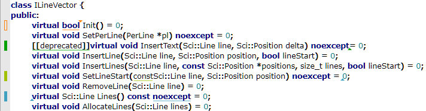
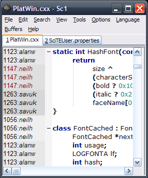
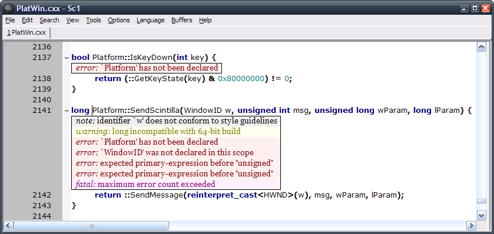
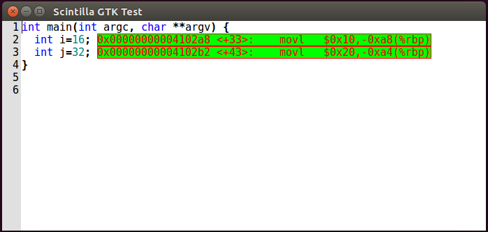
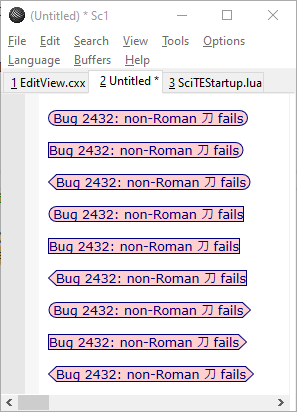
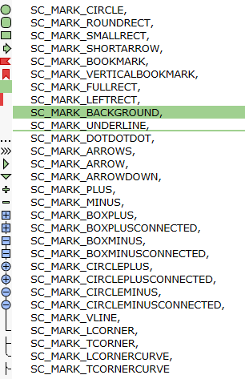
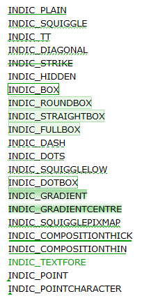

| Scintilla |
Last edited 12 February 2025 NH
Scintilla 5 has moved the lexers from Scintilla into a new
Lexilla project.
There is a guide to migrating to Lexilla.
There is an overview of the internal design of
Scintilla.
Some notes on using Scintilla.
How to use the Scintilla Edit Control on Windows.
A simple sample using Scintilla from
C++ on Windows.
A simple sample using Scintilla from
Visual Basic.
Bait is a tiny sample using Scintilla
on GTK.
ScintillaTest is a more complete
GTK sample which can be used to find bugs or prototype new features.
A detailed description of how to write a lexer, including a
discussion of folding.
Beginner's Guide to lexing and folding.
The coding style used in Scintilla and SciTE is
worth following if you want to contribute code to Scintilla but is not compulsory.
The Windows version of Scintilla is a Windows Control. As such, its primary programming interface is through Windows messages. Early versions of Scintilla emulated much of the API defined by the standard Windows Edit and RichEdit controls but those APIs are now deprecated in favour of Scintilla's own, more consistent API. In addition to messages performing the actions of a normal Edit control, Scintilla allows control of syntax styling, folding, markers, autocompletion and call tips.
The GTK version also uses messages in a similar way to the Windows version. This is different to normal GTK practice but made it easier to implement rapidly.
Scintilla also builds with Cocoa on macOS and with Qt, and follows the conventions of those platforms.
Scintilla provides only limited experimental support on Windows for right-to-left languages like Arabic and Hebrew. While text in these languages may appear correct, interaction with this text may not work correctly as occurs with other editors.
This documentation describes the individual messages and notifications used by Scintilla. It does not describe how to link them together to form a useful editor. For now, the best way to work out how to develop using Scintilla is to see how SciTE uses it. SciTE exercises most of Scintilla's facilities.
There is a more type-safe binding of this API that can be used from C++. It is implemented in the ScintillaTypes.h, ScintillaMessages.h, ScintillaStructures.h, and ScintillaCall.h headers and call/ScintillaCall.cxx. The ScintillaTypes.h, ScintillaMessages.h, and ScintillaStructures.h headers can be used without ScintillaCall but ScintillaCall makes it easier to use the other headers by wrapping the messages in methods which also avoids much type casting. ScintillaCall throws Scintilla::Failure exceptions when a call fails.
In the descriptions that follow, the messages are described as function calls with zero, one
or two arguments. These two arguments are the standard wParam and
lParam familiar to Windows programmers. These parameters are integers that
are large enough to hold pointers, and the return value is also an integer large enough to contain a
pointer.
Although the commands only use the
arguments described, because all messages have two arguments whether Scintilla uses them or
not, it is strongly recommended that any unused arguments are set to 0. This allows future
enhancement of messages without the risk of breaking existing code. Common argument types
are:
bool |
Arguments expect the values 0 for false and 1 for
true. |
|---|---|
int |
Arguments are 32-bit or 64-bit signed integers depending on the platform.
Equivalent to intptr_t. |
position |
Positions and lengths in document.
Equivalent to intptr_t. |
line |
A line number in the document.
Equivalent to intptr_t. |
const char * |
Arguments point at text that is being passed to Scintilla but not modified. The text may be zero terminated or another argument may specify the character count, the description will make this clear. |
char * |
Arguments point at text buffers that Scintilla will fill with text. In some cases, another argument will tell Scintilla the buffer size. In others, you must make sure that the buffer is big enough to hold the requested text. If a NULL pointer (0) is passed then, for SCI_* calls, the length that should be allocated, not including any terminating NUL, is returned. Some calls (marked "NUL-terminated") add a NUL character to the result but other calls do not: to generically handle both types, allocate one more byte than indicated and set it to NUL. |
pointer |
A memory address. In some cases this is a pointer to a sequence of char inside Scintilla that will only be available for a limited period. Equivalent to void *. |
colour |
Colours are set using the RGB format (Red, Green, Blue). The intensity of each colour is set in the range 0 to 255. If you have three such intensities, they are combined as: red | (green << 8) | (blue << 16). If you set all intensities to 255, the colour is white. If you set all intensities to 0, the colour is black. When you set a colour, you are making a request. What you will get depends on the capabilities of the system and the current screen mode. |
colouralpha |
Colours are set using the RGBA format (Red, Green, Blue, Alpha). This is similar to colour but with a byte of alpha added. They are combined as: red | (green << 8) | (blue << 16) | (alpha << 24). Fully opaque uses an alpha of 255. |
alpha |
Translucency is set using an alpha value.
Alpha ranges from 0 (SC_ALPHA_TRANSPARENT) which is completely transparent to
255 (SC_ALPHA_OPAQUE) which is opaque.
Previous versions used the value 256 (SC_ALPHA_NOALPHA) to indicate that drawing was to be
performed opaquely on the base layer. This is now discouraged and code should use the …LAYER…
methods to choose the layer. |
<unused> |
This is an unused argument. Setting it to 0 will ensure compatibility with future enhancements. |
For Scintilla 5.0, lexers have been split off into a separate Lexilla library. Scintilla is responsible for the GUI and calling lexers with Lexilla providing the lexers.
Lexilla is built as both a shared library and static library and applications may choose to link to one or the other.
See the Lexilla documentation for instructions on building and using Lexilla.
Lexilla follows the external lexer protocol so can be loaded by applications that support this.
As the protocol only supports object lexers, an additional function CreateLexer(const char *name)
is exposed which will create a lexer object (ILexer5 *) for any object lexer or function lexer.
Lexer libraries that provide the same functions as Lexilla may provide lexers for use by Scintilla, augmenting or replacing those provided by Lexilla.
A lexer created by Lexilla may be used in Scintilla by calling SCI_SETILEXER.
Messages with names of the form SCI_SETxxxxx often have a companion
SCI_GETxxxxx. To save tedious repetition, if the SCI_GETxxxxx message
returns the value set by the SCI_SETxxxxx message, the SET routine is
described and the GET routine is left to your imagination.
Each byte in a Scintilla document is associated with a byte of styling information. The combination of a character byte and a style byte is called a cell. Style bytes are interpreted an index into an array of styles.
In this document, 'character' normally refers to a byte even when multi-byte characters are used. Lengths measure the numbers of bytes, not the amount of characters in those bytes.
Positions within the Scintilla document refer to a character or the gap before that
character. The first character in a document is 0, the second 1 and so on. If a document
contains nLen characters, the last character is numbered nLen-1.
The caret exists between character positions and can be located from before the first character (0)
to after the last character (nLen).
There are places where the caret can not go where two character bytes make up one character.
This occurs when a DBCS character from a language like Japanese is included in the document or
when line ends are marked with the CP/M standard of a carriage return followed by a line feed.
The INVALID_POSITION constant (-1) represents an invalid position within the
document.
All lines of text in Scintilla are the same height, and this height is calculated from the largest font in any current style. This restriction is for performance; if lines differed in height then calculations involving positioning of text would require the text to be styled first.
SCI_GETTEXT(position length, char *text) → position
SCI_SETTEXT(<unused>, const char *text)
SCI_SETSAVEPOINT
SCI_GETLINE(line line, char *text) → position
SCI_REPLACESEL(<unused>, const char
*text)
SCI_SETREADONLY(bool readOnly)
SCI_GETREADONLY → bool
SCI_GETTEXTRANGE(<unused>, Sci_TextRange *tr) → position
SCI_GETTEXTRANGEFULL(<unused>, Sci_TextRangeFull *tr) → position
SCI_ALLOCATE(position bytes)
SCI_ALLOCATELINES(line lines)
SCI_ADDTEXT(position length, const char *text)
SCI_ADDSTYLEDTEXT(position length, cell *c)
SCI_APPENDTEXT(position length, const char *text)
SCI_INSERTTEXT(position pos, const char *text)
SCI_CHANGEINSERTION(position length, const char *text)
SCI_CLEARALL
SCI_DELETERANGE(position start, position lengthDelete)
SCI_CLEARDOCUMENTSTYLE
SCI_GETCHARAT(position pos) → int
SCI_GETSTYLEAT(position pos) → int
SCI_GETSTYLEINDEXAT(position pos) → int
SCI_GETSTYLEDTEXT(<unused>, Sci_TextRange *tr) → position
SCI_GETSTYLEDTEXTFULL(<unused>, Sci_TextRangeFull *tr) → position
SCI_RELEASEALLEXTENDEDSTYLES
SCI_ALLOCATEEXTENDEDSTYLES(int numberStyles) → int
SCI_TARGETASUTF8(<unused>, char *s) → position
SCI_ENCODEDFROMUTF8(const char *utf8, char *encoded) → position
SCI_SETLENGTHFORENCODE(position bytes)
SCI_GETTEXT(position length, char *text NUL-terminated) → position
This returns at most length characters of text from the start of the document plus one
terminating 0 character. When length is beyond document length, it returns document length.
To collect all the text in a document, use SCI_GETLENGTH
to get the number of characters in the document (nLen), allocate a character
buffer of length nLen+1 bytes, then call SCI_GETTEXT(nLen, char
*text). If the text argument is NULL(0) then the length that should be allocated to store the
entire document is returned.
If you then save the text, you should use SCI_SETSAVEPOINT to mark
the text as unmodified.
See also: SCI_GETSELTEXT,
SCI_GETCURLINE,
SCI_GETLINE,
SCI_GETSTYLEDTEXT,
SCI_GETTEXTRANGE
SCI_SETTEXT(<unused>, const char *text)
This replaces all the text in the document with the zero terminated text string you pass
in.
SCI_SETSAVEPOINT
This message tells Scintilla that the current state of the document is unmodified. This is
usually done when the file is saved or loaded, hence the name "save point". As Scintilla
performs undo and redo operations, it notifies the container that it has entered or left the
save point with and notification messages, allowing the container to know if the file
should be considered dirty or not.
See also: ,
SCI_GETLINE(line line, char *text) → position
This fills the buffer defined by text with the contents of the nominated line (lines start at
0). The buffer is not terminated by a NUL(0) character. It is up to you to make sure that the buffer
is long enough for the text, use . The returned value is the
number of characters copied to the buffer. The returned text includes any end of line
characters. If you ask for a line number outside the range of lines in the document, 0
characters are copied. If the text argument is 0 then the length that should be allocated
to store the entire line is returned.
See also: SCI_GETCURLINE,
SCI_GETSELTEXT,
SCI_GETTEXTRANGE,
SCI_GETSTYLEDTEXT,
SCI_GETTEXT
SCI_REPLACESEL(<unused>, const char *text)
The currently selected text between the anchor
and the current position is replaced by the 0 terminated text string. If the anchor and
current position are the same, the text is inserted at the caret position. The caret is
positioned after the inserted text and the caret is scrolled into view.
SCI_SETREADONLY(bool readOnly)
SCI_GETREADONLY → bool
These messages set and get the read-only flag for the document. If you mark a document as read
only, attempts to modify the text cause the notification.
SCI_GETTEXTRANGE(<unused>, Sci_TextRange *tr) → position
SCI_GETTEXTRANGEFULL(<unused>, Sci_TextRangeFull *tr) → position
This collects the text between the positions cpMin and cpMax and
copies it to lpstrText (see struct Sci_TextRange in
Scintilla.h). If cpMax is -1, text is returned to the end of the
document. The text is 0 terminated, so you must supply a buffer that is at least 1 character
longer than the number of characters you wish to read. The return value is the length of the
returned text not including the terminating 0.
SCI_GETTEXTRANGEFULL uses 64-bit positions on all platforms so is safe for documents larger than 2GB.
It should always be used in preference to SCI_GETTEXTRANGE which will be deprecated in a future release.
See also: SCI_GETSELTEXT,
SCI_GETLINE,
SCI_GETCURLINE,
SCI_GETSTYLEDTEXT,
SCI_GETTEXT
SCI_GETSTYLEDTEXT(<unused>, Sci_TextRange *tr) → position
SCI_GETSTYLEDTEXTFULL(<unused>, Sci_TextRangeFull *tr) → position
This collects styled text into a buffer using two bytes for each cell, with the character at
the lower address of each pair and the style byte at the upper address. Characters between the
positions cpMin and cpMax are copied to lpstrText (see
struct Sci_TextRange and struct Sci_TextRangeFull in Scintilla.h). Two 0 bytes are added to the end of
the text, so the buffer that lpstrText points at must be at least
2*(cpMax-cpMin)+2 bytes long. No check is made for sensible values of
cpMin or cpMax. Positions outside the document return character codes
and style bytes of 0.
SCI_GETSTYLEDTEXTFULL uses 64-bit positions on all platforms so is safe for documents larger than 2GB.
It should always be used in preference to SCI_GETSTYLEDTEXT which will be deprecated in a future release.
See also: SCI_GETSELTEXT,
SCI_GETLINE,
SCI_GETCURLINE,
SCI_GETTEXTRANGE,
SCI_GETTEXT
SCI_ALLOCATE(position bytes)
Allocate a document buffer large enough to store a given number of bytes.
The document will not be made smaller than its current contents.
SCI_ALLOCATELINES(line lines)
Allocate line indices to match the lines argument.
This is an optimization that can prevent multiple reallocations of the indices as text is inserted
if the application can estimate the number of lines in the document.
The number of lines will not be reduced by this call.
SCI_ADDTEXT(position length, const char *text)
This inserts the first length characters from the string
text
at the current position. This will include any 0's in the string that you might have expected
to stop the insert operation. The current position is set at the end of the inserted text,
but it is not scrolled into view.
SCI_ADDSTYLEDTEXT(position length, cell *c)
This behaves just like SCI_ADDTEXT, but inserts styled text.
SCI_APPENDTEXT(position length, const char *text)
This adds the first length characters from the string
text to the end
of the document. This will include any 0's in the string that you might have expected to stop
the operation. The current selection is not changed and the new text is not scrolled into
view.
SCI_INSERTTEXT(position pos, const char *text)
This inserts the zero terminated text string at position pos or at
the current position if pos is -1. If the current position is after the insertion point
then it is moved along with its surrounding text but no scrolling is performed.
SCI_CHANGEINSERTION(position length, const char *text)
This may only be called from a
notification handler and will change the text being inserted to that provided.
SCI_CLEARALL
Unless the document is read-only, this deletes all the text.
SCI_DELETERANGE(position start, position lengthDelete)
Deletes a range of text in the document.
SCI_CLEARDOCUMENTSTYLE
When wanting to completely restyle the document, for example after choosing a lexer, the
SCI_CLEARDOCUMENTSTYLE can be used to clear all styling information and reset the
folding state.
SCI_GETCHARAT(position pos) → int
This returns the character at pos in the document or 0 if pos is
negative or past the end of the document.
SCI_GETSTYLEAT(position pos) → int
SCI_GETSTYLEINDEXAT(position pos) → int
This returns the style at pos in the document, or 0 if pos is
negative or past the end of the document.
SCI_GETSTYLEAT may return a negative number for styles over 127 whereas SCI_GETSTYLEINDEXAT
will only return positive numbers.
SCI_GETSTYLEINDEXAT should be preferred as it handles styles more consistently and may avoid problems
with lexers that define more than 128 styles.
SCI_RELEASEALLEXTENDEDSTYLES
SCI_ALLOCATEEXTENDEDSTYLES(int numberStyles) → int
Extended styles are used for features like textual margins and annotations and autocompletion lists as well as
internally by Scintilla.
They are outside the range 0..255 used for the styles bytes associated with document bytes.
These functions manage the use of extended styles to ensures that components cooperate in defining styles.
SCI_RELEASEALLEXTENDEDSTYLES releases any extended styles allocated by the container.
SCI_ALLOCATEEXTENDEDSTYLES allocates a range of style numbers after the byte style values and returns
the number of the first allocated style.
Ranges for margin, annotation, and autocompletion list styles should be allocated before calling
SCI_MARGINSETSTYLEOFFSET or
SCI_ANNOTATIONSETSTYLEOFFSET or
SCI_AUTOCSETSTYLE.
Sci_TextRange and Sci_CharacterRange
These structures are defined to be exactly the same shape as the Win32 TEXTRANGE
and CHARRANGE, so that older code that treats Scintilla as a RichEdit will
work.
In a future release, these types will be deprecated.
SCI_GETTEXTRANGEFULL, Sci_TextRangeFull
and Sci_CharacterRangeFull should be used instead.
typedef long Sci_PositionCR;
struct Sci_CharacterRange {
Sci_PositionCR cpMin;
Sci_PositionCR cpMax;
};
struct Sci_TextRange {
struct Sci_CharacterRange chrg;
char *lpstrText;
};
Sci_TextRangeFull and Sci_CharacterRangeFull
These structures are the same as Sci_TextRange and Sci_CharacterRange except that positions are
always 64-bit in 64-bit builds so will work on documents larger than 2GB.
typedef ptrdiff_t Sci_Position;
struct Sci_CharacterRangeFull {
Sci_Position cpMin;
Sci_Position cpMax;
};
struct Sci_TextRangeFull {
struct Sci_CharacterRangeFull chrg;
char *lpstrText;
};
SCI_TARGETASUTF8(<unused>, char *s) → position
This method retrieves the value of the target encoded as UTF-8 which is the default
encoding of GTK so is useful for retrieving text for use in other parts of the user interface,
such as find and replace dialogs. The length of the encoded text in bytes is returned.
Cocoa uses UTF-16 which is easily converted from UTF-8 so this method can be used to perform the
more complex work of transcoding from the various encodings supported.
SCI_ENCODEDFROMUTF8(const char *utf8, char *encoded) → position
SCI_SETLENGTHFORENCODE(position bytes)
SCI_ENCODEDFROMUTF8 converts a UTF-8 string into the document's
encoding which is useful for taking the results of a find dialog, for example, and receiving
a string of bytes that can be searched for in the document. Since the text can contain nul bytes,
the SCI_SETLENGTHFORENCODE method can be used to set the
length that will be converted. If set to -1, the length is determined by finding a nul byte.
The length of the converted string is returned.
SCI_GETTEXTLENGTH → position
SCI_GETLENGTH → position
Both these messages return the length of the document in bytes.
SCI_GETLINECOUNT → line
This returns the number of lines in the document. An empty document contains 1 line. A
document holding only an end of line sequence has 2 lines.
SCI_LINESONSCREEN → line
This returns the number of complete lines visible on the screen. With a constant line height,
this is the vertical space available divided by the line separation. Unless you arrange to size
your window to an integral number of lines, there may be a partial line visible at the bottom
of the view.
SCI_GETMODIFY → bool
This returns non-zero if the document is modified and 0 if it is unmodified. The modified
status of a document is determined by the undo position relative to the save point. The save
point is set by ,
usually when you have saved data to a file.
If you need to be notified when the document becomes modified, Scintilla notifies the container that it has entered or left the save point with the and notification messages.
SCI_LINEFROMPOSITION(position pos) → line
This message returns the line that contains the position pos in the document. The
return value is 0 if pos <= 0. The return value is the last line if
pos is beyond the end of the document.
SCI_POSITIONFROMLINE(line line) → position
This returns the document position that corresponds with the start of the line. If
line is negative, the position of the line holding the start of the selection is
returned. If line is greater than the lines in the document, the return value is
-1. If line is equal to the number of lines in the document (i.e. 1 line past the
last line), the return value is the end of the document.
SCI_GETLINEENDPOSITION(line line) → position
This returns the position at the end of the line, before any line end characters. If line
is the last line in the document (which does not have any end of line characters) or greater,
the result is the size of the document.
If line is negative the result is undefined.
SCI_LINELENGTH(line line) → position
This returns the length of the line, including any line end characters. If line
is negative or beyond the last line in the document, the result is 0. If you want the length of
the line not including any end of line characters, use - .
SCI_GETCOLUMN(position pos) → position
This message returns the column number of a position pos within the document
taking the width of tabs into account. This returns the column number of the last tab on the
line before pos, plus the number of characters between the last tab and
pos. If there are no tab characters on the line, the return value is the number of
characters up to the position on the line. In both cases, double byte characters count as a
single character. This is probably only useful with monospaced fonts.
SCI_FINDCOLUMN(line line, position column) → position
This message returns the position of a column on a line
taking the width of tabs into account. It treats a multi-byte character as a single column.
Column numbers, like lines start at 0.
SCI_POSITIONBEFORE(position pos) → position
SCI_POSITIONAFTER(position pos) → position
These messages return the position before and after another position
in the document taking into account the current code page. The minimum
position returned is 0 and the maximum is the last position in the document.
If called with a position within a multi byte character will return the position
of the start/end of that character.
SCI_TEXTWIDTH(int style, const char *text) → int
This returns the pixel width of a string drawn in the given style which can
be used, for example, to decide how wide to make the line number margin in order to display a
given number of numerals.
SCI_TEXTHEIGHT(line line) → int
This returns the height in pixels of a particular line. Currently all lines are the same
height.
SCI_POSITIONFROMPOINT(int x, int y) → position
SCI_POSITIONFROMPOINTCLOSE(int x, int y) → position
SCI_POSITIONFROMPOINT finds the closest character position to a point and
SCI_POSITIONFROMPOINTCLOSE is similar but returns -1 if the point is outside the
window or not close to any characters.
SCI_CHARPOSITIONFROMPOINT(int x, int y) → position
SCI_CHARPOSITIONFROMPOINTCLOSE(int x, int y) → position
SCI_CHARPOSITIONFROMPOINT finds the closest character to a point and
SCI_CHARPOSITIONFROMPOINTCLOSE is similar but returns -1 if the point is outside the
window or not close to any characters. This is similar to the previous methods but finds characters rather than
inter-character positions.
SCI_POINTXFROMPOSITION(<unused>, position pos) → int
SCI_POINTYFROMPOSITION(<unused>, position pos) → int
These messages return the x and y display pixel location of text at position pos
in the document.
Most Scintilla APIs use byte positions but some applications want to use positions based on counting (UTF-32) characters or (UTF-16) code units or need to communicate with other code written in terms of characters or code units. With only byte positions, this may require examining many bytes to count characters or code units in the document but this may be sped up in some cases by indexing the line starts by character or code unit.
SCI_POSITIONRELATIVE(position pos, position relative) → positionSCI_POSITIONRELATIVE(position pos, position relative) → position
Count a number of whole characters before or after the argument position and return that position.
The minimum position returned is 0 and the maximum is the last position in the document.
If the position goes past the document end then 0 is returned.
SCI_COUNTCHARACTERS(position start, position end) → position
Returns the number of whole characters between two positions.
SCI_POSITIONRELATIVECODEUNITS(position pos, position relative) → position
SCI_COUNTCODEUNITS(position start, position end) → position
These are the UTF-16 versions of SCI_POSITIONRELATIVE and SCI_COUNTCHARACTERS
working in terms of UTF-16 code units.
SCI_GETLINECHARACTERINDEX → int
Returns which if any indexes are active. It may be SC_LINECHARACTERINDEX_NONE (0) or one or more
of SC_LINECHARACTERINDEX_UTF32 (1) if whole characters are indexed or
SC_LINECHARACTERINDEX_UTF16 (2) if UTF-16 code units are indexed.
Character indexes are currently only supported for UTF-8 documents.
SCI_ALLOCATELINECHARACTERINDEX(int lineCharacterIndex)
SCI_RELEASELINECHARACTERINDEX(int lineCharacterIndex)
Allocate or release one or more indexes using same enumeration as SCI_GETLINECHARACTERINDEX.
Different aspects of an application may need indexes for different periods and should allocate for those periods.
Indexes use additional memory so releasing them can help minimize memory but they also take time to recalculate.
Scintilla may also allocate indexes to support features like accessibility or input method editors.
Only one index of each type is created for a document at a time.
SCI_LINEFROMINDEXPOSITION(position pos, int lineCharacterIndex) → line
SCI_INDEXPOSITIONFROMLINE(line line, int lineCharacterIndex) → position
The document line of a particular character or code unit may be found by calling SCI_LINEFROMINDEXPOSITION with one of
SC_LINECHARACTERINDEX_UTF32 (1) or SC_LINECHARACTERINDEX_UTF16 (2).
The inverse action, finds the starting position of a document line either in characters or code units from the document start by calling
SCI_INDEXPOSITIONFROMLINE with the same lineCharacterIndex argument.
SCI_SETSTATUS(int status)
SCI_GETSTATUS → int
SCI_SETSTATUS(int status)
SCI_GETSTATUS → int
If an error occurs, Scintilla may set an internal error number that can be retrieved with
SCI_GETSTATUS.
To clear the error status call SCI_SETSTATUS(0).
Status values from 1 to 999 are errors and status SC_STATUS_WARN_START (1000)
and above are warnings.
The currently defined statuses are:
SC_STATUS_OK |
0 | No failures |
|---|---|---|
SC_STATUS_FAILURE |
1 | Generic failure |
SC_STATUS_BADALLOC |
2 | Memory is exhausted |
SC_STATUS_WARN_REGEX |
1001 | Regular expression is invalid |
Scintilla maintains a selection that stretches between two points, the anchor and the current position. If the anchor and the current position are the same, there is no selected text. Positions in the document range from 0 (before the first character), to the document size (after the last character). If you use messages, there is nothing to stop you setting a position that is in the middle of a CRLF pair, or in the middle of a 2 byte character. However, keyboard commands will not move the caret into such positions.
SCI_SETSEL(position anchor, position caret)
SCI_GOTOPOS(position caret)
SCI_GOTOLINE(line line)
SCI_SETCURRENTPOS(position caret)
SCI_GETCURRENTPOS → position
SCI_SETANCHOR(position anchor)
SCI_GETANCHOR → position
SCI_SETSELECTIONSTART(position anchor)
SCI_GETSELECTIONSTART → position
SCI_SETSELECTIONEND(position caret)
SCI_GETSELECTIONEND → position
SCI_SETEMPTYSELECTION(position caret)
SCI_SELECTALL
SCI_HIDESELECTION(bool hide)
SCI_GETSELECTIONHIDDEN → bool
SCI_GETSELTEXT(<unused>, char *text) → position
SCI_GETCURLINE(position length, char *text) → position
SCI_SELECTIONISRECTANGLE → bool
SCI_SETSELECTIONMODE(int selectionMode)
SCI_CHANGESELECTIONMODE(int selectionMode)
SCI_GETSELECTIONMODE → int
SCI_SETMOVEEXTENDSSELECTION(bool moveExtendsSelection)
SCI_GETMOVEEXTENDSSELECTION → bool
SCI_GETLINESELSTARTPOSITION(line line) → position
SCI_GETLINESELENDPOSITION(line line) → position
SCI_MOVECARETINSIDEVIEW
SCI_CHOOSECARETX
SCI_MOVESELECTEDLINESUP
SCI_MOVESELECTEDLINESDOWN
SCI_SETMOUSESELECTIONRECTANGULARSWITCH(bool mouseSelectionRectangularSwitch)
SCI_GETMOUSESELECTIONRECTANGULARSWITCH → bool
SCI_SETSEL(position anchor, position caret)
This message sets both the anchor and the current position. If caret is
negative, it means the end of the document. If anchor is negative, it means
remove any selection (i.e. set the anchor to the same position as caret). The
caret is scrolled into view after this operation.
SCI_GOTOPOS(position caret)
This removes any selection, sets the caret at caret and scrolls the view to make
the caret visible, if necessary. It is equivalent to
SCI_SETSEL(caret, caret). The anchor position is set the same as the current
position.
SCI_GOTOLINE(line line)
This removes any selection and sets the caret at the start of line number line
and scrolls the view (if needed) to make it visible. The anchor position is set the same as the
current position. If line is outside the lines in the document (first line is 0),
the line set is the first or last.
SCI_SETCURRENTPOS(position caret)
This sets the current position and creates a selection between the anchor and the current
position. The caret is not scrolled into view.
See also:
SCI_GETCURRENTPOS → position
This returns the current position.
SCI_SETANCHOR(position anchor)
This sets the anchor position and creates a selection between the anchor position and the
current position. The caret is not scrolled into view.
See also:
SCI_GETANCHOR → position
This returns the current anchor position.
SCI_SETSELECTIONSTART(position anchor)
SCI_SETSELECTIONEND(position caret)
These set the selection based on the assumption that the anchor position is less than the
current position. They do not make the caret visible. The table shows the positions of the
anchor and the current position after using these messages.
| New value for | anchor | caret |
|---|---|---|
SCI_SETSELECTIONSTART |
anchor |
Max(anchor, current) |
SCI_SETSELECTIONEND |
Min(anchor, caret) |
caret |
See also:
SCI_GETSELECTIONSTART → position
SCI_GETSELECTIONEND → position
These return the start and end of the selection without regard to which end is the current
position and which is the anchor. SCI_GETSELECTIONSTART returns the smaller of the
current position or the anchor position. SCI_GETSELECTIONEND returns the larger of
the two values.
SCI_SETEMPTYSELECTION(position caret)
This removes any selection and sets the caret at caret. The caret is not scrolled into view.
SCI_SELECTALL
This selects all the text in the document. The current position is not scrolled into view.
SCI_HIDESELECTION(bool hide)
SCI_GETSELECTIONHIDDEN → bool
The normal state is to make the selection visible by drawing it as set by , , and related calls.
However, if you hide the selection, it is drawn as normal text.
SCI_GETSELTEXT(<unused>, char *text NUL-terminated) → position
This copies the currently selected text and a terminating NUL(0) byte to the text
buffer. The buffer size should be determined by calling with a NULL pointer for the text argument:
1 + SCI_GETSELTEXT(0, NULL).
This allows for rectangular and discontiguous selections as well as simple selections.
See Multiple Selection for information on
how multiple and rectangular selections and virtual space are copied.
See also: SCI_GETCURLINE,
SCI_GETLINE,
SCI_GETTEXT,
SCI_GETSTYLEDTEXT,
SCI_GETTEXTRANGE
SCI_GETCURLINE(position length, char *text NUL-terminated) → position
This retrieves the text of the line containing the caret and returns the position within the
line of the caret. Pass in char* text pointing at a buffer large enough to hold
the text you wish to retrieve and a terminating NUL(0) character.
Set length to the
length of the buffer not including the terminating NUL character.
If the text argument is NULL(0) then the length that should be allocated
to store the entire current line is returned.
See also:
SCI_GETSELTEXT,
SCI_GETLINE,
SCI_GETTEXT,
SCI_GETSTYLEDTEXT,
SCI_GETTEXTRANGE
SCI_SELECTIONISRECTANGLE → bool
This returns 1 if the current selection is in rectangle mode, 0 if not.
SCI_SETSELECTIONMODE(int selectionMode)
SCI_CHANGESELECTIONMODE(int selectionMode)
SCI_GETSELECTIONMODE → int
The functions set, change, and get the selection mode, which can be
stream (SC_SEL_STREAM=0) or
rectangular (SC_SEL_RECTANGLE=1) or
by lines (SC_SEL_LINES=2)
or thin rectangular (SC_SEL_THIN=3).
When SCI_SETSELECTIONMODE sets these modes, regular caret moves will extend or reduce the selection,
until the mode is cancelled by a call with same value, or with SCI_CANCEL, or with SCI_SETMOVEEXTENDSSELECTION.
SCI_CHANGESELECTIONMODE sets the mode but does not make regular caret moves extend or reduce the selection.
The get function returns the current mode even if the selection was made by mouse or with regular extended moves.
SC_SEL_THIN is the mode after a rectangular selection has been typed into and ensures
that no characters are selected.
SCI_SETMOVEEXTENDSSELECTION(bool moveExtendsSelection)
SCI_GETMOVEEXTENDSSELECTION → bool
This controls whether regular caret moves extends the selection leaving the anchor unchanged.
It is 1 if regular caret moves will extend or reduce the selection, 0 if not.
SCI_SETSELECTIONMODE toggles this setting between on and off.
SCI_GETLINESELSTARTPOSITION(line line) → position
SCI_GETLINESELENDPOSITION(line line) → position
Retrieve the position of the start and end of the selection at the given line with
INVALID_POSITION returned if no selection on this line.
SCI_MOVECARETINSIDEVIEW
If the caret is off the top or bottom of the view, it is moved to the nearest line that is
visible to its current position. Any selection is lost.
SCI_CHOOSECARETX
Scintilla remembers the x value of the last position horizontally moved to explicitly by the
user and this value is then used when moving vertically such as by using the up and down keys.
This message sets the current x position of the caret as the remembered value.
SCI_MOVESELECTEDLINESUP
Move the selected lines up one line, shifting the line above after the selection.
The selection will be automatically extended to the beginning of the selection's first line and the end of the selection's last line.
If nothing was selected, the line the cursor is currently at will be selected.
SCI_MOVESELECTEDLINESDOWN
Move the selected lines down one line, shifting the line below before the selection.
The selection will be automatically extended to the beginning of the selection's first line and the end of the selection's last line.
If nothing was selected, the line the cursor is currently at will be selected.
SCI_SETMOUSESELECTIONRECTANGULARSWITCH(bool
mouseSelectionRectangularSwitch)
SCI_GETMOUSESELECTIONRECTANGULARSWITCH → bool
Enable or disable the ability to switch to rectangular selection mode while making a selection with the mouse.
When this option is turned on, mouse selections in stream mode can be switched to rectangular mode by pressing
the corresponding modifier key. They then stick to rectangular mode even when the modifier key is released again.
When this option is turned off, mouse selections will always stick to the mode the selection was started in. It
is off by default.
SCI_SETMULTIPLESELECTION(bool multipleSelection)
SCI_GETMULTIPLESELECTION → bool
SCI_SETADDITIONALSELECTIONTYPING(bool additionalSelectionTyping)
SCI_GETADDITIONALSELECTIONTYPING → bool
SCI_SETMULTIPASTE(int multiPaste)
SCI_GETMULTIPASTE → int
SCI_SETVIRTUALSPACEOPTIONS(int virtualSpaceOptions)
SCI_GETVIRTUALSPACEOPTIONS → int
SCI_SETRECTANGULARSELECTIONMODIFIER(int modifier)
SCI_GETRECTANGULARSELECTIONMODIFIER → int
SCI_GETSELECTIONS → int
SCI_GETSELECTIONEMPTY → bool
SCI_CLEARSELECTIONS
SCI_SETSELECTION(position caret, position anchor)
SCI_ADDSELECTION(position caret, position anchor)
SCI_SELECTIONFROMPOINT(int x, int y) → int
SCI_DROPSELECTIONN(int selection)
SCI_SETMAINSELECTION(int selection)
SCI_GETMAINSELECTION → int
SCI_SETSELECTIONNCARET(int selection, position caret)
SCI_GETSELECTIONNCARET(int selection) → position
SCI_SETSELECTIONNCARETVIRTUALSPACE(int selection, position space)
SCI_GETSELECTIONNCARETVIRTUALSPACE(int selection) → position
SCI_SETSELECTIONNANCHOR(int selection, position anchor)
SCI_GETSELECTIONNANCHOR(int selection) → position
SCI_SETSELECTIONNANCHORVIRTUALSPACE(int selection, position space)
SCI_GETSELECTIONNANCHORVIRTUALSPACE(int selection) → position
SCI_SETSELECTIONNSTART(int selection, position anchor)
SCI_GETSELECTIONNSTART(int selection) → position
SCI_GETSELECTIONNSTARTVIRTUALSPACE(int selection) → position
SCI_SETSELECTIONNEND(int selection, position caret)
SCI_GETSELECTIONNEND(int selection) → position
SCI_GETSELECTIONNENDVIRTUALSPACE(int selection) → position
SCI_SETRECTANGULARSELECTIONCARET(position caret)
SCI_GETRECTANGULARSELECTIONCARET → position
SCI_SETRECTANGULARSELECTIONCARETVIRTUALSPACE(position space)
SCI_GETRECTANGULARSELECTIONCARETVIRTUALSPACE → position
SCI_SETRECTANGULARSELECTIONANCHOR(position anchor)
SCI_GETRECTANGULARSELECTIONANCHOR → position
SCI_SETRECTANGULARSELECTIONANCHORVIRTUALSPACE(position space)
SCI_GETRECTANGULARSELECTIONANCHORVIRTUALSPACE → position
SCI_SETSELECTIONSERIALIZED(<unused>, const char *selectionString)
SCI_GETSELECTIONSERIALIZED(<unused>, char *selectionString) → position
SC_ELEMENT_SELECTION_ADDITIONAL_TEXT : colouralpha
SC_ELEMENT_SELECTION_ADDITIONAL_BACK : colouralpha
SCI_SETADDITIONALSELALPHA(alpha alpha)
SCI_GETADDITIONALSELALPHA → int
SCI_SETADDITIONALSELFORE(colour fore)
SCI_SETADDITIONALSELBACK(colour back)
SC_ELEMENT_CARET_ADDITIONAL : colouralpha
SCI_SETADDITIONALCARETFORE(colour fore)
SCI_GETADDITIONALCARETFORE → colour
SCI_SETADDITIONALCARETSBLINK(bool additionalCaretsBlink)
SCI_GETADDITIONALCARETSBLINK → bool
SCI_SETADDITIONALCARETSVISIBLE(bool additionalCaretsVisible)
SCI_GETADDITIONALCARETSVISIBLE → bool
SCI_SWAPMAINANCHORCARET
SCI_ROTATESELECTION
SCI_MULTIPLESELECTADDNEXT
SCI_MULTIPLESELECTADDEACH
There may be multiple selections active at one time. More selections are made by holding down the Ctrl key while dragging with the mouse. The most recent selection is the main selection and determines which part of the document is shown automatically. Any selection apart from the main selection is called an additional selection. The calls in the previous section operate on the main selection. There is always at least one selection. The selection can be simplified down to just the main selection by which is normally mapped to the Esc key.
Rectangular selections are handled as multiple selections although the original rectangular range is remembered so that subsequent operations may be handled differently for rectangular selections. For example, pasting a rectangular selection places each piece in a vertical column.
Virtual space is space beyond the end of each line. The caret may be moved into virtual space but no real space will be added to the document until there is some text typed or some other text insertion command is used.
When discontiguous selections are copied to the clipboard, each selection is added to the clipboard text in order with no delimiting characters. For rectangular selections the document's line end is added after each line's text. Rectangular selections are always copied from top line to bottom, not in the in order of selection.Virtual space is not copied.
SCI_SETMULTIPLESELECTION(bool multipleSelection)
SCI_GETMULTIPLESELECTION → bool
Enable or disable multiple selection. When multiple selection is disabled, it is not possible to select
multiple ranges by holding down the Ctrl key while dragging with the mouse.
SCI_SETADDITIONALSELECTIONTYPING(bool additionalSelectionTyping)
SCI_GETADDITIONALSELECTIONTYPING → bool
Whether typing, new line, cursor left/right/up/down, backspace, delete, home, and end work
with multiple selections simultaneously.
Also allows selection and word and line deletion commands.
SCI_SETMULTIPASTE(int multiPaste)
SCI_GETMULTIPASTE → int
When pasting into multiple selections, the pasted text can go into just the main selection with SC_MULTIPASTE_ONCE=0
or into each selection with SC_MULTIPASTE_EACH=1. SC_MULTIPASTE_ONCE is the default.
SCI_SETVIRTUALSPACEOPTIONS(int virtualSpaceOptions)
SCI_GETVIRTUALSPACEOPTIONS → int
Virtual space can be enabled or disabled for rectangular selections or in other circumstances or in both.
There are three bit flags SCVS_RECTANGULARSELECTION=1,
SCVS_USERACCESSIBLE=2, and
SCVS_NOWRAPLINESTART=4 which can be set independently.
SCVS_NONE=0, the default, disables all use of virtual space.
SCVS_NOWRAPLINESTART prevents left arrow movement and selection
from wrapping to the previous line.
This is most commonly desired in conjunction with virtual space but is an independent
setting so works without virtual space.
SCI_SETRECTANGULARSELECTIONMODIFIER(int modifier)
SCI_GETRECTANGULARSELECTIONMODIFIER → int
On GTK and Qt, the key used to indicate that a rectangular selection should be created when combined with a mouse drag can be set.
The three possible values are SCMOD_CTRL=2, SCMOD_ALT=4 (default) or SCMOD_SUPER=8.
Since SCMOD_ALT may already be used by a window manager, the window manager may need configuring to allow this choice.
SCMOD_SUPER is often a system dependent modifier key such as the Left Windows key on a Windows keyboard or the
Command key on a Mac.
SCI_GETSELECTIONS → int
Return the number of selections currently active. There is always at least one selection.
SCI_GETSELECTIONEMPTY → bool
Return 1 if every selected range is empty else 0.
SCI_CLEARSELECTIONS
Set a single empty selection at 0 as the only selection.
SCI_SETSELECTION(position caret, position anchor)
Set a single selection from anchor to caret as the only selection.
SCI_ADDSELECTION(position caret, position anchor)
Add a new selection from anchor to caret as the main selection retaining all other
selections as additional selections.
Since there is always at least one selection, to set a list of selections, the first selection should be
added with SCI_SETSELECTION and later selections added with SCI_ADDSELECTION
SCI_SELECTIONFROMPOINT(int x, int y) → int
Return the index of the selection at the point. If there is no selection at the point, return -1.
This can be used to drop a selection or make it the main selection.
SCI_DROPSELECTIONN(int selection)
If there are multiple selections, remove the indicated selection.
If this was the main selection then make the previous selection the main and if it was the first then the last selection becomes main.
If there is only one selection, or there is no selection selection, then there is no effect.
SCI_SETMAINSELECTION(int selection)
SCI_GETMAINSELECTION → int
One of the selections is the main selection which is used to determine what range of text is automatically visible.
The main selection may be displayed in different colours or with a differently styled caret.
Only an already existing selection can be made main.
SCI_SETSELECTIONNCARET(int selection, position caret)
SCI_GETSELECTIONNCARET(int selection) → position
SCI_SETSELECTIONNCARETVIRTUALSPACE(int selection, position space)
SCI_GETSELECTIONNCARETVIRTUALSPACE(int selection) → position
SCI_SETSELECTIONNANCHOR(int selection, position anchor)
SCI_GETSELECTIONNANCHOR(int selection) → position
SCI_SETSELECTIONNANCHORVIRTUALSPACE(int selection, position space)
SCI_GETSELECTIONNANCHORVIRTUALSPACE(int selection) → position
Set or query the position and amount of virtual space for the caret and anchor of each already existing selection.
SCI_SETSELECTIONNSTART(int selection, position anchor)
SCI_GETSELECTIONNSTART(int selection) → position
SCI_GETSELECTIONNSTARTVIRTUALSPACE(int selection) → position
SCI_SETSELECTIONNEND(int selection, position caret)
SCI_GETSELECTIONNEND(int selection) → position
SCI_GETSELECTIONNENDVIRTUALSPACE(int selection) → position
Set or query the start and end position of each already existing selection.
Query the virtual space at start and end of each selection.
Mostly of use to query each range for its text. The selection parameter is zero-based.
SCI_SETRECTANGULARSELECTIONCARET(position caret)
SCI_GETRECTANGULARSELECTIONCARET → position
SCI_SETRECTANGULARSELECTIONCARETVIRTUALSPACE(position space)
SCI_GETRECTANGULARSELECTIONCARETVIRTUALSPACE → position
SCI_SETRECTANGULARSELECTIONANCHOR(position anchor)
SCI_GETRECTANGULARSELECTIONANCHOR → position
SCI_SETRECTANGULARSELECTIONANCHORVIRTUALSPACE(position space)
SCI_GETRECTANGULARSELECTIONANCHORVIRTUALSPACE → position
Set or query the position and amount of virtual space for the caret and anchor of the rectangular selection.
After setting the rectangular selection, this is broken down into multiple selections, one for each line.
SCI_SETSELECTIONSERIALIZED(<unused>, const char *selectionString)
SCI_GETSELECTIONSERIALIZED(<unused>, char *selectionString) → position
Set or query the selection type and positions as a serialized string.
The format of this string may change in future versions so should not be persisted beyond the current session.
SC_ELEMENT_SELECTION_ADDITIONAL_TEXT : colouralpha
SC_ELEMENT_SELECTION_ADDITIONAL_BACK : colouralpha
SCI_SETADDITIONALSELALPHA(alpha alpha)
SCI_GETADDITIONALSELALPHA → int
SCI_SETADDITIONALSELFORE(colour fore)
SCI_SETADDITIONALSELBACK(colour back)
Modify the appearance of additional selections so that they can be differentiated from the main selection which has its appearance set with
SC_ELEMENT_SELECTION_TEXT,
SC_ELEMENT_SELECTION_BACK,
,
,
, and
.
The element APIs are preferred and the following messages discouraged.
The additional selection background is drawn on the layer defined for all selection backgrounds by
.
SCI_SETADDITIONALSELFORE and
SCI_SETADDITIONALSELBACK calls have no
effect until
and are
called with useSetting value set to true. Subsequent calls to
,
and will
overwrite the values set by SCI_SETADDITIONALSEL* functions.
SC_ELEMENT_CARET_ADDITIONAL : colouralpha
SCI_SETADDITIONALCARETFORE(colour fore)
SCI_GETADDITIONALCARETFORE → colour
SCI_SETADDITIONALCARETSBLINK(bool additionalCaretsBlink)
SCI_GETADDITIONALCARETSBLINK → bool
Modify the appearance of additional carets so that they can be differentiated from the main caret which has its appearance set with
SC_ELEMENT_CARET,
,
,
, and
.
SCI_SETADDITIONALCARETSVISIBLE(bool additionalCaretsVisible)
SCI_GETADDITIONALCARETSVISIBLE → bool
Determine whether to show additional carets (defaults to true).
SCI_SWAPMAINANCHORCARET
SCI_ROTATESELECTION
SCI_MULTIPLESELECTADDNEXT
SCI_MULTIPLESELECTADDEACH
These commands may be assigned to keys to make it possible to manipulate multiple selections.
SCI_SWAPMAINANCHORCARET moves the caret to the opposite end of the main selection.
SCI_ROTATESELECTION makes the next selection be the main selection.
SCI_MULTIPLESELECTADDNEXT adds the next occurrence of the main selection
within the target to the set of selections as main. If the current selection is empty then select word around caret.
The current searchFlags
are used so the application may choose case sensitivity and word search options.
SCI_MULTIPLESELECTADDEACH is similar to
SCI_MULTIPLESELECTADDNEXT but adds multiple occurrences instead of just one.
SCI_SETOVERTYPE(bool overType)
SCI_GETOVERTYPE → bool
SCI_SETOVERTYPE(bool overType)
SCI_GETOVERTYPE → bool
When overtype is enabled, each typed character replaces the character to the right of the text
caret. When overtype is disabled, characters are inserted at the caret.
SCI_GETOVERTYPE returns true (1) if overtyping is active, otherwise
false (0) will be returned. Use SCI_SETOVERTYPE to set the overtype
mode.
There are methods to search for text and for regular expressions.
Most applications should use
SCI_SEARCHINTARGET
as the basis for their search implementations.
Other calls augment this or were implemented before SCI_SEARCHINTARGET.
The base regular expression support
is limited and should only be used for simple cases and initial development.
The C++ runtime <regex> library may be used by setting the SCFIND_CXX11REGEX search flag.
The C++11 <regex> support may be disabled by
compiling Scintilla with NO_CXX11_REGEX defined.
A different regular expression
library can be integrated into Scintilla
or can be called from the container using direct access to the buffer contents through
SCI_GETCHARACTERPOINTER.
Searching can be performed within the target range with SCI_SEARCHINTARGET,
which uses a counted string to allow searching for null characters. It returns the
position of the start of the matching text range or -1 for failure, in which case the target is not moved. The flags used by
SCI_SEARCHINTARGET such as SCFIND_MATCHCASE,
SCFIND_WHOLEWORD, SCFIND_WORDSTART, and SCFIND_REGEXP
can be set with SCI_SETSEARCHFLAGS.
SCI_SETTARGETSTART(position start)
SCI_GETTARGETSTART → position
SCI_SETTARGETSTARTVIRTUALSPACE(position space)
SCI_GETTARGETSTARTVIRTUALSPACE → position
SCI_SETTARGETEND(position end)
SCI_GETTARGETEND → position
SCI_SETTARGETENDVIRTUALSPACE(position space)
SCI_GETTARGETENDVIRTUALSPACE → position
SCI_SETTARGETRANGE(position start, position end)
SCI_TARGETFROMSELECTION
SCI_TARGETWHOLEDOCUMENT
SCI_SETSEARCHFLAGS(int searchFlags)
SCI_GETSEARCHFLAGS → int
SCI_SEARCHINTARGET(position length, const char *text) → position
SCI_GETTARGETTEXT(<unused>, char *text) → position
SCI_REPLACETARGET(position length, const char *text) → position
SCI_REPLACETARGETMINIMAL(position length, const char *text) → position
SCI_REPLACETARGETRE(position length, const char *text) → position
SCI_GETTAG(int tagNumber, char *tagValue) → int
SCI_SETTARGETSTART(position start)
SCI_GETTARGETSTART → position
SCI_SETTARGETSTARTVIRTUALSPACE(position space)
SCI_GETTARGETSTARTVIRTUALSPACE → position
SCI_SETTARGETEND(position end)
SCI_GETTARGETEND → position
SCI_SETTARGETENDVIRTUALSPACE(position space)
SCI_GETTARGETENDVIRTUALSPACE → position
SCI_SETTARGETRANGE(position start, position end)
These functions set and return the start and end of the target. When searching
you can set start greater than end to find the last matching text in the
target rather than the first matching text.
Setting a target position with SCI_SETTARGETSTART, SCI_SETTARGETEND, or SCI_SETTARGETRANGE
sets the virtual space to 0.
The target is also set by a successful
SCI_SEARCHINTARGET.
The virtual space of the target range can be set and retrieved with the corresponding ...VIRTUALSPACE
methods. This allows text to be inserted in virtual space more easily.
SCI_TARGETFROMSELECTION
Set the target start and end to the start and end positions of the selection.
SCI_TARGETWHOLEDOCUMENT
Set the target start to the start of the document and target end to the end of the document.
SCI_SETSEARCHFLAGS(int searchFlags)
SCI_GETSEARCHFLAGS → int
These get and set the searchFlags used by
SCI_SEARCHINTARGET. There are several option flags including a simple regular
expression search.
SCI_SEARCHINTARGET(position length, const char *text) → position
This searches for the first occurrence of a text string in the target defined by
SCI_SETTARGETSTART and SCI_SETTARGETEND. The text string is not zero
terminated; the size is set by length. The search is modified by the search flags
set by SCI_SETSEARCHFLAGS. If the search succeeds, the target is set to the found
text and the return value is the position of the start of the matching text. If the search
fails, the result is -1.
SCI_GETTARGETTEXT(<unused>, char *text) → position
Retrieve the value in the target.
SCI_REPLACETARGET(position length, const char *text) → position
If length is -1, text is a zero terminated string, otherwise
length sets the number of character to replace the target with.
After replacement, the target range refers to the replacement text.
The return value is the length of the replacement string.
Note that the recommended way to delete text in the document is to set the target to the text to be removed,
and to perform a replace target with an empty string.
SCI_REPLACETARGETMINIMAL(position length, const char *text) → position
This is similar to
but tries to minimize change history when the current target text shares a common prefix or suffix with the replacement.
Only the text that is actually different is marked as changed.
This might be used when automatically reformatting some text
so that the whole area formatted doesn't show change marks.
If length is -1, text is a zero terminated string, otherwise
length sets the number of character to replace the target with.
After replacement, the target range refers to the replacement text.
The return value is the length of the replacement string.
Note that the recommended way to delete text in the document is to set the target to the text to be removed,
and to perform a replace target with an empty string.
SCI_REPLACETARGETRE(position length, const char *text) → position
This replaces the target using regular expressions. If length is -1,
text is a zero terminated string, otherwise length is the number of
characters to use. The replacement string is formed from the text string with any sequences of
\1 through \9 replaced by tagged matches from the most recent regular
expression search. \0 is replaced with all the matched text from the most recent search.
After replacement, the target range refers to the replacement text.
The return value is the length of the replacement string.
SCI_GETTAG(int tagNumber, char *tagValue NUL-terminated) → int
Discover what text was matched by tagged expressions in a regular expression search.
This is useful if the application wants to interpret the replacement string itself.
See also:
searchFlags
Several of the search routines use flag options, which include a simple regular expression
search. Combine the flag options by adding them:
SCFIND_NONE |
Default setting is case-insensitive literal match. |
SCFIND_MATCHCASE |
A match only occurs with text that matches the case of the search string. |
SCFIND_WHOLEWORD |
A match only occurs if the characters before and after are not word characters as defined by . |
SCFIND_WORDSTART |
A match only occurs if the character before is not a word character as defined by . |
SCFIND_REGEXP |
The search string should be interpreted as a regular expression.
Uses Scintilla's base implementation unless combined with SCFIND_CXX11REGEX. |
SCFIND_POSIX |
Treat regular expression in a more POSIX compatible manner
by interpreting bare ( and ) for tagged sections rather than \( and \).
Has no effect when SCFIND_CXX11REGEX is set. |
SCFIND_CXX11REGEX |
This flag may be set to use C++11 <regex> instead of Scintilla's basic regular expressions.
If the regular expression is invalid then -1 is returned and status is set to
SC_STATUS_WARN_REGEX.
The ECMAScript flag is set on the regex object and UTF-8 documents will exhibit Unicode-compliant
behaviour. For MSVC, where wchar_t is 16-bits, the regular expression ".." will match a single
astral-plane character. There may be other differences between compilers.
Must also have SCFIND_REGEXP set. |
In a regular expression, using Scintilla's base implementation, special characters interpreted are:
. |
Matches any character |
\( |
This marks the start of a region for tagging a match. |
\) |
This marks the end of a tagged region. |
\n |
Where n is 1 through 9 refers to the first through ninth tagged region
when replacing. For example, if the search string was Fred\([1-9]\)XXX and
the replace string was Sam\1YYY, when applied to Fred2XXX this
would generate Sam2YYY.
\0 refers to all of the matching text. |
\< |
This matches the start of a word using Scintilla's definitions of words. |
\> |
This matches the end of a word using Scintilla's definition of words. |
\x |
This allows you to use a character x that would otherwise have a special meaning. For example, \[ would be interpreted as [ and not as the start of a character set. |
[...] |
This indicates a set of characters, for example, [abc] means any of the characters a, b or c. You can also use ranges, for example [a-z] for any lower case character. |
[^...] |
The complement of the characters in the set. For example, [^A-Za-z] means any character except an alphabetic character. |
^ |
This matches the start of a line (unless used inside a set, see above). |
$ |
This matches the end of a line. |
* |
This matches 0 or more times. For example, Sa*m matches Sm,
Sam, Saam, Saaam and so on. |
+ |
This matches 1 or more times. For example, Sa+m matches
Sam, Saam, Saaam and so on. |
Regular expressions will only match ranges within a single line, never matching over multiple lines.
When using SCFIND_CXX11REGEX more features are available,
generally similar to regular expression support in JavaScript.
See the documentation of your C++ runtime for details on what is supported.
SCI_FINDTEXT(int searchFlags, Sci_TextToFind *ft) → position
SCI_FINDTEXTFULL(int searchFlags, Sci_TextToFindFull *ft) → position
SCI_SEARCHANCHOR
SCI_SEARCHNEXT(int searchFlags, const char *text) → position
SCI_SEARCHPREV(int searchFlags, const char *text) → position
SCI_FINDTEXT(int searchFlags, Sci_TextToFind *ft) → position
SCI_FINDTEXTFULL(int searchFlags, Sci_TextToFindFull *ft) → position
These messages search for text in the document. They do not use or move the current selection.
The searchFlags argument controls the
search type, which includes regular expression searches.
You can search backwards to find the previous occurrence of a search string by setting the end of the search range before the start.
The Sci_TextToFind and Sci_TextToFindFull structures are defined in Scintilla.h; set
chrg.cpMin and chrg.cpMax with the range of positions in the document
to search. You can search backwards by
setting chrg.cpMax less than chrg.cpMin.
Set the lpstrText member of Sci_TextToFind to point at a zero terminated
text string holding the search pattern. If your language makes the use of Sci_TextToFind
difficult, you should consider using SCI_SEARCHINTARGET instead.
On 64-bit Win32, SCI_FINDTEXT is limited to the first 2G of text and SCI_FINDTEXTFULL removes this limitation.
The return value is -1 if the search fails or the position of the start of the found text if
it succeeds. The chrgText.cpMin and chrgText.cpMax members of
Sci_TextToFind are filled in with the start and end positions of the found text.
See also:
Sci_TextToFind
This structure is defined to have exactly the same shape as the Win32 structure
FINDTEXTEX for old code that treated Scintilla as a RichEdit control.
struct Sci_TextToFind {
struct Sci_CharacterRange chrg; // range to search
const char *lpstrText; // the search pattern (zero terminated)
struct Sci_CharacterRange chrgText; // returned as position of matching text
};
Sci_TextToFindFull
This structure extends Sci_TextToFind to support huge documents on Win32.
struct Sci_TextToFindFull {
struct Sci_CharacterRangeFull chrg; // range to search
const char *lpstrText; // the search pattern (zero terminated)
struct Sci_CharacterRangeFull chrgText; // returned as position of matching text
};
SCI_SEARCHANCHOR
SCI_SEARCHNEXT(int searchFlags, const char *text) → position
SCI_SEARCHPREV(int searchFlags, const char *text) → position
These messages provide relocatable search support. This allows multiple incremental
interactive searches to be macro recorded while still setting the selection to found text so
the find/select operation is self-contained. These three messages send notifications if macro recording is enabled.
SCI_SEARCHANCHOR sets the search start point used by
SCI_SEARCHNEXT and SCI_SEARCHPREV to the start of the current
selection, that is, the end of the selection that is nearer to the start of the document. You
should always call this before calling either of SCI_SEARCHNEXT or
SCI_SEARCHPREV.
SCI_SEARCHNEXT and SCI_SEARCHPREV search for the next and previous
occurrence of the zero terminated search string pointed at by text. The search is modified by
the searchFlags.
The return value is -1 if nothing is found, otherwise the return value is the start position of the matching text. The selection is updated to show the matched text, but is not scrolled into view.
See also: ,
SCI_CUT
SCI_COPY
SCI_PASTE
SCI_CLEAR
SCI_CANPASTE → bool
SCI_COPYRANGE(position start, position end)
SCI_COPYTEXT(position length, const char *text)
SCI_COPYALLOWLINE
SCI_CUTALLOWLINE
SCI_SETPASTECONVERTENDINGS(bool convert)
SCI_GETPASTECONVERTENDINGS → bool
SCI_SETCOPYSEPARATOR(<unused>, const char *separator)
SCI_GETCOPYSEPARATOR(<unused>, char *separator) → int
SCI_REPLACERECTANGULAR(position length, const char *text)
SCI_CUT
SCI_COPY
SCI_PASTE
SCI_CLEAR
SCI_CANPASTE → bool
SCI_COPYALLOWLINE
SCI_CUTALLOWLINE
These commands perform the standard tasks of cutting and copying data to the clipboard,
pasting from the clipboard into the document, and clearing the document.
SCI_CANPASTE returns non-zero if the document isn't read-only and if the selection
doesn't contain protected text. If you need a "can copy" or "can cut", use
SCI_GETSELECTIONEMPTY(), which will be zero if there are any non-empty
selection ranges implying that a copy or cut to the clipboard should work.
GTK does not really support SCI_CANPASTE and always returns true
unless the document is read-only.
On X, the clipboard is asynchronous and may require several messages between the destination and source applications. Data from SCI_PASTE will not arrive in the document immediately.
SCI_COPYALLOWLINE works the same as SCI_COPY except that if the
selection is empty then the current line is copied. On Windows, an extra "MSDEVLineSelect" marker
is added to the clipboard which is then used in SCI_PASTE to paste
the whole line before the current line.
SCI_CUTALLOWLINE works the same as SCI_CUT except that if the
selection is empty then the current line is cut. On Windows, an extra "MSDEVLineSelect" marker
is added to the clipboard which is then used in SCI_PASTE to paste
the whole line before the current line.
SCI_COPYRANGE copies a range of text from the document to
the system clipboard and SCI_COPYTEXT copies a supplied piece of
text to the system clipboard.
SCI_SETPASTECONVERTENDINGS(bool convert)
SCI_GETPASTECONVERTENDINGS → bool
If this property is set then when text is pasted any line ends are converted to match the document's
end of line mode as set with
SCI_SETEOLMODE.
Defaults to true.
SCI_SETCOPYSEPARATOR(<unused>, const char *separator)
SCI_GETCOPYSEPARATOR(<unused>, char *separator) → int
When a multiple selection is copied, this string property is added between each part.
Defaults to empty.
SCI_REPLACERECTANGULAR(position length, const char *text)
Replaces the selected text or empty selection with the given text.
The insertion is performed similarly to rectangular pastes: new lines in the given text are interpreted as
moving to the next line without inserting new lines unless at the end of the document.
Scintilla has multiple level undo and redo. It will continue to collect undoable actions
until memory runs out. Scintilla saves actions that change the document. Scintilla does not
save caret and selection movements, view scrolling and the like. Sequences of typing or
deleting are compressed into single transactions to make it easier to undo and redo at a sensible
level of detail. Sequences of actions can be combined into transactions that are undone as a unit.
These sequences occur between SCI_BEGINUNDOACTION and
SCI_ENDUNDOACTION messages. These transactions can be nested and only the top-level
sequences are undone as units.
SCI_UNDO
SCI_CANUNDO → bool
SCI_EMPTYUNDOBUFFER
SCI_REDO
SCI_CANREDO → bool
SCI_SETUNDOCOLLECTION(bool collectUndo)
SCI_GETUNDOCOLLECTION → bool
SCI_BEGINUNDOACTION
SCI_ENDUNDOACTION
SCI_GETUNDOSEQUENCE → int
SCI_ADDUNDOACTION(int token, int flags)
SCI_SETUNDOSELECTIONHISTORY(int undoSelectionHistory)
SCI_GETUNDOSELECTIONHISTORY → int
SCI_UNDO
SCI_CANUNDO → bool
SCI_UNDO undoes one action, or if the undo buffer has reached a
SCI_ENDUNDOACTION point, all the actions back to the corresponding
SCI_BEGINUNDOACTION.
SCI_CANUNDO returns 0 if there is nothing to undo, and 1 if there is. You would
typically use the result of this message to enable/disable the Edit menu Undo command.
SCI_REDO
SCI_CANREDO → bool
SCI_REDO undoes the effect of the last SCI_UNDO operation.
SCI_CANREDO returns 0 if there is no action to redo and 1 if there are undo
actions to redo. You could typically use the result of this message to enable/disable the Edit
menu Redo command.
SCI_EMPTYUNDOBUFFER
This command tells Scintilla to forget any saved undo or redo history. It also sets the save
point to the start of the undo buffer, so the document will appear to be unmodified. This does
not cause the notification to be sent to the
container.
See also:
SCI_SETUNDOCOLLECTION(bool collectUndo)
SCI_GETUNDOCOLLECTION → bool
You can control whether Scintilla collects undo information with
SCI_SETUNDOCOLLECTION. Pass in true (1) to collect information and
false (0) to stop collecting. If you stop collection, you should also use
SCI_EMPTYUNDOBUFFER to avoid the undo buffer being unsynchronized with the data in
the buffer.
You might wish to turn off saving undo information if you use the Scintilla to store text generated by a program (a Log view) or in a display window where text is often deleted and regenerated.
SCI_BEGINUNDOACTION
SCI_ENDUNDOACTION
Send these two messages to Scintilla to mark the beginning and end of a sequence of operations that
you want to undo all as one operation but that you have to generate as several operations.
Alternatively, you can use these to mark a set of operations that you do not want to have
combined with the preceding or following operations if they are undone.
SCI_GETUNDOSEQUENCE → int
Determine if an undo sequence is active with a positive value indicating that a sequence is active and 0 that there is no current sequence.
The value returned is the nesting depth of the sequence, that is, the number of times SCI_BEGINUNDOACTION
was called without a correspnding SCI_ENDUNDOACTION.
A negative value indicates an error.
SCI_ADDUNDOACTION(int token, int flags)
The container can add its own actions into the undo stack by calling
SCI_ADDUNDOACTION and an SCN_MODIFIED
notification will be sent to the container with the
flag when it is time to undo (SC_PERFORMED_UNDO) or
redo (SC_PERFORMED_REDO) the action. The token argument supplied is
returned in the token field of the notification.
For example, if the container wanted to allow undo and redo of a 'toggle bookmark' command then
it could call SCI_ADDUNDOACTION(line, 0) each time the command is performed.
Then when it receives a notification to undo or redo it toggles a bookmark on the line given by
the token field. If there are different types of commands or parameters that need to be stored into the undo
stack then the container should maintain a stack of its own for the document and use the current
position in that stack as the argument to SCI_ADDUNDOACTION(line).
SCI_ADDUNDOACTION commands are not combined together
into a single undo transaction unless grouped with SCI_BEGINUNDOACTION
and SCI_ENDUNDOACTION.
The flags argument can be UNDO_MAY_COALESCE (1) if the container action may be
coalesced along with any insertion and deletion actions into a single compound action, otherwise
UNDO_NONE (0).
Coalescing treats coalescible container actions as transparent so will still only group together insertions that
look like typing or deletions that look like multiple uses of the Backspace or Delete keys.
SCI_SETUNDOSELECTIONHISTORY(int undoSelectionHistory)
SCI_GETUNDOSELECTIONHISTORY → int
The selection for each action can be saved and then restored when undo or redo is performed.
SCI_SETUNDOSELECTIONHISTORY controls this.
There is a memory cost for this feature with a minimum of 150 bytes for each of undo and redo for each recorded action.
Recording may be turned on at any time.
The undoSelectionHistory argument can be:
SC_UNDO_SELECTION_HISTORY_DISABLED |
0 | The default: undo selection history turned off. |
|---|---|---|
SC_UNDO_SELECTION_HISTORY_ENABLED |
1 | Restore selection for each undo and redo. |
This feature is unfinished and has limitations. When change history is active, it may show different changes than the previous session as undo actions performed in that session are discarded in some circumstances such as when detaching from a save point. A future version may add an API for archiving change history alongside undo history. The operation sequences discussed here are a 'golden path' that has been tested to some extent and calling the APIs in other circumstances or with out-of-bounds values may fail.
The behaviour of tentative actions in save and restore is uncertain as these are meant to be short-term states in language input and which need to synchronize with a language IME (input method editor). For now, restore the tentative point to -1 as it seems safest to regard the tentative change as committed.
Scintilla stores each change in an undo stack. Various inter-action points play roles in undo behaviour: actions count, save point, detach point, tentative point, and current action. Just like positions in documents, these points are between actions in the undo stack. Thus the current action specifies the number of actions that led to the current document state and actions after this are for redo. The save point specifies that the actions before this point are in the most recent save and actions after this are not yet saved.
When the user undoes from a save point and then performs a new change, the save point can no longer be reached and is -1. The detach point is the point at which the undo stack branched away from the saved state and is used by change history.
It is possible to retrieve the undo stack from Scintilla and subsequently restore the state of the stack.
An application may save both the document and its save stack between sessions to enable the user to return to the same state the next time they edit. For this to work, the loaded file must be exactly the same as when the undo stack was saved. If the file was changed, even in minor ways like converting line ends from Windows to Unix style then the undo actions will not line up so undo may fail completely and will produce unexpected results.
SCI_GETUNDOACTIONS → int
SCI_SETUNDOSAVEPOINT(int action)
SCI_GETUNDOSAVEPOINT → int
SCI_SETUNDODETACH(int action)
SCI_GETUNDODETACH → int
SCI_SETUNDOTENTATIVE(int action)
SCI_GETUNDOTENTATIVE → int
SCI_SETUNDOCURRENT(int action)
SCI_GETUNDOCURRENT → int
SCI_PUSHUNDOACTIONTYPE(int type, position pos)
SCI_CHANGELASTUNDOACTIONTEXT(position length, const char *text)
SCI_GETUNDOACTIONTYPE(int action) → int
SCI_GETUNDOACTIONPOSITION(int action) → position
SCI_GETUNDOACTIONTEXT(int action, char *text) → int
The retrieval APIs are the 'GET*' ones:
SCI_GETUNDOACTIONS,
SCI_GETUNDOSAVEPOINT,
SCI_GETUNDODETACH,
SCI_GETUNDOTENTATIVE,
SCI_GETUNDOCURRENT,
SCI_GETUNDOACTIONTYPE,
SCI_GETUNDOACTIONPOSITION, and
SCI_GETUNDOACTIONTEXT.
The SCI_GETUNDOACTIONS,
SCI_GETUNDOSAVEPOINT, SCI_GETUNDODETACH,
SCI_GETUNDOTENTATIVE, and SCI_GETUNDOCURRENT
APIs each return a single value and may be called in any order.
The SCI_GETUNDOACTIONTYPE,
SCI_GETUNDOACTIONPOSITION, and SCI_GETUNDOACTIONTEXT
APIs take an action index and should be called with indices from 0 to one less than the result of
SCI_GETUNDOACTIONS.
The actions should only be iterated in the positive direction and should start from 0.
That is because undo stack data is not all randomly accessible and iterating in other orders may take O(n^2) time.
Data may also be inaccurate if a cursor is not initialised first with 0 index calls.
Restoration is only possible when the undo state is empty so SCI_EMPTYUNDOBUFFER
should be called first if there may already be some undo actions.
The restore APIs are the 'SET*' and others:
SCI_SETUNDOSAVEPOINT,
SCI_SETUNDODETACH,
SCI_SETUNDOTENTATIVE,
SCI_SETUNDOCURRENT,
SCI_PUSHUNDOACTIONTYPE, and
SCI_CHANGELASTUNDOACTIONTEXT.
The history should first be set up with SCI_PUSHUNDOACTIONTYPE and
SCI_CHANGELASTUNDOACTIONTEXT then the save, detach, tentative, and current points set
with SCI_SETUNDOSAVEPOINT, SCI_SETUNDODETACH, SCI_SETUNDOTENTATIVE, and
SCI_SETUNDOCURRENT.
SCI_PUSHUNDOACTIONTYPE(int type, position pos) appends an action to the undo stack
with a particular type and position then the text and length of that action are set with
SCI_CHANGELASTUNDOACTIONTEXT(position length, const char *text).
The last restoration API called should be SCI_SETUNDOCURRENT as this validates
the restored history and values against the document. For example, an undo history that could cause a negative
document length or insert / remove text outside the document is invalid.
If the restored undo state is invalid then a failure status is set and the undo history cleared.
Check for failure with SCI_GETSTATUS.
The current implementation may only work when there is no tentative point.
Scintilla can display document changes (modified, saved, ...) in the margin or in the text.
The main states are original text that has not been modified, modified, and modified then saved. As it is possible to undo to before the save point, there are additional states for reverted from save and reverted back to original from save. The reverted states are different to the saved document on disk so some applications may want to display these states just like the main modified state.

The image shows the default visuals which can be altered by the application. In the text, inserted characters appear with coloured underlines and points where characters were deleted are shown with small triangles. The margin shows a block indicating the overall state of the line, prioritizing the more consequential modified states. The states are modified (orange), saved (green), saved then reverted to modified (green-yellow), and saved then reverted to original (cyan).
This feature uses a moderate amount of memory proportional to the amount of modifications made. On huge documents, this could be significant so could be disabled when it would cause excessive memory use.
If the applications wants to display a simplified set of visuals without differentiating between modifications that have been reverted then assign the same attributes to multiple markers and indicators.
SCI_SETCHANGEHISTORY(int changeHistory)
SCI_GETCHANGEHISTORY → int
SCI_SETCHANGEHISTORY(int changeHistory)
SCI_GETCHANGEHISTORY → int
SCI_SETCHANGEHISTORY turns this feature on and off and determines whether changes are visible in
the margin or text or both.
Change history depends on the undo history and can only be enabled when undo history is enabled and empty. It should be enabled once when a file is loaded after calling SCI_SETUNDOCOLLECTION(true) and SCI_SETSAVEPOINT.
The changeHistory argument can be a combination of:
SC_CHANGE_HISTORY_DISABLED |
0 | The default: change history turned off. |
|---|---|---|
SC_CHANGE_HISTORY_ENABLED |
1 | Track changes to the document. |
SC_CHANGE_HISTORY_MARKERS |
2 | Display changes in the margin using the SC_MARKNUM_HISTORY markers. |
SC_CHANGE_HISTORY_INDICATORS |
4 | Display changes in the text using the INDICATOR_HISTORY indicators. |
There are default visuals assigned to each history marker and indicator but these may be overridden by the application.
Markers:
SC_MARKNUM_HISTORY_REVERTED_TO_ORIGIN |
21 | A change was made to this line and saved but then reverted to its original state. | This line is different to its state on disk. |
|---|---|---|---|
SC_MARKNUM_HISTORY_SAVED |
22 | This line was modified and saved. | This line is the same as its state on disk. |
SC_MARKNUM_HISTORY_MODIFIED |
23 | This line was modified but not yet saved. | This line is different to its state on disk. |
SC_MARKNUM_HISTORY_REVERTED_TO_MODIFIED |
24 | A change was made to this line and saved but then reverted but not to its original state. | This line is different to its state on disk. |
The bits used for change history markers are specified by SC_MASK_HISTORY, which is commonly
used as an argument to SCI_SETMARGINMASKN when defining a margin to be used for change history.
Indicators:
INDICATOR_HISTORY_REVERTED_TO_ORIGIN_INSERTION |
36 | Text was deleted and saved but then reverted to its original state. | This text has not been saved to disk. |
|---|---|---|---|
INDICATOR_HISTORY_REVERTED_TO_ORIGIN_DELETION |
37 | Text was inserted and saved but then reverted to its original state. | There is text on disk that is missing. |
INDICATOR_HISTORY_SAVED_INSERTION |
38 | Text was inserted and saved. | This text is the same as on disk. |
INDICATOR_HISTORY_SAVED_DELETION |
39 | Text was deleted and saved. | This range is the same as on disk. |
INDICATOR_HISTORY_MODIFIED_INSERTION |
40 | Text was inserted but not yet saved. | This text has not been saved to disk. |
INDICATOR_HISTORY_MODIFIED_DELETION |
41 | Text was deleted but not yet saved. | There is text on disk that is missing. |
INDICATOR_HISTORY_REVERTED_TO_MODIFIED_INSERTION |
42 | Text was deleted and saved but then reverted but not to its original state. | This text has not been saved to disk. |
INDICATOR_HISTORY_REVERTED_TO_MODIFIED_DELETION |
43 | Text was inserted and saved but then reverted but not to its original state. | There is text on disk that is missing. |
SCI_SETFIRSTVISIBLELINE(line displayLine)
SCI_GETFIRSTVISIBLELINE → line
SCI_SETXOFFSET(int xOffset)
SCI_GETXOFFSET → int
SCI_LINESCROLL(position columns, line lines)
SCI_SCROLLCARET
SCI_SCROLLRANGE(position secondary, position primary)
SCI_SETXCARETPOLICY(int caretPolicy, int
caretSlop)
SCI_SETYCARETPOLICY(int caretPolicy, int
caretSlop)
SCI_SETVISIBLEPOLICY(int visiblePolicy, int
visibleSlop)
SCI_SETHSCROLLBAR(bool visible)
SCI_GETHSCROLLBAR → bool
SCI_SETVSCROLLBAR(bool visible)
SCI_GETVSCROLLBAR → bool
SCI_SETSCROLLWIDTH(int pixelWidth)
SCI_GETSCROLLWIDTH → int
SCI_SETSCROLLWIDTHTRACKING(bool tracking)
SCI_GETSCROLLWIDTHTRACKING → bool
SCI_SETENDATLASTLINE(bool
endAtLastLine)
SCI_GETENDATLASTLINE → bool
SCI_SETFIRSTVISIBLELINE(line displayLine)
SCI_GETFIRSTVISIBLELINE → line
These messages retrieve and set the line number of the first visible line in the Scintilla view. The first line
in the document is numbered 0. The value is a visible line rather than a document line.
SCI_SETXOFFSET(int xOffset)
SCI_GETXOFFSET → int
The xOffset is the horizontal scroll position in pixels of the start of the text
view. A value of 0 is the normal position with the first text column visible at the left of the
view.
SCI_LINESCROLL(position columns, line lines)
This will attempt to scroll the display by the number of columns and lines that you specify.
Positive line values increase the line number at the top of the screen (i.e. they move the text
upwards as far as the user is concerned), Negative line values do the reverse.
The column measure is the width of a space in the default style. Positive values increase the column at the left edge of the view (i.e. they move the text leftwards as far as the user is concerned). Negative values do the reverse.
See also:
SCI_SCROLLCARET
If the current position (this is the caret if there is no selection) is not visible, the view
is scrolled to make it visible according to the current caret policy.
SCI_SCROLLRANGE(position secondary, position primary)
Scroll the argument positions and the range between them into view giving
priority to the primary position then the secondary position.
The behaviour is similar to
with the primary position used instead of the caret. An effort is then made to ensure that the secondary
position and range between are also visible.
This may be used to make a search match visible.
SCI_SETXCARETPOLICY(int caretPolicy, int caretSlop)
SCI_SETYCARETPOLICY(int caretPolicy, int caretSlop)
These set the caret policy. The value of caretPolicy is a combination of
CARET_SLOP, CARET_STRICT, CARET_JUMPS and
CARET_EVEN.
CARET_SLOP |
If set, we can define a slop value: caretSlop. This value defines an
unwanted zone (UZ) where the caret is... unwanted. This zone is defined as a number of
pixels near the vertical margins, and as a number of lines near the horizontal margins.
By keeping the caret away from the edges, it is seen within its context. This makes it
likely that the identifier that the caret is on can be completely seen, and that the
current line is seen with some of the lines following it, which are often dependent on
that line. |
|---|---|
CARET_STRICT |
If set, the policy set by CARET_SLOP is enforced... strictly. The caret
is centred on the display if caretSlop is not set, and cannot go in the UZ
if caretSlop is set. |
CARET_JUMPS |
If set, the display is moved more energetically so the caret can move in the same direction longer before the policy is applied again. '3UZ' notation is used to indicate three time the size of the UZ as a distance to the margin. |
CARET_EVEN |
If not set, instead of having symmetrical UZs, the left and bottom UZs are extended up to right and top UZs respectively. This way, we favour the displaying of useful information: the beginning of lines, where most code reside, and the lines after the caret, for example, the body of a function. |
| slop | strict | jumps | even | Caret can go to the margin | On reaching limit (going out of visibility or going into the UZ) display is... |
|---|---|---|---|---|---|
| 0 | 0 | 0 | 0 | Yes | moved to put caret on top/on right |
| 0 | 0 | 0 | 1 | Yes | moved by one position |
| 0 | 0 | 1 | 0 | Yes | moved to put caret on top/on right |
| 0 | 0 | 1 | 1 | Yes | centred on the caret |
| 0 | 1 | - | 0 | Caret is always on top/on right of display | - |
| 0 | 1 | - | 1 | No, caret is always centred | - |
| 1 | 0 | 0 | 0 | Yes | moved to put caret out of the asymmetrical UZ |
| 1 | 0 | 0 | 1 | Yes | moved to put caret out of the UZ |
| 1 | 0 | 1 | 0 | Yes | moved to put caret at 3UZ of the top or right margin |
| 1 | 0 | 1 | 1 | Yes | moved to put caret at 3UZ of the margin |
| 1 | 1 | - | 0 | Caret is always at UZ of top/right margin | - |
| 1 | 1 | 0 | 1 | No, kept out of UZ | moved by one position |
| 1 | 1 | 1 | 0 | No, kept out of UZ | moved to put caret at 3UZ of the margin |
SCI_SETVISIBLEPOLICY(int visiblePolicy, int visibleSlop)
This determines how the vertical positioning is determined when is
called. It takes VISIBLE_SLOP and VISIBLE_STRICT flags for the visiblePolicy
parameter. It is similar in operation to .
SCI_SETHSCROLLBAR(bool visible)
SCI_GETHSCROLLBAR → bool
The horizontal scroll bar is only displayed if it is needed for the assumed width.
If you never wish to see it, call
SCI_SETHSCROLLBAR(0). Use SCI_SETHSCROLLBAR(1) to enable it again.
SCI_GETHSCROLLBAR returns the current state. The default state is to display it
when needed.
See also: SCI_SETSCROLLWIDTH.
SCI_SETVSCROLLBAR(bool visible)
SCI_GETVSCROLLBAR → bool
By default, the vertical scroll bar is always displayed when required. You can choose to hide
or show it with SCI_SETVSCROLLBAR and get the current state with
SCI_GETVSCROLLBAR.
See also:
SCI_SETSCROLLWIDTH(int pixelWidth)
SCI_GETSCROLLWIDTH → int
For performance, Scintilla does not measure the display width of the document to determine
the properties of the horizontal scroll bar. Instead, an assumed width is used.
These messages set and get the document width in pixels assumed by Scintilla.
The default value is 2000.
To ensure the width of the currently visible lines can be scrolled use
SCI_SETSCROLLWIDTHTRACKING(bool tracking)
SCI_GETSCROLLWIDTHTRACKING → bool
If scroll width tracking is enabled then the scroll width is adjusted to ensure that all of the lines currently
displayed can be completely scrolled. This mode never adjusts the scroll width to be narrower.
SCI_SETENDATLASTLINE(bool endAtLastLine)
SCI_GETENDATLASTLINE → bool
SCI_SETENDATLASTLINE sets the scroll range so that maximum scroll position has
the last line at the bottom of the view (default). Setting this to false allows
scrolling one page below the last line.
SCI_SETVIEWWS(int viewWS)
SCI_GETVIEWWS → int
SC_ELEMENT_WHITE_SPACE : colouralpha
SCI_SETWHITESPACEFORE(bool
useSetting, colour fore)
SC_ELEMENT_WHITE_SPACE_BACK : colouralpha
SCI_SETWHITESPACEBACK(bool
useSetting, colour back)
SCI_SETWHITESPACESIZE(int
size)
SCI_GETWHITESPACESIZE → int
SCI_SETTABDRAWMODE(int tabDrawMode)
SCI_GETTABDRAWMODE → int
SCI_SETEXTRAASCENT(int extraAscent)
SCI_GETEXTRAASCENT → int
SCI_SETEXTRADESCENT(int extraDescent)
SCI_GETEXTRADESCENT → int
SCI_SETVIEWWS(int viewWS)
SCI_GETVIEWWS → int
White space can be made visible which may be useful for languages in which white space is
significant, such as Python. Space characters appear as small centred dots and tab characters
as light arrows pointing to the right. There are also ways to control the display of end of line characters. The two messages set and get the
white space display mode. The viewWS argument can be one of:
SCWS_INVISIBLE |
0 | The normal display mode with white space displayed as an empty background colour. |
|---|---|---|
SCWS_VISIBLEALWAYS |
1 | White space characters are drawn as dots and arrows, |
SCWS_VISIBLEAFTERINDENT |
2 | White space used for indentation is displayed normally but after the first visible character, it is shown as dots and arrows. |
SCWS_VISIBLEONLYININDENT |
3 | White space used for indentation is displayed as dots and arrows. |
The effect of using any other viewWS value is undefined.
SC_ELEMENT_WHITE_SPACE : colouralpha
SCI_SETWHITESPACEFORE(bool useSetting, colour fore)
SC_ELEMENT_WHITE_SPACE_BACK : colouralpha
SCI_SETWHITESPACEBACK(bool useSetting, colour back)
By default, the colour of visible white space is determined by the lexer in use. The
foreground and/or background colour of all visible white space can be set globally, overriding
the lexer's colours with SC_ELEMENT_WHITE_SPACE
and SC_ELEMENT_WHITE_SPACE_BACK.
.
SCI_SETWHITESPACEFORE and SCI_SETWHITESPACEBACK also
change the white space colours but the element APIs are preferred with SC_ELEMENT_WHITE_SPACE
allowing translucency.
SCI_SETWHITESPACESIZE(int size)
SCI_GETWHITESPACESIZE → int
SCI_SETWHITESPACESIZE sets the size of the dots used for mark space characters.
The SCI_GETWHITESPACESIZE message retrieves the current size.
The value 0 is valid and makes the dots invisible.
SCI_SETTABDRAWMODE(int tabDrawMode)
SCI_GETTABDRAWMODE → int
These two messages get and set how tab characters are drawn when white space is visible.
The tabDrawMode argument can be one of:
SCTD_LONGARROW |
0 | The default mode of an arrow stretching until the tabstop. |
|---|---|---|
SCTD_STRIKEOUT |
1 | A horizontal line stretching until the tabstop. |
The effect of using any other tabDrawMode value is undefined.
SCI_SETEXTRAASCENT(int extraAscent)
SCI_GETEXTRAASCENT → int
SCI_SETEXTRADESCENT(int extraDescent)
SCI_GETEXTRADESCENT → int
Text is drawn with the base of each character on a 'baseline'. The height of a line is found from the maximum
that any style extends above the baseline (its 'ascent'), added to the maximum that any style extends below the
baseline (its 'descent').
Space may be added to the maximum ascent (SCI_SETEXTRAASCENT) and the
maximum descent (SCI_SETEXTRADESCENT) to allow for more space between lines.
This may done to make the text easier to read or to accommodate underlines or highlights.
The extra ascent and descent values can be negative but that should be done with care as it may lead to unexpected interference when lines share space.
SCI_SETCURSOR(int cursorType)
SCI_GETCURSOR → int
The cursor is normally chosen in a context sensitive way, so it will be different over the
margin than when over the text. When performing a slow action, you may wish to change to a wait
cursor. You set the cursor type with SCI_SETCURSOR. The cursorType
argument can be:
SC_CURSORNORMAL |
-1 | The normal cursor is displayed. |
|---|---|---|
SC_CURSORWAIT |
4 | The wait cursor is displayed when the mouse is over or owned by the Scintilla window. |
Cursor values 1 through 7 have defined cursors, but only SC_CURSORWAIT is
usefully controllable. Other values of cursorType cause a pointer to be displayed.
The SCI_GETCURSOR message returns the last cursor type you set, or
SC_CURSORNORMAL (-1) if you have not set a cursor type.
SCI_SETMOUSEDOWNCAPTURES(bool captures)
SCI_GETMOUSEDOWNCAPTURES → bool
When the mouse is pressed inside Scintilla, it is captured so future mouse movement events are
sent to Scintilla. This behaviour may be turned off with
SCI_SETMOUSEDOWNCAPTURES(0).
SCI_SETMOUSEWHEELCAPTURES(bool captures)
SCI_GETMOUSEWHEELCAPTURES → bool
On Windows, Scintilla captures all WM_MOUSEWHEEL messages if it has the
focus, even if the mouse pointer is nowhere near the Scintilla editor window. This
behaviour can be changed with SCI_SETMOUSEWHEELCAPTURES(0) so that
Scintilla passes the WM_MOUSEWHEEL messages to its parent window.
Scintilla will still react to the mouse wheel if the mouse pointer is over
the editor window.
Scintilla can handle the major line end conventions and, depending on settings and the current lexer also support additional Unicode line ends.
Scintilla can interpret any of the Macintosh (\r), Unix (\n) and Windows (\r\n)
line ends.
When the user presses the Enter key, one of these line
end strings is inserted into the buffer. The default is \r\n in Windows and \n in Unix, but
this can be changed with the SCI_SETEOLMODE message. You can also convert the
entire document to one of these line endings with SCI_CONVERTEOLS. Finally, you
can choose to display the line endings with SCI_SETVIEWEOL.
For the UTF-8 encoding, three additional Unicode line ends,
Next Line (NEL=U+0085), Line Separator (LS=U+2028), and Paragraph Separator (PS=U+2029)
may optionally be interpreted when Unicode line ends is turned on and the current lexer also supports
Unicode line ends.
SCI_SETEOLMODE(int eolMode)
SCI_GETEOLMODE → int
SCI_SETEOLMODE sets the characters that are added into the document when the user
presses the Enter key. You can set eolMode to one of SC_EOL_CRLF (0),
SC_EOL_CR (1), or SC_EOL_LF (2). The SCI_GETEOLMODE
message retrieves the current state.
SCI_CONVERTEOLS(int eolMode)
This message changes all the end of line characters in the document to match
eolMode. Valid values are: SC_EOL_CRLF (0), SC_EOL_CR
(1), or SC_EOL_LF (2).
SCI_SETVIEWEOL(bool visible)
SCI_GETVIEWEOL → bool
Normally, the end of line characters are hidden, but SCI_SETVIEWEOL allows you to
display (or hide) them by setting visible true (or
false). The visible rendering of the end of line characters is similar to
(CR), (LF), or (CR)(LF). SCI_GETVIEWEOL
returns the current state.
SCI_GETLINEENDTYPESSUPPORTED → int
SCI_GETLINEENDTYPESSUPPORTED reports the different types of line ends supported
by the current lexer. This is a bit set although there is currently only a single choice
with either SC_LINE_END_TYPE_DEFAULT (0) or SC_LINE_END_TYPE_UNICODE (1).
These values are also used by the other messages concerned with Unicode line ends.
SCI_SETLINEENDTYPESALLOWED(int lineEndBitSet)
SCI_GETLINEENDTYPESALLOWED → int
By default, only the ASCII line ends are interpreted. Unicode line ends may be requested with
SCI_SETLINEENDTYPESALLOWED(SC_LINE_END_TYPE_UNICODE)
but this will be ineffective unless the lexer also allows you Unicode line ends.
SCI_GETLINEENDTYPESALLOWED returns the current state.
SCI_GETLINEENDTYPESACTIVE → int
SCI_GETLINEENDTYPESACTIVE reports the set of line ends currently interpreted
by Scintilla. It is SCI_GETLINEENDTYPESSUPPORTED & SCI_GETLINEENDTYPESALLOWED.
There is support for selecting, navigating by, and searching for words.
Words are contiguous sequences of characters from a particular set of characters. 4 categories define words: word, whitespace, punctuation, and line ends with each category having a role in word functions. Double clicking selects the word at that point, which may be a sequence of word, punctuation, or whitespace bytes. Line ends are not selected by double clicking but do act as word separators.
Words are defined in terms of characters and the sets of characters in each category can be customised to an extent. The NUL character (0) is always a space as the APIs to set categories use NUL-terminated strings. For single-byte encodings a category may be assigned to any character (1 to 0xFF). For multi-byte encodings a category may be assigned to characters from 1 to 0x7F with static behaviour from 0x80. For UTF-8, characters from 0x80 will use a category based on their Unicode general category. For Asian encodings, code pages 932, 936, 949, 950, and 1361, characters from 0x80 are treated as word characters.
Identifiers in programming languages are often sequences of words with capitalisation
(aCamelCaseIdentifier) or underscores (an_under_bar_ident) used to mark word boundaries.
The SCI_WORDPART* commands are used for moving between word parts:
,
,
, and
.
SCI_WORDENDPOSITION(position pos, bool onlyWordCharacters) → position
SCI_WORDSTARTPOSITION(position pos, bool onlyWordCharacters) → position
These messages return the start and end of words using the same definition of words as used
internally within Scintilla. You can set your own list of characters that count as words with
. The position
sets the start or the search, which is forwards when searching for the end and backwards when
searching for the start.
SCI_ISRANGEWORD(position start, position end) → bool
Is the range start..end a word or set of words? This message checks that start is at a word start transition and that
end is at a word end transition. It does not check whether there are any spaces inside the range.
Set onlyWordCharacters to true (1) to stop searching at the first
non-word character in the search direction. If onlyWordCharacters is
false (0), the first character in the search direction sets the type of the search
as word or non-word and the search stops at the first non-matching character. Searches are also
terminated by the start or end of the document.
If "w" represents word characters and "." represents non-word characters and "|" represents
the position and true or false is the state of
onlyWordCharacters:
| Initial state | end, true | end, false | start, true | start, false |
|---|---|---|---|---|
| ..ww..|..ww.. | ..ww..|..ww.. | ..ww....|ww.. | ..ww..|..ww.. | ..ww|....ww.. |
| ....ww|ww.... | ....wwww|.... | ....wwww|.... | ....|wwww.... | ....|wwww.... |
| ..ww|....ww.. | ..ww|....ww.. | ..ww....|ww.. | ..|ww....ww.. | ..|ww....ww.. |
| ..ww....|ww.. | ..ww....ww|.. | ..ww....ww|.. | ..ww....|ww.. | ..ww|....ww.. |
SCI_SETWORDCHARS(<unused>, const char *characters)
This message defines which characters are members of the word category.
The character categories are set to default values before processing this function.
For example, if you don't allow '_' in your set of characters
use:
SCI_SETWORDCHARS(0, "abcdefghijklmnopqrstuvwxyzABCDEFGHIJKLMNOPQRSTUVWXYZ0123456789");
SCI_GETWORDCHARS(<unused>, char *characters) → int
This fills the characters parameter with all the characters included in words.
The characters parameter must be large enough to hold all of the characters.
If the characters parameter is 0 then the length that should be allocated
to store the entire set is returned.
For multi-byte encodings, this API will not return meaningful values for 0x80 and above.
SCI_SETWHITESPACECHARS(<unused>, const char *characters)
SCI_GETWHITESPACECHARS(<unused>, char *characters) → int
Similar to SCI_SETWORDCHARS, this message allows the user to define which chars Scintilla considers
as whitespace. Setting the whitespace chars allows the user to fine-tune Scintilla's behaviour doing
such things as moving the cursor to the start or end of a word; for example, by defining punctuation chars
as whitespace, they will be skipped over when the user presses ctrl+left or ctrl+right.
This function should be called after SCI_SETWORDCHARS as it will
reset the whitespace characters to the default set.
SCI_GETWHITESPACECHARS behaves similarly to SCI_GETWORDCHARS.
SCI_SETPUNCTUATIONCHARS(<unused>, const char *characters)
SCI_GETPUNCTUATIONCHARS(<unused>, char *characters) → int
Similar to SCI_SETWORDCHARS and SCI_SETWHITESPACECHARS, this message
allows the user to define which chars Scintilla considers as punctuation.
SCI_GETPUNCTUATIONCHARS behaves similarly to SCI_GETWORDCHARS.
SCI_SETCHARSDEFAULT
Use the default sets of word and whitespace characters. This sets whitespace to space, tab and other
characters with codes less than 0x20, with word characters set to alphanumeric and '_'.
SCI_SETCHARACTERCATEGORYOPTIMIZATION(int countCharacters)
SCI_GETCHARACTERCATEGORYOPTIMIZATION → int
Optimize speed of character category features like determining whether a character is a space or number at the expense of memory.
Mostly used for Unicode documents.
The countCharacters parameter determines how many character starting from 0 are added to a look-up table with one byte used for each character.
It is reasonable to cover the set of characters likely to be used in a document so 0x100 for simple Roman text,
0x1000 to cover most simple alphabets, 0x10000 to cover most of East Asian languages, and 0x110000 to cover all possible characters.
Word keyboard commands are:
The styling messages allow you to assign styles to text. If your styling needs can be met by
one of the standard lexers, or if you can write your own, then a lexer is probably the easiest
way to style your document. If you choose to use the container to do the styling you can use
the command to select
NULL, in which case the container is sent a notification each time text needs styling for display. As another
alternative, you might use idle time to style the document. Even if you use a lexer, you might
use the styling commands to mark errors detected by a compiler. The following commands can be
used.
SCI_GETENDSTYLED → position
SCI_STARTSTYLING(position start, int unused)
SCI_SETSTYLING(position length, int style)
SCI_SETSTYLINGEX(position length, const char
*styles)
SCI_SETIDLESTYLING(int idleStyling)
SCI_GETIDLESTYLING → int
SCI_SETLINESTATE(line line, int state)
SCI_GETLINESTATE(line line) → int
SCI_GETMAXLINESTATE → int
SCI_GETENDSTYLED → position
Scintilla keeps a record of the last character that is likely to be styled correctly. This is
moved forwards when characters after it are styled and moved backwards if changes are made to
the text of the document before it. Before drawing text, this position is checked to see if any
styling is needed and, if so, a notification message is sent to the
container. The container can send SCI_GETENDSTYLED to work out where it needs to
start styling. Scintilla will always ask to style whole lines.
SCI_STARTSTYLING(position start, int unused)
This prepares for styling by setting the styling position start to start at.
The unused argument was used in earlier versions but is now ignored.
After
SCI_STARTSTYLING, send multiple SCI_SETSTYLING messages for each
lexical entity to style or send SCI_SETSTYLINGEX to style in blocks.
SCI_SETSTYLING(position length, int style)
This message sets the style of length characters starting at the styling position
and then increases the styling position by length, ready for the next call.
SCI_STARTSTYLING should be called before the first call to this.
SCI_SETSTYLINGEX(position length, const char *styles)
As an alternative to SCI_SETSTYLING, which applies the same style to each byte,
you can use this message which specifies the styles for each of length bytes from
the styling position and then increases the styling position by length, ready for
the next call.
SCI_STARTSTYLING should be called before the first call to this.
SCI_SETIDLESTYLING(int idleStyling)
SCI_GETIDLESTYLING → int
By default, SC_IDLESTYLING_NONE (0),
syntax styling is performed for all the currently visible text before displaying it.
On very large files, this may make scrolling down slow.
With SC_IDLESTYLING_TOVISIBLE (1),
a small amount of styling is performed before display and then
further styling is performed incrementally in the background as an idle-time task.
This may result in the text initially appearing uncoloured and then, some time later, it is coloured.
Text after the currently visible portion may be styled in the background with SC_IDLESTYLING_AFTERVISIBLE (2).
To style both before and after the visible text in the background use SC_IDLESTYLING_ALL (3).
Since wrapping also needs to perform styling and also uses idle time, this setting has no effect when the document is displayed wrapped.
SCI_SETLINESTATE(line line, int state)
SCI_GETLINESTATE(line line) → int
As well as the 8 bits of lexical state stored for each character there is also an integer
stored for each line. This can be used for longer lived parse states such as what the current
scripting language is in an ASP page. Use SCI_SETLINESTATE to set the integer
value and SCI_GETLINESTATE to get the value.
Changing the value produces a notification.
SCI_GETMAXLINESTATE → int
This returns the last line that has any line state.
This has been made less useful by an optimization that always allocates for all lines if any line's state was set.
It can still distinguish cases where line state was never set for any lines.
While the style setting messages mentioned above change the style numbers associated with
text, these messages define how those style numbers are interpreted visually. There are 256
lexer styles that can be set, numbered 0 to STYLE_MAX (255).
There are also some
predefined numbered styles starting at 32, The following STYLE_* constants are
defined.
STYLE_DEFAULT |
32 | This style defines the attributes that all styles receive when the
SCI_STYLECLEARALL message is used. |
|---|---|---|
STYLE_LINENUMBER |
33 | This style sets the attributes of the text used to display line numbers in a line
number margin. The background colour set for this style also sets the background colour
for all margins that do not have any folding mask bits set. That is, any margin for which
mask & SC_MASK_FOLDERS is 0. See for more about masks. |
STYLE_BRACELIGHT |
34 | This style sets the attributes used when highlighting braces with the message and when highlighting the corresponding indentation with . |
STYLE_BRACEBAD |
35 | This style sets the display attributes used when marking an unmatched brace with the message. |
STYLE_CONTROLCHAR |
36 | This style sets the font used when drawing control characters. Only the font, size, bold, italics, and character set attributes are used and not the colour attributes. See also: . |
STYLE_INDENTGUIDE |
37 | This style sets the foreground and background colours used when drawing the indentation guides. |
STYLE_CALLTIP |
38 | Call tips normally use the font attributes defined by STYLE_DEFAULT.
Use of SCI_CALLTIPUSESTYLE
causes call tips to use this style instead. Only the font face name, font size,
foreground and background colours and character set attributes are used. |
STYLE_FOLDDISPLAYTEXT |
39 | This is the style used for drawing text tags attached to folded text. |
STYLE_LASTPREDEFINED |
39 | To make it easier for client code to discover the range of styles that are predefined, this is set to the style number of the last predefined style. |
STYLE_MAX |
255 | This is not a style but is the number of the maximum style that can be set. Styles
between STYLE_LASTPREDEFINED and STYLE_MAX may be used. |
For each style you can set the font name, size and use of bold, italic and underline, foreground and background colour and the character set. You can also choose to hide text with a given style, display all characters as upper or lower case and fill from the last character on a line to the end of the line (for embedded languages). There is also an experimental attribute to make text read-only.
It is entirely up to you how you use styles. If you want to use syntax colouring you might use style 0 for white space, style 1 for numbers, style 2 for keywords, style 3 for strings, style 4 for preprocessor, style 5 for operators, and so on.
SCI_STYLERESETDEFAULT
SCI_STYLECLEARALL
SCI_STYLESETFONT(int style, const char
*fontName)
SCI_STYLEGETFONT(int style, char *fontName) → int
SCI_STYLESETSIZE(int style, int
sizePoints)
SCI_STYLEGETSIZE(int style) → int
SCI_STYLESETSIZEFRACTIONAL(int style, int
sizeHundredthPoints)
SCI_STYLEGETSIZEFRACTIONAL(int style) → int
SCI_STYLESETBOLD(int style, bool
bold)
SCI_STYLEGETBOLD(int style) → bool
SCI_STYLESETWEIGHT(int style, int
weight)
SCI_STYLEGETWEIGHT(int style) → int
SCI_STYLESETSTRETCH(int style, int stretch)
SCI_STYLEGETSTRETCH(int style) → int
SCI_STYLESETITALIC(int style, bool
italic)
SCI_STYLEGETITALIC(int style) → bool
SCI_STYLESETUNDERLINE(int style, bool
underline)
SCI_STYLEGETUNDERLINE(int style) → bool
SCI_STYLESETFORE(int style, colour fore)
SCI_STYLEGETFORE(int style) → colour
SCI_STYLESETBACK(int style, colour back)
SCI_STYLEGETBACK(int style) → colour
SCI_STYLESETEOLFILLED(int style, bool
eolFilled)
SCI_STYLEGETEOLFILLED(int style) → bool
SCI_STYLESETCHARACTERSET(int style,
int characterSet)
SCI_STYLEGETCHARACTERSET(int style) → int
SCI_STYLESETCASE(int style, int
caseVisible)
SCI_STYLEGETCASE(int style) → int
SCI_STYLESETVISIBLE(int style, bool
visible)
SCI_STYLEGETVISIBLE(int style) → bool
SCI_STYLESETCHANGEABLE(int style, bool
changeable)
SCI_STYLEGETCHANGEABLE(int style) → bool
SCI_STYLESETHOTSPOT(int style, bool
hotspot)
SCI_STYLEGETHOTSPOT(int style) → bool
SCI_STYLESETCHECKMONOSPACED(int style, bool
checkMonospaced)
SCI_STYLEGETCHECKMONOSPACED(int style) → bool
SCI_STYLESETINVISIBLEREPRESENTATION(int style, const char *representation)
SCI_STYLEGETINVISIBLEREPRESENTATION(int style, char *representation NUL-terminated) → int
SCI_SETFONTLOCALE(<unused>, const char *localeName)
SCI_GETFONTLOCALE(<unused>, char *localeName) → int
SCI_STYLERESETDEFAULT
This message resets STYLE_DEFAULT to its state when Scintilla was
initialised.
SCI_STYLECLEARALL
This message sets all styles to have the same attributes as STYLE_DEFAULT. If you
are setting up Scintilla for syntax colouring, it is likely that the lexical styles you set
will be very similar. One way to set the styles is to:
1. Set STYLE_DEFAULT to the common features of all styles.
2. Use SCI_STYLECLEARALL to copy this to all styles.
3. Set the style attributes that make your lexical styles different.
SCI_STYLESETFONT(int style, const char *fontName)
SCI_STYLEGETFONT(int style, char *fontName NUL-terminated) → int
SCI_STYLESETSIZE(int style, int sizePoints)
SCI_STYLEGETSIZE(int style) → int
SCI_STYLESETSIZEFRACTIONAL(int style, int sizeHundredthPoints)
SCI_STYLEGETSIZEFRACTIONAL(int style) → int
SCI_STYLESETBOLD(int style, bool bold)
SCI_STYLEGETBOLD(int style) → bool
SCI_STYLESETWEIGHT(int style, int weight)
SCI_STYLEGETWEIGHT(int style) → int
SCI_STYLESETSTRETCH(int style, int stretch)
SCI_STYLEGETSTRETCH(int style) → int
SCI_STYLESETITALIC(int style, bool italic)
SCI_STYLEGETITALIC(int style) → bool
These messages (plus ) set the font
attributes that are used to match the fonts you request to those available.
The
fontName is a zero terminated string holding the name of a font. Under Windows,
only the first 32 characters of the name are used, the name is decoded as UTF-8, and the name is not case sensitive. For
internal caching, Scintilla tracks fonts by name and does care about the casing of font names,
so please be consistent.
On GTK, Pango is used to display text and the name is sent directly to Pango without transformation.
On Qt, the name is decoded as UTF-8.
On Cocoa, the name is decoded as MacRoman.
Sizes can be set to a whole number of points with SCI_STYLESETSIZE
or to a fractional point size in hundredths of a point with SCI_STYLESETSIZEFRACTIONAL
by multiplying the size by 100 (SC_FONT_SIZE_MULTIPLIER).
For example, a text size of 9.4 points is set with SCI_STYLESETSIZEFRACTIONAL(<style>, 940).
The weight or boldness of a font can be set with SCI_STYLESETBOLD
or SCI_STYLESETWEIGHT. The weight is a number between 1 and 999 with 1 being very light
and 999 very heavy. While any value can be used, fonts often only support between 2 and 4 weights with three weights
being common enough to have symbolic names:
SC_WEIGHT_NORMAL (400),
SC_WEIGHT_SEMIBOLD (600), and
SC_WEIGHT_BOLD (700).
The SCI_STYLESETBOLD message takes a boolean argument with 0 choosing SC_WEIGHT_NORMAL
and 1 SC_WEIGHT_BOLD.
The stretch of a font can be set with SCI_STYLESETSTRETCH which can produce condensed or expanded text.
The weight is a number between 1 and 9 which corresponds to a horizontal magnification between 50% and 200%
with 1 being very condensed, 5 normal, and 9 very expanded.
While any value can be used, fonts and platforms often only support between 2 and 3 stretches.
The best supported and useful values are
SC_STRETCH_CONDENSED,
SC_STRETCH_NORMAL, and
SC_STRETCH_EXPANDED.
The Inconsolata variable font supports many stretch values and can be useful for experimenting.
Condensed text can be used to display more text in a narrower window and expanded text may be used
for clearer text that is easier to read.
The API is based on the Cascading Style Sheets font-stretch property.
SC_STRETCH_ULTRA_CONDENSED |
1 | 50% |
|---|---|---|
SC_STRETCH_EXTRA_CONDENSED |
2 | 62.5% |
SC_STRETCH_CONDENSED |
3 | 75% |
SC_STRETCH_SEMI_CONDENSED |
4 | 87.5% |
SC_STRETCH_NORMAL |
5 | 100% |
SC_STRETCH_SEMI_EXPANDED |
6 | 112.5% |
SC_STRETCH_EXPANDED |
7 | 125% |
SC_STRETCH_EXTRA_EXPANDED |
8 | 150% |
SC_STRETCH_ULTRA_EXPANDED |
9 | 200% |
SCI_STYLESETUNDERLINE(int style, bool
underline)
SCI_STYLEGETUNDERLINE(int style) → bool
You can set a style to be underlined. The underline is drawn in the foreground colour. All
characters with a style that includes the underline attribute are underlined, even if they are
white space.
SCI_STYLESETFORE(int style, colour fore)
SCI_STYLEGETFORE(int style) → colour
SCI_STYLESETBACK(int style, colour back)
SCI_STYLEGETBACK(int style) → colour
Text is drawn in the foreground colour. The space in each character cell that is not occupied
by the character is drawn in the background colour.
SCI_STYLESETEOLFILLED(int style, bool
eolFilled)
SCI_STYLEGETEOLFILLED(int style) → bool
If the last character in the line has a style with this attribute set, the remainder of the
line up to the right edge of the window is filled with the background colour set for the last
character. This is useful when a document contains embedded sections in another language such
as HTML pages with embedded JavaScript. By setting eolFilled to true
and a consistent background colour (different from the background colour set for the HTML
styles) to all JavaScript styles then JavaScript sections will be easily distinguished from
HTML.
SCI_STYLESETCHARACTERSET(int style, int
characterSet)
SCI_STYLEGETCHARACTERSET(int style) → int
You can set a style to use a different character set than the default. The places where such
characters sets are likely to be useful are comments and literal strings. For example,
SCI_STYLESETCHARACTERSET(SCE_C_STRING, SC_CHARSET_RUSSIAN) would ensure that
strings in Russian would display correctly in C and C++ (SCE_C_STRING is the style
number used by the C and C++ lexer to display literal strings; it has the value 6). This
feature works differently on Windows and GTK.
The default character set is SC_CHARSET_DEFAULT.
SC_CHARSET_ANSI and SC_CHARSET_DEFAULT specify European Windows code page 1252 unless the code page is set.
| Character Set | Windows | GTK | Cocoa |
|---|---|---|---|
SC_CHARSET_ANSI |
✓ | ✓ | ✓ (8859-1) |
SC_CHARSET_ARABIC |
✓ | ✓ | |
SC_CHARSET_BALTIC |
✓ | ✓ | |
SC_CHARSET_CHINESEBIG5 |
✓ | ✓ | |
SC_CHARSET_DEFAULT |
✓ | ✓ (8859-1) | ✓ (8859-1) |
SC_CHARSET_EASTEUROPE |
✓ | ✓ | ✓ |
SC_CHARSET_GB2312 |
✓ | ✓ | ✓ |
SC_CHARSET_GREEK |
✓ | ✓ | |
SC_CHARSET_HANGUL |
✓ | ✓ | ✓ |
SC_CHARSET_HEBREW |
✓ | ✓ | |
SC_CHARSET_JOHAB |
✓ | ✓ | |
SC_CHARSET_MAC |
✓ | ✓ | |
SC_CHARSET_OEM |
✓ | ✓ | |
SC_CHARSET_RUSSIAN |
✓ (cp1251) | ✓ (koi8-r) | ✓ (cp1251) |
SC_CHARSET_SHIFTJIS |
✓ | ✓ | ✓ |
SC_CHARSET_SYMBOL |
✓ | ✓ | |
SC_CHARSET_THAI |
✓ | ✓ | |
SC_CHARSET_TURKISH |
✓ | ✓ | |
SC_CHARSET_VIETNAMESE |
✓ | ✓ | |
SC_CHARSET_OEM866 |
✓ (cp866) | ||
SC_CHARSET_CYRILLIC |
✓ (cp1251) | ✓ (cp1251) | |
SC_CHARSET_8859_15 |
✓ | ✓ |
SCI_STYLESETCASE(int style, int caseVisible)
SCI_STYLEGETCASE(int style) → int
The value of caseVisible determines how text is displayed. You can set upper case
(SC_CASE_UPPER, 1) or lower case (SC_CASE_LOWER, 2) or camel case (SC_CASE_CAMEL, 3)
or display normally (SC_CASE_MIXED, 0). This does not change the stored text, only how it is
displayed.
SCI_STYLESETVISIBLE(int style, bool visible)
SCI_STYLEGETVISIBLE(int style) → bool
Text is normally visible. However, you can completely hide it by giving it a style with the
visible set to 0. This could be used to hide embedded formatting instructions or
hypertext keywords in HTML or XML.
Invisible text may not be deleted by user actions but the application may delete invisible text by calling
SCI_DELETERANGE.
SCI_STYLESETCHANGEABLE(int style, bool
changeable)
SCI_STYLEGETCHANGEABLE(int style) → bool
This is an experimental and incompletely implemented style attribute. The default setting is
changeable set true but when set false it makes text
read-only. The user can not move the caret within not-changeable text and not-changeable
text may not be deleted by the user.
The application may delete not-changeable text by calling
SCI_DELETERANGE.
SCI_STYLESETHOTSPOT(int style, bool
hotspot)
SCI_STYLEGETHOTSPOT(int style) → bool
This style is used to mark ranges of text that can detect mouse clicks.
The cursor changes to a hand over hotspots, and the foreground, and background colours
may change and an underline appear to indicate that these areas are sensitive to clicking.
This may be used to allow hyperlinks to other documents.
SCI_STYLESETCHECKMONOSPACED(int style, bool
checkMonospaced)
SCI_STYLEGETCHECKMONOSPACED(int style) → bool
This attribute indicates that the font may be monospaced over the ASCII graphics characters (' ' … '~',
including letters ('a'…'z', 'A'…'Z') and numbers ('0'…'9')).
This allows optimizing speed and memory use for some common scenarios where documents are mostly composed from ASCII
characters.
Fonts are rarely monospaced over all possible characters. Emoji '😃', Arabic characters 'ش' and Chinese ideographs '漢' are often different widths to Roman letters. Even when a font is designed as monospaced, not all characters may be present and platforms may substitute other fonts for any missing characters with the substitute characters taking more or less space. However, fonts are often reliably monospaced over ASCII text (disregarding control characters) and many documents contain mostly ASCII characters. This setting allows simplified position calculations for text runs that are purely ASCII graphics characters.
Before treating the font as monospaced, it is first checked over the ' ' … '~' range and for some known combinations of characters that may have different spacings because of kerning or ligatures. Applications may apply the 'check monospaced' attribute just to fonts known to be monospaced or on all fonts, leaving it to Scintilla to reject fonts that are proportional.
SCI_STYLESETINVISIBLEREPRESENTATION(int style, const char *representation)
SCI_STYLEGETINVISIBLEREPRESENTATION(int style, char *representation NUL-terminated) → int
When a style is made invisible with SCI_STYLESETVISIBLE, text is difficult to edit as
the cursor can be at both sides of the invisible text segment. With these messages invisible text segements can be made visible with a single
UTF8 characater giving the user an indication if the cursor is left or right of the invisible text. The character is displayed using the current style.
The representation parameter is a zero terminated string holding the one character used to represent the invisible text segment. Only the first character
is used, the character is decoded as UTF-8.
SCI_SETFONTLOCALE(<unused>, const char *localeName)
SCI_GETFONTLOCALE(<unused>, char *localeName NUL-terminated) → int
These messages set the locale used for font selection with language-dependent glyphs.
It may, depending on platform and other circumstances influence the display of text, so setting "zh-Hant" may result in traditional
Chinese display and "zh-Hans" may result in simplified Chinese display.
It is currently only implemented for Win32 using DirectWrite where the value is passed as the localeName argument to CreateTextFormat.
The default value is US English "en-us".
The colours of some visual elements can be changed with these methods. The available elements often have a defined default colour, sometimes from the system but also from Scintilla. There may be a range of colours and setting an element colour overrides these colours.
SCI_SETELEMENTCOLOUR(int element, colouralpha colourElement)
SCI_GETELEMENTCOLOUR(int element) → colouralpha
SCI_RESETELEMENTCOLOUR(int element)
SCI_GETELEMENTISSET(int element) → bool
SCI_GETELEMENTALLOWSTRANSLUCENT(int element) → bool
SCI_GETELEMENTBASECOLOUR(int element) → colouralpha
SCI_SETELEMENTCOLOUR(int element, colouralpha colourElement)
SCI_GETELEMENTCOLOUR(int element) → colouralpha
This changes the colour of the indicated visual element overriding any current colour.
If the element supports translucency, then the alpha portion of the value is used.
An opaque alpha value (0xff) should always be included when an opaque colour is desired as the value 0
is completely transparent and thus invisible.
SCI_RESETELEMENTCOLOUR(int element)
This removes the element colour returning to the default colour or set of colours.
SCI_GETELEMENTISSET(int element) → bool
Returns true when an element colour has been set. When false indicates that a default colour or set of colours is displayed.
SCI_GETELEMENTALLOWSTRANSLUCENT(int element) → bool
Returns true when the element currently allows translucent drawing when an alpha component is included.
This may change based on circumstances - different platforms or graphics technologies may implement translucency
and newer versions of Scintilla may implement translucency for elements that did not previously support it.
SCI_GETELEMENTBASECOLOUR(int element) → colouralpha
Returns the default colour of an element.
This may be a value defined by Scintilla or it may be derived from the operating system or platform.
Which values are set from the operating system may differ between operating systems and operating system versions.
When undefined the return value is 0 which is equivalent to completely transparent black.
These colours may be useful when defining styles with similarities such as synthesizing dark
mode styles that use the same colours as the system
On Win32, autocompletion list colours like SC_ELEMENT_LIST are currently provided by the platform layer and
on Cocoa, selection background colours like SC_ELEMENT_SELECTION_BACK are provided.
SC_ELEMENT_* |
Value | Translucent? | Active | Base | Description |
|---|---|---|---|---|---|
SC_ELEMENT_LIST |
0 | Opaque | Win32 | Win32 | Text colour in autocompletion lists |
SC_ELEMENT_LIST_BACK |
1 | Opaque | Win32 | Win32 | Background colour of autocompletion lists |
SC_ELEMENT_LIST_SELECTED |
2 | Opaque | Win32 | Win32 | Text colour of selected item in autocompletion lists |
SC_ELEMENT_LIST_SELECTED_BACK |
3 | Opaque | Win32 | Win32 | Background colour of selected item in autocompletion lists |
SC_ELEMENT_SELECTION_TEXT |
10 | Translucent | All | Text colour of main selection | |
SC_ELEMENT_SELECTION_BACK |
11 | Translucent | All | Cocoa | Background colour of main selection |
SC_ELEMENT_SELECTION_ADDITIONAL_TEXT |
12 | Translucent | All | Text colour of additional selections | |
SC_ELEMENT_SELECTION_ADDITIONAL_BACK |
13 | Translucent | All | Cocoa | Background colour of additional selections |
SC_ELEMENT_SELECTION_SECONDARY_TEXT |
14 | Translucent | All | Text colour of selections when another window contains the primary selection | |
SC_ELEMENT_SELECTION_SECONDARY_BACK |
15 | Translucent | All | Background colour of selections when another window contains the primary selection | |
SC_ELEMENT_SELECTION_INACTIVE_TEXT |
16 | Translucent | All | Text colour of selections when another window has focus | |
SC_ELEMENT_SELECTION_INACTIVE_BACK |
17 | Translucent | All | Cocoa | Background colour of selections when another window has focus |
SC_ELEMENT_SELECTION_INACTIVE_ADDITIONAL_TEXT |
18 | Translucent | All | Text colour of additional selections when another window has focus | |
SC_ELEMENT_SELECTION_INACTIVE_ADDITIONAL_BACK |
19 | Translucent | All | Background colour of additional selections when another window has focus | |
SC_ELEMENT_CARET |
40 | Translucent | All | Colour of caret for main selection | |
SC_ELEMENT_CARET_ADDITIONAL |
41 | Translucent | All | Colour of caret for additional selections | |
SC_ELEMENT_CARET_LINE_BACK |
50 | Translucent | All | Colour of caret line background | |
SC_ELEMENT_WHITE_SPACE |
60 | Translucent | All | Colour of visible white space | |
SC_ELEMENT_WHITE_SPACE_BACK |
61 | Opaque | All | Colour of visible white space background | |
SC_ELEMENT_HOT_SPOT_ACTIVE |
70 | Translucent | All | Text colour of active hot spot | |
SC_ELEMENT_HOT_SPOT_ACTIVE_BACK |
71 | Opaque | All | Background colour of active hot spot | |
SC_ELEMENT_FOLD_LINE |
80 | Translucent | All | Colour of fold lines | |
SC_ELEMENT_HIDDEN_LINE |
81 | Translucent | All | Colour of line drawn to show there are lines hidden at that point |
The selection is shown by changing the text and/or background colours. If the selected text colour is not set then that attribute is not changed for the selection. The default is to show the selection by changing the background and leaving the foreground the same as when it was not selected. When there is no selection, the current insertion point is marked by the text caret. This is a vertical line that is normally blinking on and off to attract the users attention.
On most platforms, a default grey selection background is used but, on macOS, the system-defined selection background is used. The application can call APIs to change the colours used.
SC_ELEMENT_SELECTION_TEXT : colouralpha
SCI_SETSELFORE(bool useSetting, colour fore)
SC_ELEMENT_SELECTION_BACK : colouralpha
SCI_SETSELBACK(bool useSetting, colour back)
SCI_SETSELECTIONLAYER(int layer)
SCI_GETSELECTIONLAYER → int
SCI_SETSELALPHA(alpha alpha)
SCI_GETSELALPHA → int
SCI_SETSELEOLFILLED(bool filled)
SCI_GETSELEOLFILLED → bool
SC_ELEMENT_CARET : colouralpha
SCI_SETCARETFORE(colour fore)
SCI_GETCARETFORE → colour
SC_ELEMENT_SELECTION_SECONDARY_TEXT : colouralpha
SC_ELEMENT_SELECTION_SECONDARY_BACK : colouralpha
SC_ELEMENT_SELECTION_INACTIVE_TEXT : colouralpha
SC_ELEMENT_SELECTION_INACTIVE_BACK : colouralpha
SC_ELEMENT_SELECTION_INACTIVE_ADDITIONAL_TEXT : colouralpha
SC_ELEMENT_SELECTION_INACTIVE_ADDITIONAL_BACK : colouralpha
SC_ELEMENT_CARET_LINE_BACK : colouralpha
SCI_SETCARETLINELAYER(int layer)
SCI_GETCARETLINELAYER → int
SCI_SETCARETLINEVISIBLE(bool show)
SCI_GETCARETLINEVISIBLE → bool
SCI_SETCARETLINEBACK(colour back)
SCI_GETCARETLINEBACK → colour
SCI_SETCARETLINEBACKALPHA(alpha alpha)
SCI_GETCARETLINEBACKALPHA → int
SCI_SETCARETLINEFRAME(int width)
SCI_GETCARETLINEFRAME → int
SCI_SETCARETLINEVISIBLEALWAYS(bool alwaysVisible)
SCI_GETCARETLINEVISIBLEALWAYS → bool
SCI_SETCARETLINEHIGHLIGHTSUBLINE(bool subLine)
SCI_GETCARETLINEHIGHLIGHTSUBLINE → bool
SCI_SETCARETPERIOD(int periodMilliseconds)
SCI_GETCARETPERIOD → int
SCI_SETCARETSTYLE(int caretStyle)
SCI_GETCARETSTYLE → int
SCI_SETCARETWIDTH(int pixelWidth)
SCI_GETCARETWIDTH → int
SCI_SETCARETSTICKY(int useCaretStickyBehaviour)
SCI_GETCARETSTICKY → int
SCI_TOGGLECARETSTICKY
SC_ELEMENT_HOT_SPOT_ACTIVE : colouralpha
SCI_SETHOTSPOTACTIVEFORE(bool useSetting, colour fore)
SCI_GETHOTSPOTACTIVEFORE → colour
SC_ELEMENT_HOT_SPOT_ACTIVE_BACK : colouralpha
SCI_SETHOTSPOTACTIVEBACK(bool useSetting, colour back)
SCI_GETHOTSPOTACTIVEBACK → colour
SCI_SETHOTSPOTACTIVEUNDERLINE(bool underline)
SCI_GETHOTSPOTACTIVEUNDERLINE → bool
SCI_SETHOTSPOTSINGLELINE(bool singleLine)
SCI_GETHOTSPOTSINGLELINE → bool
SC_ELEMENT_SELECTION_TEXT : colouralpha
SCI_SETSELFORE(bool useSetting, colour fore)
SC_ELEMENT_SELECTION_BACK : colouralpha
SCI_SETSELBACK(bool useSetting, colour back)
You can choose to override the default selection colouring with these elements and messages.
The element APIs are now preferred as they handle translucency + layering and
cooperation with defaults better.
With the messages, the colour
you provide is used if you set useSetting to true. If it is
set to false, the default styled colouring is used and the
fore or back
argument has no effect.
SCI_SETSELECTIONLAYER(int layer)
SCI_GETSELECTIONLAYER → int
The selection background can be drawn translucently over the text
or opaquely on the base layer.
The layer argument can be one of:
SC_LAYER_BASE |
0 | Draw the selection background opaquely on the base layer |
|---|---|---|
SC_LAYER_UNDER_TEXT |
1 | Draw the selection background translucently under the text. This will not work in single phase drawing mode ( SC_PHASES_ONE)
as there is no under-text phase. |
SC_LAYER_OVER_TEXT |
2 | Draw the selection background translucently over the text. |
SCI_SETSELALPHA(alpha alpha)
SCI_GETSELALPHA → int
These APIs are now discouraged and should be replaced with
a combination of setting the layer with SCI_SETSELECTIONLAYER and
setting translucency through the SC_ELEMENT_SELECTION_BACK element.
SCI_SETSELEOLFILLED(bool filled)
SCI_GETSELEOLFILLED → bool
The selection can be drawn up to the right hand border by setting this property.
SC_ELEMENT_CARET : colouralpha
SCI_SETCARETFORE(colour fore)
SCI_GETCARETFORE → colour
The colour of the caret can be set with
or
SCI_SETCARETFORE and retrieved with
or
SCI_GETCARETFORE.
The element APIs are preferred and allow setting the translucency of carets.
SC_ELEMENT_SELECTION_SECONDARY_TEXT : colouralpha
SC_ELEMENT_SELECTION_SECONDARY_BACK : colouralpha
On Unix systems running with the X window system or Wayland there is a 'primary selection' which is the text most recently
selected in any application and which can be pasted by a middle button click.
When working with a selection, it is commonly the primary selection so Scintilla draws the primary selection with the main and additional
colours defined earlier. When another application takes over the primary selection, these _SECONDARY colours are used.
They are commonly defined as grey to highlight that it is the selection in the other application that is now available as primary.
SC_ELEMENT_SELECTION_INACTIVE_TEXT : colouralpha
SC_ELEMENT_SELECTION_INACTIVE_BACK : colouralpha
SC_ELEMENT_SELECTION_INACTIVE_ADDITIONAL_TEXT : colouralpha
SC_ELEMENT_SELECTION_INACTIVE_ADDITIONAL_BACK : colouralpha
When a window no longer has the keyboard focus, it is customary to make its selection less noticeable by colouring it grey.
These elements define the colours to be used for selections without focus. When the ADDITIONAL elements are not set then
the standard values are used:
SC_ELEMENT_SELECTION_INACTIVE_ADDITIONAL_TEXT→SC_ELEMENT_SELECTION_INACTIVE_TEXT and
SC_ELEMENT_SELECTION_INACTIVE_ADDITIONAL_BACK→SC_ELEMENT_SELECTION_INACTIVE_BACK.
SC_ELEMENT_CARET_LINE_BACK : colouralpha
SCI_SETCARETLINELAYER(int layer)
SCI_GETCARETLINELAYER → int
You can choose to make the background colour of the line containing the caret different by setting the
SC_ELEMENT_CARET_LINE_BACK element with
.
This effect may be drawn translucently over the text or opaquely on the base layer with SCI_SETCARETLINELAYER.
Background colouring has highest priority when a line has markers that would otherwise change
the background colour. When drawn translucently other background colours can show through.
The layer argument can be one of:
SC_LAYER_BASE |
0 | Draw the selection background opaquely on the base layer |
|---|---|---|
SC_LAYER_UNDER_TEXT |
1 | Draw the selection background translucently under the text. This will not work in single phase drawing mode ( SC_PHASES_ONE)
as there is no under-text phase. |
SC_LAYER_OVER_TEXT |
2 | Draw the selection background translucently over the text. |
SCI_SETCARETLINEVISIBLE(bool show)
SCI_GETCARETLINEVISIBLE → bool
SCI_SETCARETLINEBACK(colour back)
SCI_GETCARETLINEBACK → colour
SCI_SETCARETLINEBACKALPHA(alpha alpha)
SCI_GETCARETLINEBACKALPHA → int
These APIs are discouraged. It is better to use the SC_ELEMENT_CARET_LINE_BACK
element mentioned in the previous section.
You can choose to make the background colour of the line containing the caret different with
these messages. To do this, set the desired background colour with
SCI_SETCARETLINEBACK, then use SCI_SETCARETLINEVISIBLE(true) to
enable the effect. You can cancel the effect with SCI_SETCARETLINEVISIBLE(false).
The two SCI_GETCARET* functions return the state and the colour. This form of
background colouring has highest priority when a line has markers that would otherwise change
the background colour.
The caret line may also be drawn translucently which allows other background colours to show
through. This is done by setting the alpha (translucency) value by calling
SCI_SETCARETLINEBACKALPHA. When the alpha is not SC_ALPHA_NOALPHA,
the caret line is drawn after all other features so will affect the colour of all other features.
SCI_SETCARETLINEFRAME(int width)
SCI_GETCARETLINEFRAME → int
SCI_SETCARETLINEFRAME can be used to display the caret line framed
instead of filling the whole background. Set width != 0 to enable this option and width = 0 to disable it.
SCI_SETCARETLINEVISIBLEALWAYS(bool alwaysVisible)
SCI_GETCARETLINEVISIBLEALWAYS → bool
Choose to make the caret line always visible even when the window is not in focus.
Default behaviour SCI_SETCARETLINEVISIBLEALWAYS(false) the caret line is only visible when the window is in focus.
SCI_SETCARETLINEHIGHLIGHTSUBLINE(bool subLine)
SCI_GETCARETLINEHIGHLIGHTSUBLINE → bool
Choose to highlight only the subline containing the caret instead of the whole line.
Default behaviour SCI_SETCARETLINEHIGHLIGHTSUBLINE(false) the whole caret line is highlighted.
SCI_SETCARETPERIOD(int periodMilliseconds)
SCI_GETCARETPERIOD → int
The rate at which the caret blinks can be set with SCI_SETCARETPERIOD which
determines the time in milliseconds that the caret is visible or invisible before changing
state. Setting the period to 0 stops the caret blinking. The default value is 500 milliseconds.
SCI_GETCARETPERIOD returns the current setting.
SCI_SETCARETSTYLE(int caretStyle)
SCI_GETCARETSTYLE → int
The style of the caret can be set with SCI_SETCARETSTYLE.
There are separate styles for insert mode (lower 4-bits, CARETSTYLE_INS_MASK),
overtype mode (bit 4), and curses mode (bit 5).
CARETSTYLE_INVISIBLE |
0 | Carets are not drawn at all. |
|---|---|---|
CARETSTYLE_LINE |
1 | Draws insertion carets as lines. This is the default. |
CARETSTYLE_BLOCK |
2 | Draws insertion carets as blocks. |
CARETSTYLE_OVERSTRIKE_BAR |
0 | Draws an overstrike caret as a bar. This is the default. |
CARETSTYLE_OVERSTRIKE_BLOCK |
16 | Draws an overstrike caret as a block. This should be ored with one of the first three styles. |
CARETSTYLE_CURSES |
32 | Draws carets that cannot be drawn in a curses (terminal) environment (such as additional carets), and draws them as blocks. The main caret is left to be drawn by the terminal itself. This setting is typically a standalone setting. |
CARETSTYLE_BLOCK_AFTER |
256 | When the caret end of a range is at the end and a block caret style is chosen, draws the block
outside the selection instead of inside. This can be ored with CARETSTYLE_BLOCK or CARETSTYLE_CURSES. |
The block caret draws most combining and multibyte character sequences successfully, though some fonts like Thai Fonts (and possibly others) can sometimes appear strange when the cursor is positioned at these characters, which may result in only drawing a part of the cursor character sequence. This is most notable on Windows platforms.
SCI_SETCARETWIDTH(int pixelWidth)
SCI_GETCARETWIDTH → int
The width of the line caret can be set with SCI_SETCARETWIDTH to a value of
between 0 and 20 pixels. The default width is 1 pixel. You can read back the current width with
SCI_GETCARETWIDTH. A width of 0 makes the caret invisible,
similar to setting the caret style to CARETSTYLE_INVISIBLE (though not interchangeable).
This setting only affects the width of the cursor when the cursor style is set to line caret
mode, it does not affect the width for a block caret.
SCI_SETCARETSTICKY(int useCaretStickyBehaviour)
SCI_GETCARETSTICKY → int
SCI_TOGGLECARETSTICKY
These messages set, get or toggle the caretSticky setting which controls when the last position
of the caret on the line is saved.
When set to SC_CARETSTICKY_OFF (0), the sticky flag is off; all text changes
(and all caret position changes) will remember the
caret's new horizontal position when moving to different lines. This is the default.
When set to SC_CARETSTICKY_ON (1), the sticky flag is on, and the only thing which will cause the editor to remember the
horizontal caret position is moving the caret with mouse or keyboard (left/right arrow keys, home/end keys, etc).
When set to SC_CARETSTICKY_WHITESPACE (2), the caret acts like mode 0 (sticky off) except under one
special case; when space or tab characters are inserted. (Including pasting only space/tabs -- undo, redo,
etc. do not exhibit this behaviour..).
SCI_TOGGLECARETSTICKY switches from SC_CARETSTICKY_ON and SC_CARETSTICKY_WHITESPACE
to SC_CARETSTICKY_OFF and from SC_CARETSTICKY_OFF to SC_CARETSTICKY_ON.
SC_ELEMENT_HOT_SPOT_ACTIVE : colouralpha
SCI_SETHOTSPOTACTIVEFORE(bool useSetting, colour fore)
SCI_GETHOTSPOTACTIVEFORE → colour
SC_ELEMENT_HOT_SPOT_ACTIVE_BACK : colouralpha
SCI_SETHOTSPOTACTIVEBACK(bool useSetting,
colour back)
SCI_GETHOTSPOTACTIVEBACK → colour
SCI_SETHOTSPOTACTIVEUNDERLINE(bool underline)
SCI_GETHOTSPOTACTIVEUNDERLINE → bool
SCI_SETHOTSPOTSINGLELINE(bool singleLine)
SCI_GETHOTSPOTSINGLELINE → bool
While the cursor hovers over text in a style with the hotspot attribute set,
the default colouring can be modified and an underline drawn with these settings.
Single line mode stops a hotspot from wrapping onto next line.
Some characters, such as control characters and invalid bytes, do not have a visual glyph or use a glyph that is hard to distinguish.
Control characters (characters with codes less than 32, or between 128 and 159 in some encodings) are displayed by Scintilla using their mnemonics inverted in a rounded rectangle. These mnemonics come from the early days of signalling, though some are still used (LF = Line Feed, BS = Back Space, CR = Carriage Return, for example).
For the low 'C0' values: "NUL", "SOH", "STX", "ETX", "EOT", "ENQ", "ACK", "BEL", "BS", "HT", "LF", "VT", "FF", "CR", "SO", "SI", "DLE", "DC1", "DC2", "DC3", "DC4", "NAK", "SYN", "ETB", "CAN", "EM", "SUB", "ESC", "FS", "GS", "RS", "US".
For the high 'C1' values: "PAD", "HOP", "BPH", "NBH", "IND", "NEL", "SSA", "ESA", "HTS", "HTJ", "VTS", "PLD", "PLU", "RI", "SS2", "SS3", "DCS", "PU1", "PU2", "STS", "CCH", "MW", "SPA", "EPA", "SOS", "SGCI", "SCI", "CSI", "ST", "OSC", "PM", "APC".
Invalid bytes are shown in a similar way with an 'x' followed by their value in hexadecimal, like "xFE".
SCI_SETREPRESENTATION(const char *encodedCharacter, const char *representation)
SCI_GETREPRESENTATION(const char *encodedCharacter, char *representation) → int
SCI_CLEARREPRESENTATION(const char *encodedCharacter)
SCI_CLEARALLREPRESENTATIONS
SCI_SETREPRESENTATIONAPPEARANCE(const char *encodedCharacter, int appearance)
SCI_GETREPRESENTATIONAPPEARANCE(const char *encodedCharacter) → int
SCI_SETREPRESENTATIONCOLOUR(const char *encodedCharacter, colouralpha colour)
SCI_GETREPRESENTATIONCOLOUR(const char *encodedCharacter) → colouralpha
SCI_SETCONTROLCHARSYMBOL(int symbol)
SCI_GETCONTROLCHARSYMBOL → int
SCI_SETREPRESENTATION(const char *encodedCharacter, const char *representation)
SCI_GETREPRESENTATION(const char *encodedCharacter, char *representation NUL-terminated) → int
SCI_CLEARREPRESENTATION(const char *encodedCharacter)
Any character, including those normally displayed as mnemonics may be represented by a
Unicode string inverted in a rounded rectangle.
For example, the Ohm sign Ω U+2126 looks very similar to the Greek Omega character Ω U+03C9 so,
for the UTF-8 encoding, to distinguish the Ohm sign as "U+2126 Ω" this call could be made:
SCI_SETREPRESENTATION("\xe2\x84\xa6", "U+2126 \xe2\x84\xa6")
The encodedCharacter parameter is a NUL-terminated string of the bytes for one character in the
current encoding. This can not be used to set a representation for multiple-character strings.
The representation parameter is a NUL-terminated UTF-8 string with a maximum length of 200 bytes.
One exception to the single character restriction is that the two character sequence "\r\n" (Carriage Return + Line Feed) can have a representation that is visible in line end viewing (SCI_SETVIEWEOL) mode. If there is no representation for "\r\n" then the individual '\r' and '\n' representations will be seen.
The NUL (0) character is a special case since the encodedCharacter parameter is NUL terminated, the NUL
character is specified as an empty string.
For UTF-8 and DBCS code pages, clear representation for single byte ≥ 128 may cause unexpected behaviour.
SCI_CLEARALLREPRESENTATIONS
Reset representations to defaults with SCI_CLEARALLREPRESENTATIONS.
SCI_SETREPRESENTATIONAPPEARANCE(const char *encodedCharacter, int appearance)
SCI_GETREPRESENTATIONAPPEARANCE(const char *encodedCharacter) → int
The appearance may be changed using these flags. If a colour is set and the appearance is set without
SC_REPRESENTATION_COLOUR then the representation will show in the colour of the underlying text.
SC_REPRESENTATION_PLAIN |
0 | Draw the representation text with no decorations. |
|---|---|---|
SC_REPRESENTATION_BLOB |
1 | Draw the representation text inverted in a rounded rectangle. This is the default appearance. |
SC_REPRESENTATION_COLOUR |
0x10 | Draw the representation in the colour set with SCI_SETREPRESENTATIONCOLOUR instead of in the colour of the style of the text being represented. |
SCI_SETREPRESENTATIONCOLOUR(const char *encodedCharacter, colouralpha colour)
SCI_GETREPRESENTATIONCOLOUR(const char *encodedCharacter) → colouralpha
The colour and translucency of a representation may be set.
SCI_SETCONTROLCHARSYMBOL(int symbol)
SCI_GETCONTROLCHARSYMBOL → int
The mnemonics may be replaced by a nominated symbol with an ASCII code in the
range 32 to 255. If you set a symbol value less than 32, all control characters are displayed
as mnemonics. The symbol you set is rendered in the font of the style set for the character.
You can read back the current symbol with the SCI_GETCONTROLCHARSYMBOL message.
The default symbol value is 0.
There may be multiple margins to the left of the text display plus a gap either side of the text.
5 margins are allocated initially numbered from 0 to SC_MAX_MARGIN (4)
but this may be changed by calling
.
Each margin can be set to display only symbols, line numbers, or text with
.
Textual margins may also display symbols.
The markers
that can be displayed in each margin are set with . Any markers not associated with
a visible margin will be displayed as changes in background colour in the text. A width in
pixels can be set for each margin. Margins with a zero width are ignored completely. You can
choose if a mouse click in a margin sends a or notification to the container or
selects a line of text.
Using a margin number outside the valid range has no effect. By default, margin 0 is set to display line numbers, but is given a width of 0, so it is hidden. Margin 1 is set to display non-folding symbols and is given a width of 16 pixels, so it is visible. Margin 2 is set to display the folding symbols, but is given a width of 0, so it is hidden. Of course, you can set the margins to be whatever you wish.
Styled text margins used to show revision and blame information:

SCI_SETMARGINS(int margins)
SCI_GETMARGINS → int
SCI_SETMARGINTYPEN(int margin, int marginType)
SCI_GETMARGINTYPEN(int margin) → int
SCI_SETMARGINWIDTHN(int margin, int
pixelWidth)
SCI_GETMARGINWIDTHN(int margin) → int
SCI_SETMARGINMASKN(int margin, int
mask)
SCI_GETMARGINMASKN(int margin) → int
SCI_SETMARGINSENSITIVEN(int margin, bool
sensitive)
SCI_GETMARGINSENSITIVEN(int margin) → bool
SCI_SETMARGINCURSORN(int margin, int
cursor)
SCI_GETMARGINCURSORN(int margin) → int
SCI_SETMARGINBACKN(int margin, colour back)
SCI_GETMARGINBACKN(int margin) → colour
SCI_SETMARGINLEFT(<unused>, int
pixelWidth)
SCI_GETMARGINLEFT → int
SCI_SETMARGINRIGHT(<unused>, int
pixelWidth)
SCI_GETMARGINRIGHT → int
SCI_SETFOLDMARGINCOLOUR(bool useSetting, colour back)
SCI_SETFOLDMARGINHICOLOUR(bool useSetting, colour fore)
SCI_MARGINSETTEXT(line line, const char *text)
SCI_MARGINGETTEXT(line line, char *text) → int
SCI_MARGINSETSTYLE(line line, int style)
SCI_MARGINGETSTYLE(line line) → int
SCI_MARGINSETSTYLES(line line, const char *styles)
SCI_MARGINGETSTYLES(line line, char *styles) → int
SCI_MARGINTEXTCLEARALL
SCI_MARGINSETSTYLEOFFSET(int style)
SCI_MARGINGETSTYLEOFFSET → int
SCI_SETMARGINOPTIONS(int marginOptions)
SCI_GETMARGINOPTIONS → int
SCI_SETMARGINS(int margins)
SCI_GETMARGINS → int
Allocate the number of margins or find the number of margins currently allocated.
SCI_SETMARGINTYPEN(int margin, int marginType)
SCI_GETMARGINTYPEN(int margin) → int
These two routines set and get the type of a margin. The margin argument should be 0, 1, 2, 3 or 4.
You can use the predefined constants SC_MARGIN_SYMBOL (0) and
SC_MARGIN_NUMBER (1) to set a margin as either a line number or a symbol margin.
A margin with application defined text may use SC_MARGIN_TEXT (4) or
SC_MARGIN_RTEXT (5) to right justify the text.
By convention, margin 0 is used for line numbers and the next two are used for symbols. You can
also use the constants SC_MARGIN_BACK (2), SC_MARGIN_FORE (3),
and SC_MARGIN_COLOUR (6) for
symbol margins that set their background colour to match the STYLE_DEFAULT background and
foreground colours or a specified colour.
SCI_SETMARGINWIDTHN(int margin, int pixelWidth)
SCI_GETMARGINWIDTHN(int margin) → int
These routines set and get the width of a margin in pixels. A margin with zero width is
invisible. By default, Scintilla sets margin 1 for symbols with a width of 16 pixels, so this
is a reasonable guess if you are not sure what would be appropriate. Line number margins widths
should take into account the number of lines in the document and the line number style. You
could use something like to get a
suitable width.
SCI_SETMARGINMASKN(int margin, int mask)
SCI_GETMARGINMASKN(int margin) → int
The mask is a 32-bit value. Each bit corresponds to one of 32 logical symbols that can be
displayed in a margin that is enabled for symbols. There is a useful constant,
SC_MASK_FOLDERS (0xFE000000 or -33554432), that is a mask for the 7 logical
symbols used to denote folding, and another, SC_MASK_HISTORY (0x01E00000 or
31457280), that is a mask for the 4 logical symbols used to denote change history. You can
assign a wide range of symbols and colours to each of the 32 logical symbols, see
Markers for more information. If (mask
& SC_MASK_FOLDERS)==0, the margin background colour is controlled by style 33 ().
You add logical markers to a line with . If a line has an associated marker that does not appear in the mask of any margin with a non-zero width, the marker changes the background colour of the line. For example, suppose you decide to use logical marker 10 to mark lines with a syntax error and you want to show such lines by changing the background colour. The mask for this marker is 1 shifted left 10 times (1<<10) which is 0x400. If you make sure that no symbol margin includes 0x400 in its mask, any line with the marker gets the background colour changed.
To set a non-folding margin 1 use SCI_SETMARGINMASKN(1, ~SC_MASK_FOLDERS)
which is the default set by Scintilla.
To set a folding margin 2 use SCI_SETMARGINMASKN(2, SC_MASK_FOLDERS).
~SC_MASK_FOLDERS is 0x1FFFFFF in hexadecimal or 33554431
decimal. Of course, you may need to display all 32 symbols in a margin, in which case use
SCI_SETMARGINMASKN(margin, -1).
SCI_SETMARGINSENSITIVEN(int margin, bool
sensitive)
SCI_GETMARGINSENSITIVEN(int margin) → bool
Each of the five margins can be set sensitive or insensitive to mouse clicks. A click in a
sensitive margin sends a or notification to the container. Margins that are not sensitive act as
selection margins which make it easy to select ranges of lines. By default, all margins are
insensitive.
SCI_SETMARGINCURSORN(int margin, int
cursor)
SCI_GETMARGINCURSORN(int margin) → int
A reversed arrow cursor is normally shown over all margins. This may be changed to a normal arrow with
SCI_SETMARGINCURSORN(margin, SC_CURSORARROW) or restored to a
reversed arrow with
SCI_SETMARGINCURSORN(margin, SC_CURSORREVERSEARROW).
SCI_SETMARGINBACKN(int margin, colour back)
SCI_GETMARGINBACKN(int margin) → colour
A margin of type SC_MARGIN_COLOUR
may have its colour set with SCI_SETMARGINBACKN.
SCI_SETMARGINLEFT(<unused>, int pixelWidth)
SCI_GETMARGINLEFT → int
SCI_SETMARGINRIGHT(<unused>, int pixelWidth)
SCI_GETMARGINRIGHT → int
These messages set and get the width of the blank margin on both sides of the text in pixels.
The default is to one pixel on each side.
SCI_SETFOLDMARGINCOLOUR(bool useSetting, colour back)
SCI_SETFOLDMARGINHICOLOUR(bool useSetting, colour fore)
These messages allow changing the colour of the fold margin and fold margin highlight.
On Windows the fold margin colour defaults to ::GetSysColor(COLOR_3DFACE) and the fold margin highlight
colour to ::GetSysColor(COLOR_3DHIGHLIGHT).
SCI_MARGINSETTEXT(line line, const char *text)
SCI_MARGINGETTEXT(line line, char *text) → int
SCI_MARGINSETSTYLE(line line, int style)
SCI_MARGINGETSTYLE(line line) → int
SCI_MARGINSETSTYLES(line line, const char *styles)
SCI_MARGINGETSTYLES(line line, char *styles) → int
SCI_MARGINTEXTCLEARALL
Text margins are created with the type SC_MARGIN_TEXT or SC_MARGIN_RTEXT.
A different string may be set for each line with SCI_MARGINSETTEXT.
The whole of the text margin on a line may be displayed in a particular style with
SCI_MARGINSETSTYLE or each character may be individually styled with
SCI_MARGINSETSTYLES which uses an array of bytes with each byte setting the style
of the corresponding text byte similar to SCI_SETSTYLINGEX.
Setting a text margin will cause a
notification to be sent.
Only some style attributes are active in text margins: font, size/sizeFractional, bold/weight, italics, fore, back, and characterSet.
SCI_MARGINSETSTYLEOFFSET(int style)
SCI_MARGINGETSTYLEOFFSET → int
Margin styles may be completely separated from standard text styles by setting a style offset. For example,
SCI_MARGINSETSTYLEOFFSET(256) would allow the margin styles to be numbered from
256 up to 511 so they do not overlap styles set by lexers. Each style number set with SCI_MARGINSETSTYLE
or SCI_MARGINSETSTYLES has the offset added before looking up the style.
Always call SCI_ALLOCATEEXTENDEDSTYLES
before SCI_MARGINSETSTYLEOFFSET and use the result as the argument to SCI_MARGINSETSTYLEOFFSET.
SCI_SETMARGINOPTIONS(int marginOptions)
SCI_GETMARGINOPTIONS → int
Define margin options by enabling appropriate bit flags. At the moment, only one flag is available
SC_MARGINOPTION_SUBLINESELECT=1, which controls how wrapped lines are selected when clicking
on margin in front of them. If SC_MARGINOPTION_SUBLINESELECT is set only sub line of wrapped
line is selected, otherwise whole wrapped line is selected. Margin options are set to
SC_MARGINOPTION_NONE=0 by default.
Annotations are read-only lines of text underneath each line of editable text. An annotation may consist of multiple lines separated by '\n'. Annotations can be used to display an assembler version of code for debugging or to show diagnostic messages inline or to line up different versions of text in a merge tool.
Annotations count as display lines for the methods and
Annotations used for inline diagnostics:

SCI_ANNOTATIONSETTEXT(line line, const char *text)
SCI_ANNOTATIONGETTEXT(line line, char *text) → int
SCI_ANNOTATIONSETSTYLE(line line, int style)
SCI_ANNOTATIONGETSTYLE(line line) → int
SCI_ANNOTATIONSETSTYLES(line line, const char *styles)
SCI_ANNOTATIONGETSTYLES(line line, char *styles) → int
SCI_ANNOTATIONGETLINES(line line) → int
SCI_ANNOTATIONCLEARALL
SCI_ANNOTATIONSETVISIBLE(int visible)
SCI_ANNOTATIONGETVISIBLE → int
SCI_ANNOTATIONSETSTYLEOFFSET(int style)
SCI_ANNOTATIONGETSTYLEOFFSET → int
SCI_ANNOTATIONSETTEXT(line line, const char *text)
SCI_ANNOTATIONGETTEXT(line line, char *text) → int
SCI_ANNOTATIONSETSTYLE(line line, int style)
SCI_ANNOTATIONGETSTYLE(line line) → int
SCI_ANNOTATIONSETSTYLES(line line, const char *styles)
SCI_ANNOTATIONGETSTYLES(line line, char *styles) → int
SCI_ANNOTATIONGETLINES(line line) → int
SCI_ANNOTATIONCLEARALL
A different string may be set for each line with SCI_ANNOTATIONSETTEXT.
To clear annotations call SCI_ANNOTATIONSETTEXT with a NULL pointer.
The whole of the text ANNOTATION on a line may be displayed in a particular style with
SCI_ANNOTATIONSETSTYLE or each character may be individually styled with
SCI_ANNOTATIONSETSTYLES which uses an array of bytes with each byte setting the style
of the corresponding text byte similar to SCI_SETSTYLINGEX. The text must be set first as it
specifies how long the annotation is so how many bytes of styling to read.
Setting an annotation will cause a
notification to be sent.
The number of lines annotating a line can be retrieved with SCI_ANNOTATIONGETLINES.
All the lines can be cleared of annotations with SCI_ANNOTATIONCLEARALL
which is equivalent to clearing each line (setting to 0) and then deleting other memory used for this feature.
Only some style attributes are active in annotations: font, size/sizeFractional, bold/weight, italics, fore, back, and characterSet.
SCI_ANNOTATIONSETVISIBLE(int visible)
SCI_ANNOTATIONGETVISIBLE → int
Annotations can be made visible in a view and there is a choice of display style when visible.
The two messages set and get the annotation display mode. The visible
argument can be one of:
ANNOTATION_HIDDEN |
0 | Annotations are not displayed. |
|---|---|---|
ANNOTATION_STANDARD |
1 | Annotations are drawn left justified with no adornment. |
ANNOTATION_BOXED |
2 | Annotations are indented to match the text and are surrounded by a box. |
ANNOTATION_INDENTED |
3 | Annotations are indented to match the text. |
SCI_ANNOTATIONSETSTYLEOFFSET(int style)
SCI_ANNOTATIONGETSTYLEOFFSET → int
Annotation styles may be completely separated from standard text styles by setting a style offset. For example,
SCI_ANNOTATIONSETSTYLEOFFSET(512) would allow the annotation styles to be numbered from
512 up to 767 so they do not overlap styles set by lexers (or margins if margins offset is 256).
Each style number set with SCI_ANNOTATIONSETSTYLE
or SCI_ANNOTATIONSETSTYLES has the offset added before looking up the style.
Always call SCI_ALLOCATEEXTENDEDSTYLES
before SCI_ANNOTATIONSETSTYLEOFFSET and use the result as the argument to SCI_ANNOTATIONSETSTYLEOFFSET.
End of Line Annotations are read-only lines of text at the end of each line of editable text. End of Line Annotations can be used to display an assembler version of code for debugging or to show diagnostic messages inline or to line up different versions of text in a merge tool.
End of Line Annotations used to display an assembler version of code for debugging

SCI_EOLANNOTATIONSETTEXT(line line, const char *text)
SCI_EOLANNOTATIONGETTEXT(line line, char *text) → int
SCI_EOLANNOTATIONSETSTYLE(line line, int style)
SCI_EOLANNOTATIONGETSTYLE(line line) → int
SCI_EOLANNOTATIONCLEARALL
SCI_EOLANNOTATIONSETVISIBLE(int visible)
SCI_EOLANNOTATIONGETVISIBLE → int
SCI_EOLANNOTATIONSETSTYLEOFFSET(int style)
SCI_EOLANNOTATIONGETSTYLEOFFSET → int
SCI_EOLANNOTATIONSETTEXT(line line, const char *text)
SCI_EOLANNOTATIONGETTEXT(line line, char *text) → int
SCI_EOLANNOTATIONSETSTYLE(line line, int style)
SCI_EOLANNOTATIONGETSTYLE(line line) → int
SCI_EOLANNOTATIONCLEARALL
A different string may be set for each line with SCI_EOLANNOTATIONSETTEXT.
The text argument is always in UTF-8, not the document encoding.
To clear end of line annotations call SCI_EOLANNOTATIONSETTEXT with a NULL pointer.
The whole of the text EOLANNOTATION on a line may be displayed in a particular style with
SCI_EOLANNOTATIONSETSTYLE.
Setting an end of line annotation will cause a
notification to be sent.
All the lines can be cleared of end of line annotations with SCI_EOLANNOTATIONCLEARALL
which is equivalent to clearing each line (setting to 0) and then deleting other memory used for this feature.
Only some style attributes are active in end of line annotations: font, size/sizeFractional, bold/weight, italics, fore, back, and characterSet.
SCI_EOLANNOTATIONSETVISIBLE(int visible)
SCI_EOLANNOTATIONGETVISIBLE → int
End of Line Annotations can be made visible in a view and there is a choice of display style when visible.
The two messages set and get the annotation display mode. The visible
argument can be one of:
EOLANNOTATION_HIDDEN |
0x0 | End of Line Annotations are not displayed. |
|---|---|---|
EOLANNOTATION_STANDARD |
0x1 | End of Line Annotations are drawn left justified with no adornment. |
EOLANNOTATION_BOXED |
0x2 | End of Line Annotations are indented to match the text and are surrounded by a box. |
EOLANNOTATION_STADIUM |
0x100 | Surround with a ◖stadium◗ - a rectangle with rounded ends. |
EOLANNOTATION_FLAT_CIRCLE |
0x101 | Surround with a |shape◗ with flat left end and curved right end. |
EOLANNOTATION_ANGLE_CIRCLE |
0x102 | Surround with a ◄shape◗ with angled left end and curved right end. |
EOLANNOTATION_CIRCLE_FLAT |
0x110 | Surround with a ◖shape| with curved left end and flat right end. |
EOLANNOTATION_FLATS |
0x111 | Surround with a |shape| with flat ends. |
EOLANNOTATION_ANGLE_FLAT |
0x112 | Surround with a ◄shape| with angled left end and flat right end. |
EOLANNOTATION_CIRCLE_ANGLE |
0x120 | Surround with a ◖shape▶ with curved left end and angled right end. |
EOLANNOTATION_FLAT_ANGLE |
0x121 | Surround with a |shape▶ with flat left end and angled right end. |
EOLANNOTATION_ANGLES |
0x122 | Surround with a ◄shape▶ with angles on each end. |
Different shapes available for EOL annotations. Only one shape can currently be used for the whole document - this illustration was produced by trickery.

SCI_EOLANNOTATIONSETSTYLEOFFSET(int style)
SCI_EOLANNOTATIONGETSTYLEOFFSET → int
End of Line Annotation styles may be completely separated from standard text styles by setting a style offset. For example,
SCI_EOLANNOTATIONSETSTYLEOFFSET(512) would allow the end of line annotation styles to be numbered from
512 up to 767 so they do not overlap styles set by lexers (or margins if margins offset is 256).
Each style number set with SCI_EOLANNOTATIONSETSTYLE has the offset added before looking up the style.
Always call SCI_ALLOCATEEXTENDEDSTYLES
before SCI_EOLANNOTATIONSETSTYLEOFFSET and use the result as the argument to SCI_EOLANNOTATIONSETSTYLEOFFSET.
SCI_SETBUFFEREDDRAW(bool buffered)
SCI_GETBUFFEREDDRAW → bool
SCI_SETPHASESDRAW(int phases)
SCI_GETPHASESDRAW → int
SCI_SETTECHNOLOGY(int technology)
SCI_GETTECHNOLOGY → int
SCI_SETFONTQUALITY(int fontQuality)
SCI_GETFONTQUALITY → int
SCI_SETCODEPAGE(int codePage)
SCI_GETCODEPAGE → int
SCI_SETIMEINTERACTION(int imeInteraction)
SCI_GETIMEINTERACTION → int
SCI_GRABFOCUS
SCI_SETFOCUS(bool focus)
SCI_GETFOCUS → bool
SCI_SUPPORTSFEATURE(int feature) → bool
To forward a message (WM_XXXX, WPARAM, LPARAM) to Scintilla, you can use
SendMessage(hScintilla, WM_XXXX, WPARAM, LPARAM) where hScintilla is
the handle to the Scintilla window you created as your editor.
On Windows, the top level window should forward any WM_SETTINGCHANGE,
WM_SYSCOLORCHANGE, and
WM_DPICHANGED messages to Scintilla as this allows Scintilla to respond to changes to
mouse settings, monitor resolution, colour scheme and similar system properties.
SCI_SETBUFFEREDDRAW(bool buffered)
SCI_GETBUFFEREDDRAW → bool
These messages turn buffered drawing on or off and report the buffered drawing state. Buffered
drawing draws each line into a bitmap rather than directly to the screen and then copies the
bitmap to the screen. This avoids flickering although it does take longer. The default is for
drawing to be buffered on Win32 and GTK and to not be buffered on Cocoa and Qt.
Buffered drawing is not supported on Cocoa.
Current platforms perform window buffering so it is almost always better for this option to be turned off. For Win32 and GTK, client code should turn off buffering at initialisation. There are some older platforms and unusual modes where buffering may still be useful.
SCI_SETPHASESDRAW(int phases)
SCI_GETPHASESDRAW → int
There are several orders in which the text area may be drawn offering a trade-off between speed
and allowing all pixels of text to be seen even when they overlap other elements.
In single phase drawing (SC_PHASES_ONE) each
run of characters in one style is drawn along with its background.
If a character overhangs the end of a run, such as in "V_" where the
"V" is in a different style from the "_", then this can cause the right hand
side of the "V" to be overdrawn by the background of the "_" which
cuts it off.
Single phase drawing is deprecated and should not be used by applications.
Two phase drawing (SC_PHASES_TWO)
fixes this by drawing all the backgrounds of a line first and then drawing the text
in transparent mode. Lines are drawn separately and no line will overlap another
so any pixels that overlap into another line such as extreme ascenders and
descenders on characters will be cut off.
Two phase drawing may flicker more than single phase
unless buffered drawing is on or the platform is naturally buffered.
The default is for drawing to be two phase.
Multiple phase drawing (SC_PHASES_MULTIPLE)
draws the whole area multiple times, once for each feature, building up
the appearance in layers or phases. The coloured backgrounds for all lines are
drawn before any text and then all the text is drawn in transparent mode over this
combined background without clipping text to the line boundaries. This allows
extreme ascenders and descenders to overflow into the adjacent lines.
This mode is incompatible with buffered drawing and will act as SC_PHASES_TWO
if buffered drawing is turned on.
Multiple phase drawing is slower than two phase drawing.
Setting the layout cache with
or higher can ensure that multiple phase drawing is not significantly slower.
SCI_SETTECHNOLOGY(int technology)
SCI_GETTECHNOLOGY → int
The technology property allows choosing between different drawing APIs and options.
On most platforms, the only choice is SC_TECHNOLOGY_DEFAULT (0).
On Windows 7 or later, SC_TECHNOLOGY_DIRECTWRITE (1) performs higher quality antialiased drawing.
The other choices in the following table are similar to SC_TECHNOLOGY_DIRECTWRITE
but may work or be more efficient in some situations where SC_TECHNOLOGY_DIRECTWRITE fails or is slow.
SC_TECHNOLOGY_DEFAULT |
0 | Use older GDI API which is compatible with all versions of Windows including Windows Vista and XP. |
|---|---|---|
SC_TECHNOLOGY_DIRECTWRITE |
1 | Use the Direct2D and DirectWrite APIs for higher quality antialiased drawing. |
SC_TECHNOLOGY_DIRECTWRITERETAIN |
2 | Request that the frame is retained after being presented which may prevent drawing failures on some cards and drivers. |
SC_TECHNOLOGY_DIRECTWRITEDC |
3 | Use DirectWrite to draw into a GDI DC. This mode may work for remote access sessions. |
SC_TECHNOLOGY_DIRECT_WRITE_1 |
4 | Use DirectWrite in a lower level way that manages graphics state more explicitly. |
On Win32, buffered drawing is set to a reasonable value for the technology: on for GDI and off for Direct2D as Direct2D performs its own buffering. This can be changed after setting technology with SCI_SETBUFFEREDDRAW.
When using DirectWrite, you can use to set an appropriate font locale to draw text with expected language-dependent glyphs.
SCI_SETFONTQUALITY(int fontQuality)
SCI_GETFONTQUALITY → int
Manage font quality (antialiasing method). Currently, the following values are available on Windows:
SC_EFF_QUALITY_DEFAULT (backward compatible),
SC_EFF_QUALITY_NON_ANTIALIASED,
SC_EFF_QUALITY_ANTIALIASED,
SC_EFF_QUALITY_LCD_OPTIMIZED.
In case it is necessary to squeeze more options into this property, only a limited number of bits defined
by SC_EFF_QUALITY_MASK (0xF) will be used for quality.
SCI_SETCODEPAGE(int codePage)
SCI_GETCODEPAGE → int
Scintilla supports UTF-8, Japanese, Chinese and Korean DBCS along with single byte encodings like Latin-1.
UTF-8 (SC_CP_UTF8) is the default. Use this message with
codePage set to the code page number to set Scintilla to use code page information
to ensure multiple byte characters are treated as one character rather than multiple. This also stops
the caret from moving between the bytes in a multi-byte character.
Do not use this message to choose between different single byte character sets - use
SCI_STYLESETCHARACTERSET.
Call with
codePage set to zero to disable multi-byte support.
Code page SC_CP_UTF8 (65001) sets Scintilla into Unicode mode with the document
treated as a sequence of characters expressed in UTF-8. The text is converted to the platform's
normal Unicode encoding before being drawn by the OS and thus can display Hebrew, Arabic,
Cyrillic, and Han characters. Languages which can use two characters stacked vertically in one
horizontal space, such as Thai, will mostly work but there are some issues where the characters
are drawn separately leading to visual glitches. Bi-directional text is not supported.
Code page can be set to 65001 (UTF-8), 932 (Japanese Shift-JIS), 936 (Simplified Chinese GBK), 949 (Korean Unified Hangul Code), 950 (Traditional Chinese Big5), or 1361 (Korean Johab).
SCI_SETIMEINTERACTION(int imeInteraction)
SCI_GETIMEINTERACTION → int
When entering text in Chinese, Japanese, or Korean an Input Method Editor (IME) may be displayed.
The IME may be an extra window appearing above Scintilla or may be displayed by Scintilla itself
as text. On some platforms there is a choice between the two techniques.
A windowed IME SC_IME_WINDOWED (0) may be more similar in appearance and
behaviour to the IME in other applications.
An inline IME SC_IME_INLINE (1) may work better with some Scintilla features such as
rectangular and multiple selection, with IME interactions such as retrieve-surrounding or reconversion feature.
| IME input method | Windows | GTK | Qt | macOS |
|---|---|---|---|---|
SC_IME_WINDOWED |
✓ | ✓ | ||
SC_IME_INLINE |
✓ | ✓ | ✓ | ✓ |
| IME interaction | Windows | GTK | Qt | macOS |
|---|---|---|---|---|
| Retrieve Surrounding | ✓ | ✓ | ✓ | ✓ |
| Reconversion | ✓ | ✓ | ✓ | ✓ |
| Delete Surrounding | ✓ | ✓ | ✓ | ✓ |
The windowed behaviour can be chosen with SCI_SETIMEINTERACTION(SC_IME_WINDOWED)
and the inline behaviour with SCI_SETIMEINTERACTION(SC_IME_INLINE).
Scintilla may ignore this call in some cases. For example, the inline behaviour might only be supported for some languages.
When the inline IME mode is active, characters are added tentatively before being finalised and an
notification (with characterSource set to SC_CHARACTERSOURCE_TENTATIVE_INPUT) is sent for each character.
SCI_SETBIDIRECTIONAL(int bidirectional)
SCI_GETBIDIRECTIONAL → int
Some languages, like Arabic and Hebrew, are written from right to left instead of from left to right as English is.
Documents that use multiple languages may contain both directions and this is termed "bidirectional".
The default text direction may be right to left or left to right.
Scintilla only correctly displays bidirectional text on some platforms.
Currently, there is experimental support for bidirectional text on Win32 using DirectWrite and on macOS using Cocoa.
Only UTF-8 documents will show bidirectional behaviour and only in SC_BIDIRECTIONAL_L2R mode.
Some features, such as virtual space may not work with
bidirectional text or may work only in some circumstances.
SC_BIDIRECTIONAL_R2L may be implemented in the future.
There are additional processing and storage costs to bidirectional text.
As some applications may not want to pay the costs, bidirectional support must be explicitly enabled by calling
SCI_SETBIDIRECTIONAL(SC_BIDIRECTIONAL_L2R) (1) which chooses left to right as the default direction or
SCI_SETBIDIRECTIONAL(SC_BIDIRECTIONAL_R2L) (2) for default right to left.
On Win32, this should be done after setting the technology to SC_TECHNOLOGY_DIRECTWRITE,
SC_TECHNOLOGY_DIRECTWRITERETAIN, or
SC_TECHNOLOGY_DIRECTWRITEDC.
If the call succeeded SCI_GETBIDIRECTIONAL will return the same value otherwise
SC_BIDIRECTIONAL_DISABLED (0) is returned.
Opaque selection drawing (SCI_SETSELECTIONLAYER(SC_LAYER_BASE))
is not supported in bidirectional mode.
Use SC_LAYER_UNDER_TEXT or SC_LAYER_OVER_TEXT instead.
SCI_GRABFOCUS
SCI_SETFOCUS(bool focus)
SCI_GETFOCUS → bool
Scintilla can be told to grab the focus with SCI_GRABFOCUS.
This is needed more on GTK where focus handling is more complicated than on Windows.
The internal focus flag can be set with SCI_SETFOCUS. This is used by clients
that have complex focus requirements such as having their own window that gets the real focus
but with the need to indicate that Scintilla has the logical focus.
SCI_SUPPORTSFEATURE(int feature) → bool
Different platforms support different features and SCI_SUPPORTSFEATURE
can be used to check which are currently available.
For example, on Win32, Direct2D supports drawing translucent lines but GDI does not so
SCI_SUPPORTSFEATURE(SC_SUPPORTS_TRANSLUCENT_STROKE)
will return 1 for Direct2D and 0 for GDI. Its possible that translucent line drawing will be implemented in a future
revision to the GDI platform layer or will be implemented on particular Windows versions.
This call allows applications to tailor their settings: perhaps displaying a box with translucent coloured fill on Direct2D but
a hollow box on GDI.
The features that can be queried are:
SC_SUPPORTS_LINE_DRAWS_FINAL |
0 | Whether drawing a line draws its final position. Only false on Win32 GDI. |
SC_SUPPORTS_PIXEL_DIVISIONS |
1 | Are logical pixels larger than physical pixels? Currently only true for macOS Cocoa with 'retina' displays. When true, creating pixmaps at twice the resolution can produce clearer output with less blur. |
SC_SUPPORTS_FRACTIONAL_STROKE_WIDTH |
2 | Can lines be drawn with fractional widths like 1.5 or 0.5 pixels? |
SC_SUPPORTS_TRANSLUCENT_STROKE |
3 | Can translucent lines, polygons, ellipses, and text be drawn? |
SC_SUPPORTS_PIXEL_MODIFICATION |
4 | Can individual pixels be modified? This is false for character cell platforms like curses. |
SC_SUPPORTS_THREAD_SAFE_MEASURE_WIDTHS |
5 | Can text measurement be safely performed concurrently on multiple threads? Currently only true for macOS Cocoa, DirectWrite on Win32, and GTK on X or Wayland. |
SCI_BRACEHIGHLIGHT(position posA, position
posB)
SCI_BRACEBADLIGHT(position pos)
SCI_BRACEHIGHLIGHTINDICATOR(bool useSetting, int indicator)
SCI_BRACEBADLIGHTINDICATOR(bool useSetting, int indicator)
SCI_BRACEMATCH(position pos, int maxReStyle) → position
SCI_BRACEMATCHNEXT(position pos, position startPos) → position
SCI_BRACEHIGHLIGHT(position posA, position posB)
Up to two characters can be highlighted in a 'brace highlighting style', which is defined as
style number (34).
If you have enabled indent guides, you may also wish to highlight the indent that corresponds
with the brace. You can locate the column with and highlight the indent with .
SCI_BRACEBADLIGHT(position pos)
If there is no matching brace then the brace
badlighting style, style STYLE_BRACEBAD (35), can be used to show the brace
that is unmatched. Using a position of INVALID_POSITION (-1) removes the
highlight.
SCI_BRACEHIGHLIGHTINDICATOR(bool useSetting, int indicator)
Use specified indicator to highlight matching braces instead of changing their style.
SCI_BRACEBADLIGHTINDICATOR(bool useSetting, int indicator)
Use specified indicator to highlight non matching brace instead of changing its style.
SCI_BRACEMATCH(position pos, int maxReStyle) → position
The SCI_BRACEMATCH message finds a corresponding matching brace given
pos, the position of one brace. The brace characters handled are '(', ')', '[',
']', '{', '}', '<', and '>'. The search is forwards from an opening brace and backwards
from a closing brace. If the character at position is not a brace character, or a matching
brace cannot be found, the return value is -1. Otherwise, the return value is the position of
the matching brace.
A match only occurs if the style of the matching brace is the same as the starting brace or
the matching brace is beyond the end of styling. Nested braces are handled correctly. The
maxReStyle parameter must currently be 0 - it may be used in the future to limit
the length of brace searches.
SCI_BRACEMATCHNEXT(position pos, position startPos) → position
Similar to SCI_BRACEMATCH, but matching starts at the explicit start position startPos
instead of the implicitly next position pos ± 1.
Indentation (the white space at the start of a line) is often used by programmers to clarify program structure and in some languages, for example Python, it may be part of the language syntax. Tabs are normally used in editors to insert a tab character or to pad text with spaces up to the next tab.
When Scintilla is laying out a section of text, text after a tab character will usually be displayed at the next multiple of TABWIDTH columns from the left. However, it is also possible to explicitly set tabstops in pixels for each line.
Scintilla can be set to treat tab and backspace in the white space at the start of a line in a special way: inserting a tab indents the line to the next indent position rather than just inserting a tab at the current character position and backspace unindents the line rather than deleting a character. Scintilla can also display indentation guides (vertical lines) to help you to generate code.
SCI_SETTABWIDTH(int tabWidth)
SCI_GETTABWIDTH → int
SCI_SETTABMINIMUMWIDTH(int pixels)
SCI_GETTABMINIMUMWIDTH → int
SCI_CLEARTABSTOPS(line line)
SCI_ADDTABSTOP(line line, int x)
SCI_GETNEXTTABSTOP(line line, int x) → int
SCI_SETUSETABS(bool useTabs)
SCI_GETUSETABS → bool
SCI_SETINDENT(int indentSize)
SCI_GETINDENT → int
SCI_SETTABINDENTS(bool tabIndents)
SCI_GETTABINDENTS → bool
SCI_SETBACKSPACEUNINDENTS(bool
bsUnIndents)
SCI_GETBACKSPACEUNINDENTS → bool
SCI_SETLINEINDENTATION(line line, int
indentation)
SCI_GETLINEINDENTATION(line line) → int
SCI_GETLINEINDENTPOSITION(line line) → position
SCI_SETINDENTATIONGUIDES(int indentView)
SCI_GETINDENTATIONGUIDES → int
SCI_SETHIGHLIGHTGUIDE(position column)
SCI_GETHIGHLIGHTGUIDE → position
SCI_SETTABMINIMUMWIDTH(int pixels)
SCI_GETTABMINIMUMWIDTH → int
SCI_SETTABMINIMUMWIDTH sets the minimum size of a tab in pixels to ensure that the tab
can be seen. The default value is 2. This is particularly useful with proportional fonts with fractional widths where
the character before the tab may end a fraction of a pixel before a tab stop, causing the tab to only be a fraction of
a pixel wide without this setting.
Where displaying a miniaturized version of the document, setting this to 0 may make the miniaturized
version lay out more like the normal size version.
SCI_SETTABWIDTH(int tabWidth)
SCI_GETTABWIDTH → int
SCI_SETTABWIDTH sets the size of a tab as a multiple of the size of a space
character in STYLE_DEFAULT. The default tab width is 8 characters. There are no
limits on tab sizes, but values less than 1 or large values may have undesirable effects.
SCI_CLEARTABSTOPS(line line)
SCI_ADDTABSTOP(line line, int x)
SCI_GETNEXTTABSTOP(line line, int x) → int
SCI_CLEARTABSTOPS clears explicit tabstops on a line. SCI_ADDTABSTOP
adds an explicit tabstop at the specified distance from the left (in pixels), and
SCI_GETNEXTTABSTOP gets the next explicit tabstop position set after the given x position,
or zero if there aren't any.
Changing tab stops produces a notification.
SCI_SETUSETABS(bool useTabs)
SCI_GETUSETABS → bool
SCI_SETUSETABS determines whether indentation should be created out of a mixture
of tabs and spaces or be based purely on spaces. Set useTabs to false
(0) to create all tabs and indents out of spaces. The default is true. You can use
to get the column of a
position taking the width of a tab into account.
SCI_SETINDENT(int indentSize)
SCI_GETINDENT → int
SCI_SETINDENT sets the size of indentation in terms of the width of a space in . If you set a width of
0, the indent size is the same as the tab size. There are no limits on indent sizes, but values
less than 0 or large values may have undesirable effects.
SCI_SETTABINDENTS(bool tabIndents)
SCI_GETTABINDENTS → bool
SCI_SETBACKSPACEUNINDENTS(bool bsUnIndents)
SCI_GETBACKSPACEUNINDENTS → bool
Inside indentation white space, the tab and backspace keys can be made to indent and
unindent rather than insert a tab character or delete a character with the
SCI_SETTABINDENTS and SCI_SETBACKSPACEUNINDENTS functions.
SCI_SETLINEINDENTATION(line line, int indentation)
SCI_GETLINEINDENTATION(line line) → int
The amount of indentation on a line can be discovered and set with
SCI_GETLINEINDENTATION and SCI_SETLINEINDENTATION. The indentation is
measured in character columns, which correspond to the width of space characters.
SCI_GETLINEINDENTPOSITION(line line) → position
This returns the position at the end of indentation of a line.
SCI_SETINDENTATIONGUIDES(int indentView)
SCI_GETINDENTATIONGUIDES → int
Indentation guides are dotted vertical lines that appear within indentation white space every
indent size columns. They make it easy to see which constructs line up especially when they
extend over multiple pages. Style (37) is used to specify the
foreground and background colour of the indentation guides.
There are 4 indentation guide views. SC_IV_NONE turns the feature off but the other 3 states determine how far the guides appear on empty lines.
SC_IV_NONE |
No indentation guides are shown. |
SC_IV_REAL |
Indentation guides are shown inside real indentation white space. |
SC_IV_LOOKFORWARD |
Indentation guides are shown beyond the actual indentation up to the level of the next non-empty line. If the previous non-empty line was a fold header then indentation guides are shown for one more level of indent than that line. This setting is good for Python. |
SC_IV_LOOKBOTH |
Indentation guides are shown beyond the actual indentation up to the level of the next non-empty line or previous non-empty line whichever is the greater. This setting is good for most languages. |
SCI_SETHIGHLIGHTGUIDE(position column)
SCI_GETHIGHLIGHTGUIDE → position
When brace highlighting occurs, the indentation guide corresponding to the braces may be
highlighted with the brace highlighting style, (34). Set column to 0 to
cancel this highlight.
There are 32 markers, numbered 0 to MARKER_MAX (31), and you can assign any combination of them to each
line in the document. Markers appear in the selection
margin to the left of the text. If the selection margin is set to zero width, the
background colour of the whole line is changed instead. Marker numbers 25 to 31 are used by
Scintilla in folding margins, and have symbolic names of the form SC_MARKNUM_*,
for example SC_MARKNUM_FOLDEROPEN.
Marker numbers 21 to 24 are used for Change history if that is enabled but are otherwise free for application use.
Marker numbers 0 to 20 have no pre-defined function; you can use them to mark syntax errors or the current point of execution, break points, or whatever you need marking. If you do not need folding, you can use all 32 for any purpose you wish.
Each marker number has a symbol associated with it. You can also set the foreground and
background colour for each marker number, so you can use the same symbol more than once with
different colouring for different uses. Scintilla has a set of symbols you can assign
(SC_MARK_*) or you can use characters. By default, all 32 markers are set to
SC_MARK_CIRCLE with a black foreground and a white background.
The markers are drawn in the order of their numbers (except for SC_MARK_BAR), so higher
numbered markers appear on top of lower numbered ones.
SC_MARK_BAR markers are drawn first so they are underneath as they often cover
multiple lines for change history and other markers mark individual lines.
Markers try to move with their text by tracking where the start of
their line moves. When a line is deleted, its markers are combined, by an OR
operation, with the markers of the next line.
SCI_MARKERDEFINE(int markerNumber, int
markerSymbol)
SCI_MARKERDEFINEPIXMAP(int markerNumber,
const char *pixmap)
SCI_RGBAIMAGESETWIDTH(int width)
SCI_RGBAIMAGESETHEIGHT(int height)
SCI_RGBAIMAGESETSCALE(int scalePercent)
SCI_MARKERDEFINERGBAIMAGE(int markerNumber,
const char *pixels)
SCI_MARKERSYMBOLDEFINED(int markerNumber) → int
SCI_MARKERSETFORE(int markerNumber, colour fore)
SCI_MARKERSETFORETRANSLUCENT(int markerNumber, colouralpha fore)
SCI_MARKERSETBACK(int markerNumber, colour back)
SCI_MARKERSETBACKTRANSLUCENT(int markerNumber, colouralpha back)
SCI_MARKERSETBACKSELECTED(int markerNumber, colour
back)
SCI_MARKERSETBACKSELECTEDTRANSLUCENT(int markerNumber, colouralpha
back)
SCI_MARKERSETSTROKEWIDTH(int markerNumber, int hundredths)
SCI_MARKERENABLEHIGHLIGHT(bool enabled)
SCI_MARKERSETLAYER(int markerNumber, int layer)
SCI_MARKERGETLAYER(int markerNumber) → int
SCI_MARKERSETALPHA(int markerNumber, alpha alpha)
SCI_MARKERADD(line line, int markerNumber) → int
SCI_MARKERADDSET(line line, int markerSet)
SCI_MARKERDELETE(line line, int
markerNumber)
SCI_MARKERDELETEALL(int markerNumber)
SCI_MARKERGET(line line) → int
SCI_MARKERNEXT(line lineStart, int markerMask) → line
SCI_MARKERPREVIOUS(line lineStart, int markerMask) → line
SCI_MARKERLINEFROMHANDLE(int markerHandle) → line
SCI_MARKERDELETEHANDLE(int markerHandle)
SCI_MARKERHANDLEFROMLINE(line line, int which) → int
SCI_MARKERNUMBERFROMLINE(line line, int which) → int
SCI_MARKERDEFINE(int markerNumber, int markerSymbol)
This message associates a marker number in the range 0 to 31 with one of the marker symbols or
an ASCII character. The general-purpose marker symbols currently available are:
SC_MARK_CIRCLE,
SC_MARK_ROUNDRECT,
SC_MARK_ARROW,
SC_MARK_SMALLRECT,
SC_MARK_SHORTARROW,
SC_MARK_EMPTY,
SC_MARK_ARROWDOWN,
SC_MARK_MINUS,
SC_MARK_PLUS,
SC_MARK_ARROWS,
SC_MARK_DOTDOTDOT,
SC_MARK_BACKGROUND,
SC_MARK_LEFTRECT,
SC_MARK_FULLRECT,
SC_MARK_BOOKMARK,
SC_MARK_VERTICALBOOKMARK,
SC_MARK_UNDERLINE, and
SC_MARK_BAR.
The SC_MARK_BACKGROUND marker changes the background colour of the line only.
The SC_MARK_FULLRECT symbol mirrors this, changing only the margin background colour.
SC_MARK_UNDERLINE draws an underline across the text.
The SC_MARK_EMPTY symbol is invisible, allowing client code to track the movement
of lines. You would also use it if you changed the folding style and wanted one or more of the
SC_FOLDERNUM_* markers to have no associated symbol.
Applications may use the marker symbol SC_MARK_AVAILABLE to indicate that
plugins may allocate that marker number.
There are also marker symbols designed for use in the folding margin in a flattened tree
style.
SC_MARK_BOXMINUS,
SC_MARK_BOXMINUSCONNECTED,
SC_MARK_BOXPLUS,
SC_MARK_BOXPLUSCONNECTED,
SC_MARK_CIRCLEMINUS,
SC_MARK_CIRCLEMINUSCONNECTED,
SC_MARK_CIRCLEPLUS,
SC_MARK_CIRCLEPLUSCONNECTED,
SC_MARK_LCORNER,
SC_MARK_LCORNERCURVE,
SC_MARK_TCORNER,
SC_MARK_TCORNERCURVE, and
SC_MARK_VLINE.
SC_MARK_CHARACTER (10000). For example, to use '▥' SQUARE WITH VERTICAL FILL
(Unicode code point 9637) as marker number 1 use:SCI_MARKERDEFINE(1, SC_MARK_CHARACTER+9637). The marker numbers SC_MARKNUM_FOLDER and SC_MARKNUM_FOLDEROPEN are
used for showing that a fold is present and open or closed. Any symbols may be assigned for
this purpose although the (SC_MARK_PLUS, SC_MARK_MINUS) pair or the
(SC_MARK_ARROW, SC_MARK_ARROWDOWN) pair are good choices. As well as
these two, more assignments are needed for the flattened tree style:
SC_MARKNUM_FOLDEREND, SC_MARKNUM_FOLDERMIDTAIL,
SC_MARKNUM_FOLDEROPENMID, SC_MARKNUM_FOLDERSUB, and
SC_MARKNUM_FOLDERTAIL. The bits used for folding are specified by
SC_MASK_FOLDERS, which is commonly used as an argument to
SCI_SETMARGINMASKN when defining a margin to be used for folding.
This table shows which SC_MARK_* symbols should be assigned to which
SC_MARKNUM_* marker numbers to obtain four folding styles: Arrow (mimics
Macintosh), plus/minus shows folded lines as '+' and opened folds as '-', Circle tree, Box
tree.
SC_MARKNUM_* |
Arrow | Plus/minus | Circle tree | Box tree |
|---|---|---|---|---|
FOLDEROPEN |
ARROWDOWN |
MINUS |
CIRCLEMINUS |
BOXMINUS |
FOLDER |
ARROW |
PLUS |
CIRCLEPLUS |
BOXPLUS |
FOLDERSUB |
EMPTY |
EMPTY |
VLINE |
VLINE |
FOLDERTAIL |
EMPTY |
EMPTY |
LCORNERCURVE |
LCORNER |
FOLDEREND |
EMPTY |
EMPTY |
CIRCLEPLUSCONNECTED |
BOXPLUSCONNECTED |
FOLDEROPENMID |
EMPTY |
EMPTY |
CIRCLEMINUSCONNECTED |
BOXMINUSCONNECTED |
FOLDERMIDTAIL |
EMPTY |
EMPTY |
TCORNERCURVE |
TCORNER |

SCI_MARKERDEFINEPIXMAP(int markerNumber, const char
*pixmap)
Markers can be set to pixmaps with this message. The
XPM format is used for the pixmap.
Pixmaps use the SC_MARK_PIXMAP marker symbol.
SCI_RGBAIMAGESETWIDTH(int width)
SCI_RGBAIMAGESETHEIGHT(int height)
SCI_RGBAIMAGESETSCALE(int scalePercent)
SCI_MARKERDEFINERGBAIMAGE(int markerNumber, const char *pixels)
Markers can be set to translucent pixmaps with this message. The
RGBA format is used for the pixmap.
The width and height must previously been set with the SCI_RGBAIMAGESETWIDTH and
SCI_RGBAIMAGESETHEIGHT messages.
A scale factor in percent may be set with SCI_RGBAIMAGESETSCALE. This is useful on macOS with
a retina display where each display unit is 2 pixels: use a factor of 200 so that each image pixel is displayed using a screen pixel.
The default scale, 100, will stretch each image pixel to cover 4 screen pixels on a retina display.
Pixmaps use the SC_MARK_RGBAIMAGE marker symbol.
SCI_MARKERSYMBOLDEFINED(int markerNumber) → int
Returns the symbol defined for a markerNumber with SCI_MARKERDEFINE
or SC_MARK_PIXMAP if defined with SCI_MARKERDEFINEPIXMAP
or SC_MARK_RGBAIMAGE if defined with SCI_MARKERDEFINERGBAIMAGE.
SCI_MARKERSETFORE(int markerNumber, colour fore)
SCI_MARKERSETFORETRANSLUCENT(int markerNumber, colouralpha fore)
SCI_MARKERSETBACK(int markerNumber, colour back)
SCI_MARKERSETBACKTRANSLUCENT(int markerNumber, colouralpha back)
These messages set the foreground and background colour of a marker number.
The TRANSLUCENT variants can define different degrees of opacity.
SCI_MARKERSETBACKSELECTED(int markerNumber, colour back)
SCI_MARKERSETBACKSELECTEDTRANSLUCENT(int markerNumber, colouralpha back)
This message sets the highlight background colour of a marker number when its folding block is selected. The default colour is #FF0000.
SCI_MARKERSETSTROKEWIDTH(int markerNumber, int hundredths)
This message sets the stroke width used to draw the marker in hundredths of a pixel.
The default value is 100 indicating a single pixel wide line.
SCI_MARKERENABLEHIGHLIGHT(bool enabled)
This message allows to enable/disable the highlight folding block when it is selected. (i.e. block that contains the caret)
SCI_MARKERSETLAYER(int markerNumber, int layer)
SCI_MARKERGETLAYER(int markerNumber) → int
SCI_MARKERSETALPHA(int markerNumber,
alpha alpha)
When markers are drawn in the content area, either because there is no margin for them or
they are of SC_MARK_BACKGROUND or SC_MARK_UNDERLINE types, they may be drawn translucently over text
or opaquely on the base layer.
The layer to draw on is defined by SCI_MARKERSETLAYER.
The degree of translucency can be chosen by setting an alpha value.
This is only for the content area - in margins, translucency is achieved through the SCI_MARKERSET…TRANSLUCENT
methods.
The layer argument can be one of:
SC_LAYER_BASE |
0 | Draw the selection background opaquely on the base layer |
|---|---|---|
SC_LAYER_UNDER_TEXT |
1 | Draw the selection background translucently under the text. This will not work in single phase drawing mode ( SC_PHASES_ONE)
as there is no under-text phase. |
SC_LAYER_OVER_TEXT |
2 | Draw the selection background translucently over the text. |
SCI_MARKERADD(line line, int markerNumber) → int
This message adds marker number markerNumber to a line. The message returns -1 if
this fails (illegal line number, out of memory) or it returns a marker handle number that
identifies the added marker. You can use this returned handle with
SCI_MARKERLINEFROMHANDLE to find where a
marker is after moving or combining lines and with
to delete the marker
based on its handle. The message does not check the value of markerNumber, nor does it
check if the line already contains the marker.
SCI_MARKERADDSET(line line, int markerSet)
This message can add one or more markers to a line with a single call, specified in the same "one-bit-per-marker" 32-bit integer format returned by
(and used by the mask-based marker search functions
and
).
As with
, no check is made
to see if any of the markers are already present on the targeted line.
SCI_MARKERDELETE(line line, int markerNumber)
This searches the given line number for the given marker number and deletes it if it is
present. If you added the same marker more than once to the line, this will delete one copy
each time it is used. If you pass in a marker number of -1, all markers are deleted from the
line.
SCI_MARKERDELETEALL(int markerNumber)
This removes markers of the given number from all lines. If markerNumber is -1, it deletes all
markers from all lines.
SCI_MARKERGET(line line) → int
This returns a 32-bit integer that indicates which markers were present on the line. Bit 0 is
set if marker 0 is present, bit 1 for marker 1 and so on.
SCI_MARKERNEXT(line lineStart, int markerMask) → line
SCI_MARKERPREVIOUS(line lineStart, int markerMask) → line
These messages search efficiently for lines that include a given set of markers. The search
starts at line number lineStart and continues forwards to the end of the file
(SCI_MARKERNEXT) or backwards to the start of the file
(SCI_MARKERPREVIOUS). The markerMask argument should have one bit set
for each marker you wish to find. Set bit 0 to find marker 0, bit 1 for marker 1 and so on. The
message returns the line number of the first line that contains one of the markers in
markerMask or -1 if no marker is found.
SCI_MARKERLINEFROMHANDLE(int markerHandle) → line
The markerHandle argument is an identifier for a marker returned by . This function searches
the document for the marker with this handle and returns the line number that contains it or -1
if it is not found.
SCI_MARKERDELETEHANDLE(int markerHandle)
The markerHandle argument is an identifier for a marker returned by . This function searches
the document for the marker with this handle and deletes the marker if it is found.
SCI_MARKERHANDLEFROMLINE(line line, int which) → int
SCI_MARKERNUMBERFROMLINE(line line, int which) → int
These messages returns the Nth marker handle or marker number in a given line.
Handles are returned by .
If which is greater or equal to the number of markers on a line, this returns -1;
Indicators are used to display additional information over the top of styling. They can be used to show, for example, syntax errors, deprecated names and bad indentation by drawing underlines under text or boxes around text.
Indicators may have a different "hover" colour and style when the mouse is over them or the caret is moved into them. This may be used, for example, to indicate that a URL can be clicked.
Indicators may be displayed as simple underlines, squiggly underlines, a
line of small 'T' shapes, a line of diagonal hatching, a strike-out or a rectangle around the text.
They may also be invisible when used to track pieces of content for the application as INDIC_HIDDEN.
The SCI_INDIC* messages allow you to get and set the visual appearance of the
indicators. They all use an indicator argument in the range 0 to INDICATOR_MAX(43)
to set the indicator to style. To prevent interference the set of indicators is divided up into a range for use
by lexers (0..7) a range for use by containers
(8=INDICATOR_CONTAINER .. 31=INDICATOR_IME-1)
a range for IME indicators (32=INDICATOR_IME .. 35=INDICATOR_IME_MAX)
and a range for Change history
(36=INDICATOR_HISTORY_REVERTED_TO_ORIGIN_INSERTION ..
43=INDICATOR_HISTORY_REVERTED_TO_MODIFIED_DELETION).
The INDICATOR_* values used for dividing up indicators
were previously INDIC_CONTAINER, INDIC_IME,
INDIC_IME_MAX, and INDIC_MAX
but these were confused with indicator styles so the new names should be used.
Indicators are stored in a format similar to run length encoding which is efficient in both speed and storage for sparse information.
An indicator may store different values for each range but normally all values are drawn the same. The SCI_INDICSETFLAGS API may be used to display different colours for different values.
Originally, Scintilla used a different technique for indicators but this has been removed and the APIs perform no action. While both techniques were supported, the term "modern indicators" was used for the newer implementation.
SCI_INDICSETSTYLE(int indicator, int
indicatorStyle)
SCI_INDICGETSTYLE(int indicator) → int
SCI_INDICSETFORE(int indicator, colour
fore)
SCI_INDICGETFORE(int indicator) → colour
SCI_INDICSETSTROKEWIDTH(int indicator, int hundredths)
SCI_INDICGETSTROKEWIDTH(int indicator) → int
SCI_INDICSETALPHA(int indicator, alpha alpha)
SCI_INDICGETALPHA(int indicator) → int
SCI_INDICSETOUTLINEALPHA(int indicator, alpha alpha)
SCI_INDICGETOUTLINEALPHA(int indicator) → int
SCI_INDICSETUNDER(int indicator, bool under)
SCI_INDICGETUNDER(int indicator) → bool
SCI_INDICSETHOVERSTYLE(int indicator, int
indicatorStyle)
SCI_INDICGETHOVERSTYLE(int indicator) → int
SCI_INDICSETHOVERFORE(int indicator, colour
fore)
SCI_INDICGETHOVERFORE(int indicator) → colour
SCI_INDICSETFLAGS(int indicator, int flags)
SCI_INDICGETFLAGS(int indicator) → int
SCI_SETINDICATORCURRENT(int indicator)
SCI_GETINDICATORCURRENT → int
SCI_SETINDICATORVALUE(int value)
SCI_GETINDICATORVALUE → int
SCI_INDICATORFILLRANGE(position start, position lengthFill)
SCI_INDICATORCLEARRANGE(position start, position lengthClear)
SCI_INDICATORALLONFOR(position pos) → int
SCI_INDICATORVALUEAT(int indicator, position pos) → int
SCI_INDICATORSTART(int indicator, position pos) → position
SCI_INDICATOREND(int indicator, position pos) → position
SCI_FINDINDICATORSHOW(position start, position end)
SCI_FINDINDICATORFLASH(position start, position end)
SCI_FINDINDICATORHIDE
SCI_INDICSETSTYLE(int indicator, int
indicatorStyle)
SCI_INDICGETSTYLE(int indicator) → int
These two messages set and get the style for a particular indicator. The indicator styles
currently available are:

| Symbol | Value | Visual effect |
|---|---|---|
INDIC_PLAIN |
0 | Underlined with a single, straight line. |
INDIC_SQUIGGLE |
1 | A squiggly underline. Requires 3 pixels of descender space. |
INDIC_TT |
2 | A line of small T shapes. |
INDIC_DIAGONAL |
3 | Diagonal hatching. |
INDIC_STRIKE |
4 | Strike out. |
INDIC_HIDDEN |
5 | An indicator with no visual effect. |
INDIC_BOX |
6 | A rectangle around the text. |
INDIC_ROUNDBOX |
7 | A rectangle with rounded corners around the text using translucent drawing with the interior usually more transparent than the border. You can use SCI_INDICSETALPHA and SCI_INDICSETOUTLINEALPHA to control the alpha transparency values. The default alpha values are 30 for fill colour and 50 for outline colour. |
INDIC_STRAIGHTBOX |
8 | A rectangle around the text using translucent drawing with the interior usually more transparent than the border. You can use SCI_INDICSETALPHA and SCI_INDICSETOUTLINEALPHA to control the alpha transparency values. The default alpha values are 30 for fill colour and 50 for outline colour. This indicator does not colour the top pixel of the line so that indicators on contiguous lines are visually distinct and disconnected. |
INDIC_FULLBOX |
16 | A rectangle around the text using translucent drawing similar to INDIC_STRAIGHTBOX
but covering the entire character area. |
INDIC_DASH |
9 | A dashed underline. |
INDIC_DOTS |
10 | A dotted underline. |
INDIC_SQUIGGLELOW |
11 | Similar to INDIC_SQUIGGLE but only using 2 vertical pixels
so will fit under small fonts. |
INDIC_DOTBOX |
12 | A dotted rectangle around the text using translucent drawing. Translucency alternates between the alpha and outline alpha settings with the top-left pixel using the alpha setting. SCI_INDICSETALPHA and SCI_INDICSETOUTLINEALPHA control the alpha transparency values. The default values are 30 for alpha and 50 for outline alpha. To avoid excessive memory allocation the maximum width of a dotted box is 4000 pixels. |
INDIC_GRADIENT |
20 | A vertical gradient between a colour and alpha at top to fully transparent at bottom. |
INDIC_GRADIENTCENTRE |
21 | A vertical gradient with the specified colour and alpha in the middle fading to fully transparent at top and bottom. |
INDIC_SQUIGGLEPIXMAP |
13 | A version of INDIC_SQUIGGLE that draws using a pixmap instead of
as a series of line segments for performance.
Measured to be between 3 and 6 times faster than INDIC_SQUIGGLE on GTK.
Appearance will not be as good as INDIC_SQUIGGLE on macOS in HiDPI mode. |
INDIC_COMPOSITIONTHICK |
14 | A 2-pixel thick underline located at the bottom of the line to try to avoid touching the character base. Each side is inset 1 pixel so that different indicators in this style covering a range appear isolated. This is similar to an appearance used for the target in Asian language input composition. The translucency of this indicator can be changed with SCI_INDICSETOUTLINEALPHA. |
INDIC_COMPOSITIONTHIN |
15 | A 1-pixel thick underline located just before the bottom of the line. Each side is inset 1 pixel so that different indicators in this style covering a range appear isolated. This is similar to an appearance used for non-target ranges in Asian language input composition. |
INDIC_TEXTFORE |
17 | Change the colour of the text to the indicator's fore colour. |
INDIC_POINT |
18 | Draw a triangle below the start of the indicator range. |
INDIC_POINTCHARACTER |
19 | Draw a triangle below the centre of the first character of the indicator range. |
INDIC_POINT_TOP |
22 | Draw a triangle above the start of the indicator range.. |
The default indicator styles are equivalent to:
SCI_INDICSETSTYLE(0, INDIC_SQUIGGLE);
SCI_INDICSETSTYLE(1, INDIC_TT);
SCI_INDICSETSTYLE(2, INDIC_PLAIN);
SCI_INDICSETFORE(int indicator, colour fore)
SCI_INDICGETFORE(int indicator) → colour
These two messages set and get the colour used to draw an indicator. The default indicator
colours are equivalent to:
SCI_INDICSETFORE(0, 0x007f00); (dark green)
SCI_INDICSETFORE(1, 0xff0000); (light blue)
SCI_INDICSETFORE(2, 0x0000ff); (light red)
SCI_INDICSETSTROKEWIDTH(int indicator, int hundredths)
SCI_INDICGETSTROKEWIDTH(int indicator) → int
These two messages set and get the stroke width used to draw an indicator in hundredths of a pixel.
The default value is 100 indicating a width of one pixel.
Some indicator styles do not support setting stroke width, generally where it makes no sense (INDIC_POINT) or
wasn't simple (INDIC_SQUIGGLEPIXMAP).
The indicators supporting stroke width are:
INDIC_PLAIN, INDIC_SQUIGGLE, INDIC_TT, INDIC_DIAGONAL,
INDIC_STRIKE, INDIC_BOX, INDIC_ROUNDBOX, INDIC_STRAIGHTBOX,
INDIC_FULLBOX, INDIC_DASH, INDIC_DOTS, INDIC_SQUIGGLELOW.
Fractional pixel widths are possible such as 50 for half a pixel wide. On many systems a half pixel value will appear as a fainter line but it allows drawing very thin lines on systems with multiple physical pixels per logical pixel. Half (logical) pixel lines are available on macOS with 'retina' displays, see SCI_SUPPORTSFEATURE(SC_SUPPORTS_PIXEL_DIVISIONS).
SCI_INDICSETALPHA(int indicator, alpha alpha)
SCI_INDICGETALPHA(int indicator) → int
These two messages set and get the alpha transparency used for drawing the
fill colour of the INDIC_ROUNDBOX and INDIC_STRAIGHTBOX rectangle. The alpha value can range from
0 (completely transparent) to 255 (no transparency).
SCI_INDICSETOUTLINEALPHA(int indicator, alpha alpha)
SCI_INDICGETOUTLINEALPHA(int indicator) → int
These two messages set and get the alpha transparency used for drawing the
outline colour of the INDIC_ROUNDBOX and INDIC_STRAIGHTBOX rectangle. The alpha value can range from
0 (completely transparent) to 255 (no transparency).
SCI_INDICSETUNDER(int indicator, bool under)
SCI_INDICGETUNDER(int indicator) → bool
These two messages set and get whether an indicator is drawn under text or over(default).
Drawing under text does not work with the deprecated
mode.
SCI_INDICSETHOVERSTYLE(int indicator, int
indicatorStyle)
SCI_INDICGETHOVERSTYLE(int indicator) → int
SCI_INDICSETHOVERFORE(int indicator, colour fore)
SCI_INDICGETHOVERFORE(int indicator) → colour
These messages set and get the colour and style used to draw indicators when the mouse is over them or the caret moved into them.
The mouse cursor also changes when an indicator is drawn in hover style.
The default is for the hover appearance to be the same as the normal appearance and calling
SCI_INDICSETFORE or
SCI_INDICSETSTYLE will
also reset the hover attribute.
SCI_INDICSETFLAGS(int indicator, int flags)
SCI_INDICGETFLAGS(int indicator) → int
These messages set and get the flags associated with an indicator.
There is currently one flag defined, SC_INDICFLAG_VALUEFORE: when this flag is set
the colour used by the indicator is not from the indicator's fore setting but instead from the value of the indicator at
that point in the file. SC_INDICFLAG_NONE is the default.
This allows many colours to be displayed for a single indicator. The value is an RGB integer colour that has been ored with SC_INDICVALUEBIT(0x1000000)
when calling SCI_SETINDICATORVALUE.
To find the colour from the value, and the value with SC_INDICVALUEMASK(0xFFFFFF).
SCI_SETINDICATORCURRENT(int indicator)
SCI_GETINDICATORCURRENT → int
These two messages set and get the indicator that will be affected by calls to
and
.
SCI_SETINDICATORVALUE(int value)
SCI_GETINDICATORVALUE → int
These two messages set and get the value that will be set by calls to
SCI_INDICATORFILLRANGE.
SCI_INDICATORFILLRANGE(position start, position lengthFill)
SCI_INDICATORCLEARRANGE(position start, position lengthClear)
These two messages fill or clear a range for the current indicator.
SCI_INDICATORFILLRANGE fills with the current value.
SCI_INDICATORALLONFOR(position pos) → int
Retrieve a bitmap value representing which indicators are non-zero at a position.
Only the first 32 indicators are represented in the result so no IME indicators are included.
SCI_INDICATORVALUEAT(int indicator, position pos) → int
Retrieve the value of a particular indicator at a position.
SCI_INDICATORSTART(int indicator, position pos) → position
SCI_INDICATOREND(int indicator, position pos) → position
Find the start or end of a range with one value from a position within the range.
Can be used to iterate through the document to discover all the indicator positions.
On macOS search matches are highlighted with an animated gold rounded rectangle. The indicator shows, then briefly grows 25% and shrinks to the original size to draw the user's attention. While this feature is currently only implemented on macOS, it may be implemented on other platforms in the future.
SCI_FINDINDICATORSHOW(position start, position end)
SCI_FINDINDICATORFLASH(position start, position end)
These two messages show and animate the find indicator. The indicator remains visible with
SCI_FINDINDICATORSHOW and fades out after showing for half a second with
SCI_FINDINDICATORFLASH.
SCI_FINDINDICATORSHOW behaves similarly to the macOS TextEdit and Safari applications
and is best suited to editing documentation where the search target is often a word.
SCI_FINDINDICATORFLASH is similar to Xcode and is suited to editing source code
where the match will often be located next to operators which would otherwise be hidden under the indicator's
padding.
SCI_FINDINDICATORHIDE
This message hides the find indicator.
Earlier versions of Scintilla allowed partitioning style bytes between style numbers and indicators and provided APIs for setting and querying this.
Autocompletion displays a list box showing likely identifiers based upon the user's typing.
The user chooses the currently selected item by pressing the tab character or another character
that is a member of the fillup character set defined with SCI_AUTOCSETFILLUPS.
Autocompletion is triggered by your application. For example, in C if you detect that the user
has just typed fred. you could look up fred, and if it has a known
list of members, you could offer them in an autocompletion list. Alternatively, you could
monitor the user's typing and offer a list of likely items once their typing has narrowed down
the choice to a reasonable list. As yet another alternative, you could define a key code to
activate the list.
When the user makes a selection from the list the container is sent a notification message. On return from the notification Scintilla will insert
the selected text and the container is sent a notification message unless the autocompletion list has been cancelled, for example by the container sending
.
To make use of autocompletion you must monitor each character added to the document. See
SciTEBase::CharAdded() in SciTEBase.cxx for an example of autocompletion.
SCI_AUTOCSHOW(position lengthEntered, const char
*itemList)
SCI_AUTOCCANCEL
SCI_AUTOCACTIVE → bool
SCI_AUTOCPOSSTART → position
SCI_AUTOCCOMPLETE
SCI_AUTOCSTOPS(<unused>, const char
*characterSet)
SCI_AUTOCSETSEPARATOR(int
separatorCharacter)
SCI_AUTOCGETSEPARATOR → int
SCI_AUTOCSELECT(<unused>, const char
*select)
SCI_AUTOCGETCURRENT → int
SCI_AUTOCGETCURRENTTEXT(<unused>, char *text) → int
SCI_AUTOCSETCANCELATSTART(bool
cancel)
SCI_AUTOCGETCANCELATSTART → bool
SCI_AUTOCSETFILLUPS(<unused>, const char
*characterSet)
SCI_AUTOCSETCHOOSESINGLE(bool
chooseSingle)
SCI_AUTOCGETCHOOSESINGLE → bool
SCI_AUTOCSETIGNORECASE(bool
ignoreCase)
SCI_AUTOCGETIGNORECASE → bool
SCI_AUTOCSETCASEINSENSITIVEBEHAVIOUR(int behaviour)
SCI_AUTOCGETCASEINSENSITIVEBEHAVIOUR → int
SCI_AUTOCSETMULTI(int multi)
SCI_AUTOCGETMULTI → int
SCI_AUTOCSETORDER(int order)
SCI_AUTOCGETORDER → int
SCI_AUTOCSETAUTOHIDE(bool autoHide)
SCI_AUTOCGETAUTOHIDE → bool
SCI_AUTOCSETDROPRESTOFWORD(bool
dropRestOfWord)
SCI_AUTOCGETDROPRESTOFWORD → bool
SCI_AUTOCSETOPTIONS(int options)
SCI_AUTOCGETOPTIONS → int
SCI_REGISTERIMAGE(int type, const char *xpmData)
SCI_REGISTERRGBAIMAGE(int type, const char *pixels)
SCI_CLEARREGISTEREDIMAGES
SCI_AUTOCSETTYPESEPARATOR(int separatorCharacter)
SCI_AUTOCGETTYPESEPARATOR → int
SCI_AUTOCSETMAXHEIGHT(int rowCount)
SCI_AUTOCGETMAXHEIGHT → int
SCI_AUTOCSETMAXWIDTH(int characterCount)
SCI_AUTOCGETMAXWIDTH → int
SCI_AUTOCSETSTYLE(int style)
SCI_AUTOCGETSTYLE → int
SC_ELEMENT_LIST : colouralpha
SC_ELEMENT_LIST_BACK : colouralpha
SC_ELEMENT_LIST_SELECTED : colouralpha
SC_ELEMENT_LIST_SELECTED_BACK : colouralpha
SCI_AUTOCSHOW(position lengthEntered, const char *itemList)
This message causes a list to be displayed. lengthEntered is the number of
characters of the word already entered and itemList is the list of words separated by
separator characters. The initial separator character is a space but this can be set or got
with
and .
With default settings, the list of words should be in sorted order. If set to ignore case mode with , then strings are matched after being converted to upper case. One result of this is that the list should be sorted with the punctuation characters '[', '\', ']', '^', '_', and '`' sorted after letters. Alternative handling of list order may be specified with SCI_AUTOCSETORDER
SCI_AUTOCCANCEL
This message cancels any displayed autocompletion list. When in autocompletion mode, the list
should disappear when the user types a character that can not be part of the autocompletion,
such as '.', '(' or '[' when typing an identifier. A set of characters that will cancel
autocompletion can be specified with .
SCI_AUTOCACTIVE → bool
This message returns non-zero if there is an active autocompletion list and zero if there is
not.
SCI_AUTOCPOSSTART → position
This returns the value of the current position when SCI_AUTOCSHOW started display
of the list.
SCI_AUTOCCOMPLETE
This message triggers autocompletion. This has the same effect as the tab key.
SCI_AUTOCSTOPS(<unused>, const char *characterSet)
The characterSet argument is a string containing a list of characters that will
automatically cancel the autocompletion list. When you start the editor, this list is
empty.
SCI_AUTOCSETSEPARATOR(int separatorCharacter)
SCI_AUTOCGETSEPARATOR → int
These two messages set and get the separator character used to separate words in the
SCI_AUTOCSHOW list. The default is the space character.
SCI_AUTOCSELECT(<unused>, const char *select)
SCI_AUTOCGETCURRENT → int
This message selects an item in the autocompletion list. It searches the list of words for the
first that matches select. By default, comparisons are case sensitive, but you can
change this with . The match is character
by character for the length of the select string. That is, if select is "Fred" it
will match "Frederick" if this is the first item in the list that begins with "Fred". If an
item is found, it is selected. If the item is not found, the autocompletion list closes if
auto-hide is true (see ).
The current selection index can be retrieved with SCI_AUTOCGETCURRENT.
SCI_AUTOCGETCURRENTTEXT(<unused>, char *text NUL-terminated) → int
This message retrieves the current selected text in the autocompletion list. Normally the
notification
is used instead.
The value is copied to the text buffer, returning the length (not including the
terminating 0). If not found, an empty string is copied to the buffer and 0 is returned.
If the value argument is 0 then the length that should be allocated to store the value is returned; again, the terminating 0 is not included.
SCI_AUTOCSETCANCELATSTART(bool cancel)
SCI_AUTOCGETCANCELATSTART → bool
The default behaviour is for the list to be cancelled if the caret moves to the location it
was at when the list was displayed. By calling this message with a false argument,
the list is not cancelled until the caret moves at least one character before the word being
completed.
SCI_AUTOCSETFILLUPS(<unused>, const char *characterSet)
If a fillup character is typed with an autocompletion list active, the currently selected item
in the list is added into the document, then the fillup character is added. Common fillup
characters are '(', '[' and '.' but others are possible depending on the language. By default,
no fillup characters are set.
SCI_AUTOCSETCHOOSESINGLE(bool chooseSingle)
SCI_AUTOCGETCHOOSESINGLE → bool
If you use SCI_AUTOCSETCHOOSESINGLE(1) and a list has only one item, it is
automatically added and no list is displayed. The default is to display the list even if there
is only a single item.
SCI_AUTOCSETIGNORECASE(bool ignoreCase)
SCI_AUTOCGETIGNORECASE → bool
By default, matching of characters to list members is case sensitive. These messages let you
set and get case sensitivity.
SCI_AUTOCSETCASEINSENSITIVEBEHAVIOUR(int behaviour)
SCI_AUTOCGETCASEINSENSITIVEBEHAVIOUR → int
When autocompletion is set to ignore case (SCI_AUTOCSETIGNORECASE), by default it will
nonetheless select the first list member that matches in a case sensitive way to entered characters.
This corresponds to a behaviour property of SC_CASEINSENSITIVEBEHAVIOUR_RESPECTCASE (0).
If you want autocompletion to ignore case at all, choose SC_CASEINSENSITIVEBEHAVIOUR_IGNORECASE (1).
SCI_AUTOCSETMULTI(int multi)
SCI_AUTOCGETMULTI → int
When autocompleting with multiple selections present, the autocompleted text can go into just the main selection with
SC_MULTIAUTOC_ONCE (0) or into each selection with SC_MULTIAUTOC_EACH (1).
The default is SC_MULTIAUTOC_ONCE.
SCI_AUTOCSETORDER(int order)
SCI_AUTOCGETORDER → int
The default setting SC_ORDER_PRESORTED (0) requires that the list be provided in alphabetical sorted order.
Sorting the list can be done by Scintilla instead of the application with SC_ORDER_PERFORMSORT (1).
This will take additional time.
Applications that wish to prioritize some values and show the list in order of priority instead
of alphabetical order can use SC_ORDER_CUSTOM (2).
This requires extra processing in SCI_AUTOCSHOW to create a sorted index.
Setting the order should be done before calling SCI_AUTOCSHOW.
SCI_AUTOCSETAUTOHIDE(bool autoHide)
SCI_AUTOCGETAUTOHIDE → bool
By default, the list is cancelled if there are no viable matches (the user has typed
characters that no longer match a list entry). If you want to keep displaying the original
list, set autoHide to false. This also effects
SCI_AUTOCSELECT.
SCI_AUTOCSETDROPRESTOFWORD(bool dropRestOfWord)
SCI_AUTOCGETDROPRESTOFWORD → bool
When an item is selected, any word characters following the caret are first erased if
dropRestOfWord is set true. The default is false.
SCI_AUTOCSETOPTIONS(int options)
SCI_AUTOCGETOPTIONS → int
Set options for autocompletion from the following list.
| Symbol | Value | Purpose |
|---|---|---|
SC_AUTOCOMPLETE_NORMAL |
0 | Display autocompletion using default settings. |
SC_AUTOCOMPLETE_FIXED_SIZE |
1 | On Win32 only, use a fixed size list instead of one that can be resized by the user. This also avoids a header rectangle above the list. |
SC_AUTOCOMPLETE_SELECT_FIRST_ITEM |
2 | Always select the first item from the autocompletion list regardless of the value entered in the editor. Useful when the autocompletion logic of the application sorts autocompletion entries so that the best match is always at the top of the list. Without this option, Scintilla selects the item from the autocompletion list matching the value entered in the editor. |
SCI_REGISTERIMAGE(int type, const char *xpmData)
SCI_REGISTERRGBAIMAGE(int type, const char *pixels)
SCI_CLEARREGISTEREDIMAGES
SCI_AUTOCSETTYPESEPARATOR(int separatorCharacter)
SCI_AUTOCGETTYPESEPARATOR → int
Autocompletion list items may display an image as well as text. Each image is first registered with an integer
type. Then this integer is included in the text of the list separated by a '?' from the text. For example,
"fclose?2 fopen" displays image 2 before the string "fclose" and no image before "fopen".
The images are in either the XPM format (SCI_REGISTERIMAGE) or
RGBA format (SCI_REGISTERRGBAIMAGE).
For SCI_REGISTERRGBAIMAGE the width and height must previously been set with
the and
messages.
The set of registered images can be cleared with SCI_CLEARREGISTEREDIMAGES and the '?' separator changed
with SCI_AUTOCSETTYPESEPARATOR.
SCI_AUTOCSETMAXHEIGHT(int rowCount)
SCI_AUTOCGETMAXHEIGHT → int
Get or set the maximum number of rows that will be visible in an autocompletion list. If there are more rows in the list, then a vertical
scrollbar is shown. The default is 5.
SCI_AUTOCSETMAXWIDTH(int characterCount)
SCI_AUTOCGETMAXWIDTH → int
Get or set the maximum width of an autocompletion list expressed as the number of characters in the longest item that will be totally visible.
If zero (the default) then the list's width is calculated to fit the item with the most characters. Any items that cannot be fully displayed within
the available width are indicated by the presence of ellipsis.
SCI_AUTOCSETSTYLE(int style)
SCI_AUTOCGETSTYLE → int
Get or set the style used by autocompletion lists to determine the font facename, size and character set used to display characters. Defaults
to . Always call
SCI_ALLOCATEEXTENDEDSTYLES(1) before SCI_AUTOCSETSTYLE and use the
result as the argument to SCI_AUTOCSETSTYLE and SCI_STYLESETFONT and others.
SC_ELEMENT_LIST : colouralpha
SC_ELEMENT_LIST_BACK : colouralpha
SC_ELEMENT_LIST_SELECTED : colouralpha
SC_ELEMENT_LIST_SELECTED_BACK : colouralpha
The colours used for autocompletion lists may be customised on Win32 using
.
User lists use the same internal mechanisms as autocompletion lists, and all the calls listed for autocompletion work on them; you cannot display a user list at the same time as an autocompletion list is active. They differ in the following respects:
SCI_USERLISTSHOW(int listType, const char *itemList)
o The message has no
effect.
o When the user makes a selection you are sent a SCN_USERLISTSELECTION notification message rather than SCN_AUTOCSELECTION.
BEWARE: if you have set fillup characters or stop characters, these will still be active with the user list, and may result in items being selected or the user list cancelled due to the user typing into the editor.
SCI_USERLISTSHOW(int listType, const char *itemList)
The listType parameter is returned to the container as the wParam
field of the
structure. It must be greater than 0 as this is how Scintilla tells the difference between an
autocompletion list and a user list. If you have different types of list, for example a list of
buffers and a list of macros, you can use listType to tell which one has returned
a selection.
Call tips are small windows displaying the arguments to a function and are displayed after
the user has typed the name of the function. They normally display characters using the font
facename, size and character set defined by
. You can choose to
use to define the
facename, size, foreground and background colours and character set with
SCI_CALLTIPUSESTYLE.
This also enables support for Tab characters.
There is some interaction between call tips and autocompletion lists in that showing a
call tip cancels any active autocompletion list, and vice versa.
Call tips can highlight part of the text within them. You could use this to highlight the
current argument to a function by counting the number of commas (or whatever separator your
language uses). See SciTEBase::CharAdded() in SciTEBase.cxx for an
example of call tip use.
The mouse may be clicked on call tips and this causes a
notification to be sent to the container. Small up and down arrows may be displayed within
a call tip by, respectively, including the characters '\001', or '\002'. This is useful
for showing that there are overloaded variants of one function name and that the user can
click on the arrows to cycle through the overloads.
Alternatively, call tips can be displayed when you leave the mouse pointer for a while over
a word in response to the notification and cancelled in response to . This method could be used in a debugger to give
the value of a variable, or during editing to give information about the word under the
pointer.
SCI_CALLTIPSHOW(position pos, const char
*definition)
SCI_CALLTIPCANCEL
SCI_CALLTIPACTIVE → bool
SCI_CALLTIPPOSSTART → position
SCI_CALLTIPSETPOSSTART(position posStart)
SCI_CALLTIPSETHLT(position highlightStart, position
highlightEnd)
SCI_CALLTIPSETBACK(colour back)
SCI_CALLTIPSETFORE(colour fore)
SCI_CALLTIPSETFOREHLT(colour fore)
SCI_CALLTIPUSESTYLE(int tabSize)
SCI_CALLTIPSETPOSITION(bool above)
SCI_CALLTIPSHOW(position pos, const char *definition)
This message starts the process by displaying the call tip window. If a call tip is already
active, this has no effect.
pos is the position in the document at which to align the call tip. The call
tip text is aligned to start 1 line below this character unless you have included up and/or
down arrows in the call tip text in which case the tip is aligned to the right-hand edge of
the rightmost arrow. The assumption is that you will start the text with something like
"\001 1 of 3 \002".
definition is the call tip text. This can contain multiple lines separated by
'\n' (Line Feed, ASCII code 10) characters. Do not include '\r' (Carriage Return, ASCII
code 13), as this will most likely print as an empty box. '\t' (Tab, ASCII code 9) is
supported if you set a tabsize with
SCI_CALLTIPUSESTYLE.
The position of the caret is remembered here so that the call tip can be cancelled automatically if subsequent deletion
moves the caret before this position.
SCI_CALLTIPCANCEL
This message cancels any displayed call tip. Scintilla will also cancel call tips for you if
you use any keyboard commands that are not compatible with editing the argument list of a
function.
Call tips are cancelled if you delete back past the position where the caret was when the tip was triggered.
SCI_CALLTIPACTIVE → bool
This returns 1 if a call tip is active and 0 if it is not active.
SCI_CALLTIPPOSSTART → position
SCI_CALLTIPSETPOSSTART(position posStart)
This message returns or sets the value of the current position when SCI_CALLTIPSHOW
started to display the tip.
SCI_CALLTIPSETHLT(position highlightStart, position highlightEnd)
This sets the region of the call tips text to display in a highlighted style.
highlightStart is the zero-based index into the string of the first character to
highlight and highlightEnd is the index of the first character after the highlight.
highlightEnd must be greater than highlightStart;
highlightEnd-highlightStart is the
number of characters to highlight. Highlights can extend over line ends if this is
required.
Unhighlighted text is drawn in a mid grey. Selected text is drawn in a dark blue. The
background is white. These can be changed with
SCI_CALLTIPSETBACK,
SCI_CALLTIPSETFORE, and
SCI_CALLTIPSETFOREHLT.
SCI_CALLTIPSETBACK(colour back)
The background colour of call tips can be set with this message; the default colour is white.
It is not a good idea to set a dark colour as the background as the default colour for normal
calltip text is mid grey and the default colour for highlighted text is dark blue. This also
sets the background colour of STYLE_CALLTIP.
SCI_CALLTIPSETFORE(colour fore)
The colour of call tip text can be set with this message; the default colour is mid grey.
This also sets the foreground colour of STYLE_CALLTIP.
SCI_CALLTIPSETFOREHLT(colour fore)
The colour of highlighted call tip text can be set with this message; the default colour
is dark blue.
SCI_CALLTIPUSESTYLE(int tabSize)
This message changes the style used for call tips from STYLE_DEFAULT to
STYLE_CALLTIP and sets a tab size in screen pixels. If tabsize is
less than 1, Tab characters are not treated specially. Once this call has been used, the
call tip foreground and background colours are also taken from the style.
SCI_CALLTIPSETPOSITION(bool above)
By default the calltip is displayed below the text, setting above to true
(1) will display it above the text.
To allow the container application to perform any of the actions available to the user with keyboard, all the keyboard actions are messages. They do not take any parameters. These commands are also used when redefining the key bindings with the message.
SCI_LINEDOWN |
SCI_LINEDOWNEXTEND |
SCI_LINEDOWNRECTEXTEND |
SCI_LINESCROLLDOWN |
SCI_LINEUP |
SCI_LINEUPEXTEND |
SCI_LINEUPRECTEXTEND |
SCI_LINESCROLLUP |
SCI_PARADOWN |
SCI_PARADOWNEXTEND |
SCI_PARAUP |
SCI_PARAUPEXTEND |
SCI_CHARLEFT |
SCI_CHARLEFTEXTEND |
SCI_CHARLEFTRECTEXTEND |
|
SCI_CHARRIGHT |
SCI_CHARRIGHTEXTEND |
SCI_CHARRIGHTRECTEXTEND |
|
SCI_WORDLEFT |
SCI_WORDLEFTEXTEND |
SCI_WORDRIGHT |
SCI_WORDRIGHTEXTEND |
SCI_WORDLEFTEND |
SCI_WORDLEFTENDEXTEND |
SCI_WORDRIGHTEND |
SCI_WORDRIGHTENDEXTEND |
SCI_WORDPARTLEFT |
SCI_WORDPARTLEFTEXTEND |
SCI_WORDPARTRIGHT |
SCI_WORDPARTRIGHTEXTEND |
SCI_HOME |
SCI_HOMEEXTEND |
SCI_HOMERECTEXTEND |
|
SCI_HOMEDISPLAY |
SCI_HOMEDISPLAYEXTEND |
SCI_HOMEWRAP |
SCI_HOMEWRAPEXTEND |
SCI_VCHOME |
SCI_VCHOMEEXTEND |
SCI_VCHOMERECTEXTEND |
|
SCI_VCHOMEWRAP |
SCI_VCHOMEWRAPEXTEND |
SCI_VCHOMEDISPLAY |
SCI_VCHOMEDISPLAYEXTEND |
SCI_LINEEND |
SCI_LINEENDEXTEND |
SCI_LINEENDRECTEXTEND |
|
SCI_LINEENDDISPLAY |
SCI_LINEENDDISPLAYEXTEND |
SCI_LINEENDWRAP |
SCI_LINEENDWRAPEXTEND |
SCI_DOCUMENTSTART |
SCI_DOCUMENTSTARTEXTEND |
SCI_DOCUMENTEND |
SCI_DOCUMENTENDEXTEND |
SCI_PAGEUP |
SCI_PAGEUPEXTEND |
SCI_PAGEUPRECTEXTEND |
|
SCI_PAGEDOWN |
SCI_PAGEDOWNEXTEND |
SCI_PAGEDOWNRECTEXTEND |
|
SCI_STUTTEREDPAGEUP |
SCI_STUTTEREDPAGEUPEXTEND |
||
SCI_STUTTEREDPAGEDOWN |
SCI_STUTTEREDPAGEDOWNEXTEND |
||
SCI_DELETEBACK |
SCI_DELETEBACKNOTLINE |
||
SCI_DELWORDLEFT |
SCI_DELWORDRIGHT |
SCI_DELWORDRIGHTEND |
|
SCI_DELLINELEFT |
SCI_DELLINERIGHT |
SCI_LINEDELETE |
SCI_LINECUT |
SCI_LINECOPY |
SCI_LINETRANSPOSE |
SCI_LINEREVERSE |
SCI_LINEDUPLICATE |
SCI_LOWERCASE |
SCI_UPPERCASE |
SCI_CANCEL |
SCI_EDITTOGGLEOVERTYPE |
SCI_NEWLINE |
SCI_FORMFEED |
SCI_TAB |
SCI_BACKTAB |
SCI_SELECTIONDUPLICATE |
SCI_VERTICALCENTRECARET |
SCI_LINEINDENT |
SCI_LINEDEDENT |
SCI_MOVESELECTEDLINESUP |
SCI_MOVESELECTEDLINESDOWN |
||
SCI_SCROLLTOSTART |
SCI_SCROLLTOEND |
The SCI_*EXTEND messages extend the selection.
The SCI_*RECTEXTEND messages extend the rectangular selection
(and convert regular selection to rectangular one, if any).
The SCI_WORDPART* commands are used to move between word segments marked by
capitalisation (aCamelCaseIdentifier) or underscores (an_under_bar_ident).
The SCI_WORD[LEFT|RIGHT]END* commands are
similar to SCI_WORD[LEFT|RIGHT]* but move between word ends instead of word starts.
The SCI_HOME* commands move the caret to the start of the line, while the
SCI_VCHOME* commands move the caret to the first non-blank character of the line
(ie. just after the indentation) unless it is already there; in this case, it acts as SCI_HOME*.
The SCI_[HOME|LINEEND]DISPLAY* commands are used when in line wrap mode to
allow movement to the start or end of display lines as opposed to the normal
SCI_[HOME|LINEEND] commands which move to the start or end of document lines.
The SCI_[[VC]HOME|LINEEND]WRAP* commands are like their namesakes
SCI_[[VC]HOME|LINEEND]* except they behave differently when word-wrap is enabled:
They go first to the start / end of the display line, like SCI_[HOME|LINEEND]DISPLAY*,
but if the cursor is already at the point, it goes on to the start or end of the document line,
as appropriate for SCI_[[VC]HOME|LINEEND]*.
The SCI_LINE[INDENT|DEDENT] commands are like SCI_[BACK]TAB but force the
multiline behaviour of the second.
The SCI_SCROLLTO[START|END] commands scroll the document to the start
or end without changing the selection. These commands match macOS platform conventions for the behaviour of the
home and end keys. Scintilla can be made to match macOS applications
by binding the home and end keys to these commands.
There is a default binding of keys to commands that is defined in the Scintilla source in
the file KeyMap.cxx by the constant KeyMap::MapDefault[]. This table
maps key definitions to SCI_* messages with no parameters (mostly the keyboard commands discussed above, but any Scintilla
command that has no arguments can be mapped). You can change the mapping to suit your own
requirements.
SCI_ASSIGNCMDKEY(int keyDefinition, int
sciCommand)
SCI_CLEARCMDKEY(int keyDefinition)
SCI_CLEARALLCMDKEYS
SCI_NULL
keyDefinition
A key definition contains the key code in the low 16-bits and the key modifiers in the high
16-bits. To combine keyCode and keyMod set:
keyDefinition = keyCode + (keyMod << 16)
The key code is a visible or control character or a key from the SCK_*
enumeration, which contains:
SCK_ADD, SCK_BACK, SCK_DELETE, SCK_DIVIDE,
SCK_DOWN, SCK_END, SCK_ESCAPE, SCK_HOME,
SCK_INSERT, SCK_LEFT, SCK_MENU, SCK_NEXT (Page Down),
SCK_PRIOR (Page Up), SCK_RETURN, SCK_RIGHT,
SCK_RWIN,
SCK_SUBTRACT, SCK_TAB, SCK_UP, and
SCK_WIN.
The modifiers are a combination of zero or more of SCMOD_ALT,
SCMOD_CTRL, SCMOD_SHIFT,
SCMOD_META, and SCMOD_SUPER.
On macOS, the Command key is mapped to SCMOD_CTRL and the Control key to
SCMOD_META.
SCMOD_SUPER is only available on GTK which is commonly the Windows key.
If you are building a table, you might
want to use SCMOD_NORM, which has the value 0, to mean no modifiers.
On Win32, the numeric keypad with Alt pressed can be used to enter characters by number.
This can produce unexpected results in non-numlock mode when function keys are assigned so
potentially problematic keys are ignored. For example, setting
SCMOD_ALT,SCK_UP will only be active for the Up key on the
main cursor keys, not the numeric keypad.
SCI_ASSIGNCMDKEY(int keyDefinition, int sciCommand)
This assigns the given key definition to a Scintilla command identified by
sciCommand. sciCommand can be any SCI_* command that has
no arguments.
SCI_CLEARCMDKEY(int keyDefinition)
This makes the given key definition do nothing by assigning the action SCI_NULL
to it.
SCI_CLEARALLCMDKEYS
This command removes all keyboard command mapping by setting an empty mapping table.
SCI_NULL
The SCI_NULL does nothing and is the value assigned to keys that perform no
action. SCI_NULL ensures that keys do not propagate to the parent window as that may
cause focus to move. If you want the standard platform behaviour use the constant 0 instead.
SCI_USEPOPUP(int popUpMode)
SCI_USEPOPUP(int popUpMode)
Clicking the wrong button on the mouse pops up a short default editing menu. This may be
turned off with SCI_USEPOPUP(SC_POPUP_NEVER). If you turn it off, context menu commands (in
Windows, WM_CONTEXTMENU) will not be handled by Scintilla, so the parent of the
Scintilla window will have the opportunity to handle the message.
| Symbol | Value | Meaning |
|---|---|---|
SC_POPUP_NEVER |
0 | Never show default editing menu. |
SC_POPUP_ALL |
1 | Show default editing menu if clicking on scintilla. |
SC_POPUP_TEXT |
2 | Show default editing menu only if clicking on text area. |
Start and stop macro recording mode. In macro recording mode, actions are reported to the
container through
notifications. It is then up to the container to
record these actions for future replay.
SCI_STARTRECORD
SCI_STOPRECORD
SCI_STARTRECORD
SCI_STOPRECORD
These two messages turn macro recording on and off.
SCI_FORMATRANGE can be used to draw the text onto a display surface
which can include a printer display surface. Printed output shows text styling as on the
screen, but it hides all margins except a line number margin.
Markers do not appear in a margin but will change line background colour.
The selection and caret are hidden.
Different platforms use different display surface ID types to print on. On Windows, these are
HDCs., on GTK 3.x cairo_t *,
and on Cocoa CGContextRef is used.
SCI_FORMATRANGE(bool draw, Sci_RangeToFormat *fr) → position
SCI_FORMATRANGEFULL(bool draw, Sci_RangeToFormatFull *fr) → position
SCI_SETPRINTMAGNIFICATION(int
magnification)
SCI_GETPRINTMAGNIFICATION → int
SCI_SETPRINTCOLOURMODE(int mode)
SCI_GETPRINTCOLOURMODE → int
SCI_SETPRINTWRAPMODE(int wrapMode)
SCI_GETPRINTWRAPMODE → int
SCI_FORMATRANGE(bool draw, Sci_RangeToFormat *fr) → position
SCI_FORMATRANGEFULL(bool draw, Sci_RangeToFormatFull *fr) → position
This call renders a range of text into a device context. If you use
this for printing, you will probably want to arrange a page header and footer; Scintilla does
not do this for you. See SciTEWin::Print() in SciTEWinDlg.cxx for an
example. Each use of this message renders a range of text into a rectangular area and returns
the position in the document of the next character to print.
draw controls if any output is done. Set this to false if you are paginating
(for example, if you use this with MFC you will need to paginate in
OnBeginPrinting() before you output each page.
On 64-bit Win32, SCI_FORMATRANGE is limited to the first 2G of text and SCI_FORMATRANGEFULL removes this limitation.
struct Sci_Rectangle { int left; int top; int right; int bottom; };
struct Sci_RangeToFormat {
Sci_SurfaceID hdc; // The Surface ID we print to
Sci_SurfaceID hdcTarget; // The Surface ID we use for measuring (may be same as hdc)
Sci_Rectangle rc; // Rectangle in which to print
Sci_Rectangle rcPage; // Physically printable page size
Sci_CharacterRange chrg; // Range of characters to print
};
struct Sci_RangeToFormatFull {
Sci_SurfaceID hdc; // The Surface ID we print to
Sci_SurfaceID hdcTarget; // The Surface ID we use for measuring (may be same as hdc)
Sci_Rectangle rc; // Rectangle in which to print
Sci_Rectangle rcPage; // Physically printable page size
Sci_CharacterRangeFull chrg; // Range of characters to print
};
On Windows, hdc and hdcTarget should both be set to the device context handle
of the output device (usually a printer). If you print to a metafile these will not be the same
as Windows metafiles (unlike extended metafiles) do not implement the full API for returning
information. In this case, set hdcTarget to the screen DC.
rcPage is the rectangle {0, 0, maxX, maxY} where maxX+1
and maxY+1 are the number of physically printable pixels in x and y.
rc is the rectangle to render the text in (which will, of course, fit within the
rectangle defined by rcPage).
chrg.cpMin and chrg.cpMax define the start position and maximum
position of characters to output. All of each line within this character range is drawn.
On Cocoa, the surface IDs for printing (draw=1) should be the graphics port of the current context
((CGContextRef) [[NSGraphicsContext currentContext] graphicsPort]) when the view's drawRect method is called.
The Surface IDs are not really used for measurement (draw=0) but can be set
to a bitmap context (created with CGBitmapContextCreate) to avoid runtime warnings.
On GTK, the surface IDs to use can be found from the printing context with
gtk_print_context_get_cairo_context(context).
chrg.cpMin and chrg.cpMax define the start position and maximum
position of characters to output. All of each line within this character range is drawn.
When printing, the most tedious part is always working out what the margins should be to allow for the non-printable area of the paper and printing a header and footer. If you look at the printing code in SciTE, you will find that most of it is taken up with this. The loop that causes Scintilla to render text is quite simple if you strip out all the margin, non-printable area, header and footer code.
SCI_SETPRINTMAGNIFICATION(int magnification)
SCI_GETPRINTMAGNIFICATION → int
SCI_GETPRINTMAGNIFICATION lets you to print at a different size than the screen
font. magnification is the number of points to add to the size of each screen
font. A value of -3 or -4 gives reasonably small print. You can get this value with
SCI_GETPRINTMAGNIFICATION.
SCI_SETPRINTCOLOURMODE(int mode)
SCI_GETPRINTCOLOURMODE → int
These two messages set and get the method used to render coloured text on a printer that is
probably using white paper. It is especially important to consider the treatment of colour if
you use a dark or black screen background. Printing white on black uses up toner and ink very
many times faster than the other way around. You can set the mode to one of:
| Symbol | Value | Purpose |
|---|---|---|
SC_PRINT_NORMAL |
0 | Print using the current screen colours with the exception of line number margins which print on a white background. This is the default. |
SC_PRINT_INVERTLIGHT |
1 | If you use a dark screen background this saves ink by inverting the light value of all colours and printing on a white background. |
SC_PRINT_BLACKONWHITE |
2 | Print all text as black on a white background. |
SC_PRINT_COLOURONWHITE |
3 | Everything prints in its own colour on a white background. |
SC_PRINT_COLOURONWHITEDEFAULTBG |
4 | Everything prints in its own foreground colour but all styles up to and including STYLE_LINENUMBER will print on a white background. |
SC_PRINT_SCREENCOLOURS |
5 | Print using the current screen colours for both foreground and background. This is the only mode that does not set the background colour of the line number margin to white. |
SCI_SETPRINTWRAPMODE(int wrapMode)
SCI_GETPRINTWRAPMODE → int
These two functions get and set the printer wrap mode. wrapMode can be
set to SC_WRAP_NONE (0) or SC_WRAP_WORD (1).
The default is
SC_WRAP_WORD, which wraps printed output so that all characters fit
into the print rectangle. If you set SC_WRAP_NONE, each line of text
generates one line of output and the line is truncated if it is too long to fit
into the print area.
SC_WRAP_WORD tries to wrap only between words as indicated by
white space or style changes although if a word is longer than a line, it will be wrapped before
the line end.
SC_WRAP_CHAR is not supported for printing.
SCI_GETDIRECTFUNCTION → pointer
SCI_GETDIRECTSTATUSFUNCTION → pointer
SCI_GETDIRECTPOINTER → pointer
SCI_GETCHARACTERPOINTER → pointer
SCI_GETRANGEPOINTER(position start, position lengthRange) → pointer
SCI_GETGAPPOSITION → position
On Windows, the message-passing scheme used to communicate between the container and
Scintilla is mediated by the operating system SendMessage function and can lead to
bad performance when calling intensively. To avoid this overhead, Scintilla provides messages
that allow you to call the Scintilla message function directly. The code to do this in C/C++ is
of the form:
#include "Scintilla.h"
SciFnDirect pSciMsg = (SciFnDirect)SendMessage(hSciWnd, SCI_GETDIRECTFUNCTION, 0, 0);
sptr_t pSciWndData = (sptr_t)SendMessage(hSciWnd, SCI_GETDIRECTPOINTER, 0, 0);
// now a wrapper to call Scintilla directly
sptr_t CallScintilla(unsigned int iMessage, uptr_t wParam, sptr_t lParam){
return pSciMsg(pSciWndData, iMessage, wParam, lParam);
}
SciFnDirect, SciFnDirectStatus, sptr_t and uptr_t are declared in
Scintilla.h. hSciWnd is the window handle returned when you created
the Scintilla window.
While faster, this direct calling will cause problems if performed from a different thread
to the native thread of the Scintilla window in which case SendMessage(hSciWnd, SCI_*,
wParam, lParam) should be used to synchronize with the window's thread.
This feature also works on other platforms but has less impact on speed.
On Windows, Scintilla exports a function called
Scintilla_DirectFunction that can be used the same as the function returned by
SCI_GETDIRECTFUNCTION. This saves you the call to
SCI_GETDIRECTFUNCTION and the need to call Scintilla indirectly via the function
pointer.
SCI_GETDIRECTFUNCTION → pointer
This message returns the address of the function to call to handle Scintilla messages without
the overhead of passing through the Windows messaging system. You need only call this once,
regardless of the number of Scintilla windows you create.
SCI_GETDIRECTSTATUSFUNCTION → pointer
This is similar to SCI_GETDIRECTFUNCTION but the returned function
is of type SciFnDirectStatus which also returns the status to the caller through a
pointer to an int.
This saves performing an extra call to retrieve the status in many situations so can be faster.
SCI_GETDIRECTPOINTER → pointer
This returns a pointer to data that identifies which Scintilla window is in use. You must call
this once for each Scintilla window you create. When you call the direct function, you must
pass in the direct pointer associated with the target window.
SCI_GETCHARACTERPOINTER → pointer
SCI_GETRANGEPOINTER(position start, position lengthRange) → pointer
SCI_GETGAPPOSITION → position
Grant temporary direct read-only access to the memory used by Scintilla to store
the document.
SCI_GETCHARACTERPOINTER moves the gap within Scintilla so that the
text of the document is stored consecutively
and ensure there is a NUL character after the text, then returns a pointer to the first character.
Applications may then pass this to a function that accepts a character pointer such as a regular
expression search or a parser. The pointer should not be written to as that may desynchronize
the internal state of Scintilla.
Since any action in Scintilla may change its internal state this pointer becomes invalid after any call or by allowing user interface activity. The application should reacquire the pointer after making any call to Scintilla or performing any user-interface calls such as modifying a progress indicator.
This call takes similar time to inserting a character at the end of the document and this may
include moving the document contents. Specifically, all the characters after the document gap
are moved to before the gap. This compacted state should persist over calls and user interface
actions that do not change the document contents so reacquiring the pointer afterwards is very
quick. If this call is used to implement a global replace operation, then each replacement will
move the gap so if SCI_GETCHARACTERPOINTER is called after
each replacement then the operation will become O(n^2) rather than O(n). Instead, all
matches should be found and remembered, then all the replacements performed.
SCI_GETRANGEPOINTER provides direct access to just the
range requested. The gap is not moved unless it is within the requested range so this call
can be faster than SCI_GETCHARACTERPOINTER.
This can be used by application code that is able to act on blocks of text or ranges of lines.
SCI_GETGAPPOSITION returns the current gap position.
This is a hint that applications can use to avoid calling SCI_GETRANGEPOINTER
with a range that contains the gap and consequent costs of moving the gap.
A Scintilla window and the document that it displays are separate entities. When you create a new window, you also create a new, empty document. Each document has a reference count that is initially set to 1. The document also has a list of the Scintilla windows that are linked to it so when any window changes the document, all other windows in which it appears are notified to cause them to update. The system is arranged in this way so that you can work with many documents in a single Scintilla window and so you can display a single document in multiple windows (for use with splitter windows).
These messages use pointer returns and arguments to refer to documents.
They point to IDocumentEditable objects inside
Scintilla.
The IDocumentEditable interface is provisional and may change.
Client code can call IDocumentEditable methods.
Clients may just treat these as opaque void* values that are received from and passed to Scintilla without dereferencing.
SCI_GETDOCPOINTER → pointer
SCI_SETDOCPOINTER(<unused>, pointer doc)
SCI_CREATEDOCUMENT(position bytes, int documentOptions) → pointer
SCI_ADDREFDOCUMENT(<unused>, pointer doc)
SCI_RELEASEDOCUMENT(<unused>, pointer doc)
SCI_GETDOCUMENTOPTIONS → int
SCI_GETDOCPOINTER → pointer
This returns a pointer to the document currently in use by the window. It has no other
effect.
SCI_SETDOCPOINTER(<unused>, pointer doc)
This message does the following:
1. It removes the current window from the list held by the current document.
2. It reduces the reference count of the current document by 1.
3. If the reference count reaches 0, the document is deleted.
4. doc is set as the new document for the window.
5. If doc was 0, a new, empty document is created and attached to the
window.
6. If doc was not 0, its reference count is increased by 1.
SCI_CREATEDOCUMENT(position bytes, int documentOptions) → pointer
This message creates a new, empty document and returns a pointer to it. This document is not
selected into the editor and starts with a reference count of 1. This means that you have
ownership of it and must either reduce its reference count by 1 after using
SCI_SETDOCPOINTER so that the Scintilla window owns it or you must make sure that
you reduce the reference count by 1 with SCI_RELEASEDOCUMENT before you close the
application to avoid memory leaks. The bytes argument determines
the initial memory allocation for the document as it is more efficient
to allocate once rather than rely on the buffer growing as data is added.
If SCI_CREATEDOCUMENT fails then 0 is returned.
The documentOptions argument
chooses between different document capabilities which affect memory allocation and performance with
SC_DOCUMENTOPTION_DEFAULT (0) choosing standard options.
SC_DOCUMENTOPTION_STYLES_NONE (0x1) stops allocation of memory to style characters
which saves significant memory, often 40% with the whole document treated as being style 0.
Lexers may still produce visual styling by using indicators.
SC_DOCUMENTOPTION_TEXT_LARGE (0x100) accommodates documents larger than 2 GigaBytes
in 64-bit executables.
With SC_DOCUMENTOPTION_STYLES_NONE, lexers are still active and may display
indicators. Some may produce folding information although most require lexical styles to correctly determine folding.
Its often more efficient to set the null lexer NULL so no lexer is run.
For many applications lexing documents larger than 4GB will be too sluggish so
SC_DOCUMENTOPTION_STYLES_NONE
and the null lexer "null" can be used. Another approach is to turn on idle styling with
SCI_SETIDLESTYLING.
| Symbol | Value | Effect |
|---|---|---|
| SC_DOCUMENTOPTION_DEFAULT | 0 | Standard behaviour |
| SC_DOCUMENTOPTION_STYLES_NONE | 0x1 | Stop allocation of memory for styles and treat all text as style 0. |
| SC_DOCUMENTOPTION_TEXT_LARGE | 0x100 | Allow document to be larger than 2 GB. |
SCI_ADDREFDOCUMENT(<unused>, pointer doc)
This increases the reference count of a document by 1. If you want to replace the current
document in the Scintilla window and take ownership of the current document, for example if you
are editing many documents in one window, do the following:
1. Use SCI_GETDOCPOINTER to get a pointer to the document,
doc.
2. Use SCI_ADDREFDOCUMENT(0, doc) to increment the reference count.
3. Use SCI_SETDOCPOINTER(0, docNew) to set a different document or
SCI_SETDOCPOINTER(0, 0) to set a new, empty document.
SCI_RELEASEDOCUMENT(<unused>, pointer doc)
This message reduces the reference count of the document identified by doc. doc
must be the result of SCI_GETDOCPOINTER or SCI_CREATEDOCUMENT and
must point at a document that still exists. If you call this on a document with a reference
count of 1 that is still attached to a Scintilla window, bad things will happen. To keep the
world spinning in its orbit you must balance each call to SCI_CREATEDOCUMENT or
SCI_ADDREFDOCUMENT with a call to SCI_RELEASEDOCUMENT.
SCI_GETDOCUMENTOPTIONS → int
Returns the options that were used to create the document.
To ensure a responsive user interface, applications may decide to load and save documents using a separate thread from the user interface.
SCI_CREATELOADER(position bytes, int documentOptions) → pointer
An application can load all of a file into a buffer it allocates on a background thread and then add the data in that buffer into a Scintilla document on the user interface thread. That technique uses extra memory to store a complete copy of the file and also means that the time that Scintilla takes to perform initial line end discovery blocks the user interface.
To avoid these issues, a loader object may be created and used to load the file. The loader object supports the ILoader interface.
SCI_CREATELOADER(position bytes, int documentOptions) → pointer
Create an object that supports the ILoader interface which can be used to load data and then
be turned into a Scintilla document object for attachment to a view object.
The bytes argument determines the initial memory allocation for the document as it is more efficient
to allocate once rather than rely on the buffer growing as data is added.
If SCI_CREATELOADER fails then 0 is returned.
The documentOptions argument
is described in the SCI_CREATEDOCUMENT section.
The application should call the AddData method with each block of data read from the file.
AddData will return SC_STATUS_OK unless a failure, such as memory exhaustion occurs.
If a failure occurs in AddData or in a file reading call then loading can be abandoned and the loader released with
the Release call.
When the whole file has been read, ConvertToDocument should be called to produce a Scintilla
document pointer. This pointer can be treated as a void* cookie to pass to other APIs or cast to a
IDocumentEditable* pointer.
The newly created document will have a reference count of 1 in the same way as a document pointer
returned from
SCI_CREATEDOCUMENT.
There is no need to call Release after ConvertToDocument.
An application that wants to save in the background should lock the document with SCI_SETREADONLY(1)
to prevent modifications and retrieve a pointer to the unified document contents with
SCI_GETCHARACTERPOINTER.
The buffer of a locked document will not move so the pointer is valid until the application calls SCI_SETREADONLY(0).
If the user tries to performs a modification while the document is locked then a notification is sent to the application.
The application may then decide to ignore the modification or to terminate the background saving thread and reenable
modification before returning from the notification.
Applications may want to manipulate documents that are not visible and the provisional IDocumentEditable
interface can be used for this.
IDocumentEditable allows more direct access to functionality and is faster than calling Scintilla APIs.
IDocumentEditable pointers are returned by
SCI_CREATEDOCUMENT,
SCI_GETDOCPOINTER, and
ILoader::ConvertToDocument.
They may be passed to SCI_ADDREFDOCUMENT, SCI_RELEASEDOCUMENT, and SCI_SETDOCPOINTER, .
The IDocumentEditable interface is being developed and more methods will be added in the future.
Its also possible that methods will change signatures or be removed.
Thus the feature is provisional and users should be aware that they may have to modify client code in response to these changes.
DEVersion will return 0 while IDocumentEditable is provisional and will return 1
for the first stable release. After that, it will be incremented when new methods are added.
The fundamental operation in folding is making lines invisible or visible. Line visibility is a property of the view rather than the document so each view may be displaying a different set of lines. From the point of view of the user, lines are hidden and displayed using fold points. Generally, the fold points of a document are based on the hierarchical structure of the document contents. In Python, the hierarchy is determined by indentation and in C++ by brace characters. This hierarchy can be represented within a Scintilla document object by attaching a numeric "fold level" to each line. The fold level is most easily set by a lexer, but you can also set it with messages.
It is up to your code to set the connection between user actions and folding and unfolding.
The best way to see how this is done is to search the SciTE source code for the messages used
in this section of the documentation and see how they are used. You will also need to use
markers and a folding margin to complete your folding implementation.
The "fold" property should be set to "1" with
SCI_SETPROPERTY("fold", "1") to enable folding.
SCI_VISIBLEFROMDOCLINE(line docLine) → line
SCI_DOCLINEFROMVISIBLE(line displayLine) → line
SCI_SHOWLINES(line lineStart, line lineEnd)
SCI_HIDELINES(line lineStart, line lineEnd)
SC_ELEMENT_HIDDEN_LINE : colouralpha
SCI_GETLINEVISIBLE(line line) → bool
SCI_GETALLLINESVISIBLE → bool
SCI_SETFOLDLEVEL(line line, int level)
SCI_GETFOLDLEVEL(line line) → int
SCI_SETAUTOMATICFOLD(int automaticFold)
SCI_GETAUTOMATICFOLD → int
SCI_SETFOLDFLAGS(int flags)
SC_ELEMENT_FOLD_LINE : colouralpha
SCI_GETLASTCHILD(line line, int level) → line
SCI_GETFOLDPARENT(line line) → line
SCI_SETFOLDEXPANDED(line line, bool
expanded)
SCI_GETFOLDEXPANDED(line line) → bool
SCI_CONTRACTEDFOLDNEXT(line lineStart) → line
SCI_TOGGLEFOLD(line line)
SCI_TOGGLEFOLDSHOWTEXT(line line, const char *text)
SCI_FOLDDISPLAYTEXTSETSTYLE(int style)
SCI_FOLDDISPLAYTEXTGETSTYLE → int
SCI_SETDEFAULTFOLDDISPLAYTEXT(<unused>, const char *text)
SCI_GETDEFAULTFOLDDISPLAYTEXT(<unused>, char *text) → int
SCI_FOLDLINE(line line, int action)
SCI_FOLDCHILDREN(line line, int action)
SCI_FOLDALL(int action)
SCI_EXPANDCHILDREN(line line, int level)
SCI_ENSUREVISIBLE(line line)
SCI_ENSUREVISIBLEENFORCEPOLICY(line
line)
SCI_VISIBLEFROMDOCLINE(line docLine) → line
When some lines are hidden and/or annotations are displayed, then a particular line in the
document may be displayed at a
different position to its document position. If no lines are hidden and there are no annotations,
this message returns
docLine. Otherwise, this returns the display line (counting the very first visible
line as 0). The display line of an invisible line is the same as the previous visible line. The
display line number of the first line in the document is 0. If lines are hidden and
docLine is outside the range of lines in the document, the return value is -1.
Lines can occupy more than one display line if they wrap.
SCI_DOCLINEFROMVISIBLE(line displayLine) → line
When some lines are hidden and/or annotations are displayed, then a particular line in the
document may be displayed at a
different position to its document position. This message returns the document line number that
corresponds to a display line (counting the display line of the first line in the document as
0). If displayLine is less than or equal to 0, the result is 0. If
displayLine is greater than or equal to the number of displayed lines, the result
is the number of lines in the document.
SCI_SHOWLINES(line lineStart, line lineEnd)
SCI_HIDELINES(line lineStart, line lineEnd)
SC_ELEMENT_HIDDEN_LINE : colouralpha
SCI_GETLINEVISIBLE(line line) → bool
SCI_GETALLLINESVISIBLE → bool
The first two messages mark a range of lines as visible or invisible and then redraw the
display.
If SC_ELEMENT_HIDDEN_LINE
is set then a horizontal line is drawn in that colour to indicate that there are hidden lines.
A fold line drawn in that position overrides the hidden line indicator.
SCI_GETLINEVISIBLE reports on the visible state of a line and returns 1 if it is
visible and 0 if it is not visible.
SCI_GETALLLINESVISIBLE returns 1 if all lines are visible and 0
if some lines are hidden.
These messages have no effect on fold levels or fold flags.
SCI_SETFOLDLEVEL(line line, int level)
SCI_GETFOLDLEVEL(line line) → int
These two messages set and get a 32-bit value that contains the fold level of a line and some
flags associated with folding. The fold level is a number in the range 0 to
SC_FOLDLEVELNUMBERMASK (0x0FFF). However, the initial fold level is set to
SC_FOLDLEVELBASE (0x400) to allow unsigned arithmetic on folding levels. There are
two addition flag bits. SC_FOLDLEVELWHITEFLAG indicates that the line is blank and
allows it to be treated slightly different then its level may indicate. For example, blank
lines should generally not be fold points and will be considered part of the preceding section even though
they may have a lesser fold level.
SC_FOLDLEVELHEADERFLAG indicates that the line is a header (fold point).
SC_FOLDLEVELNONE is a default level that may occur before folding.
Use SCI_GETFOLDLEVEL(line) & SC_FOLDLEVELNUMBERMASK to get the fold level
of a line. Likewise, use SCI_GETFOLDLEVEL(line) & SC_FOLDLEVEL*FLAG to get the
state of the flags. To set the fold level you must or in the associated flags. For instance, to
set the level to thisLevel and mark a line as being a fold point use:
SCI_SETFOLDLEVEL(line, thisLevel | SC_FOLDLEVELHEADERFLAG).
SCI_SETFOLDLEVEL as this is far
better handled by the lexer. You will need to use SCI_GETFOLDLEVEL to decide how
to handle user folding requests. If you do change the fold levels, the folding margin will
update to match your changes.
SCI_SETFOLDFLAGS(int flags)
SC_ELEMENT_FOLD_LINE : colouralpha
In addition to showing markers in the folding margin, you can indicate folds to the user by
drawing lines in the text area.
The lines are drawn in the SC_ELEMENT_FOLD_LINE
colour if set.
If it is not set then the foreground colour set for is used.
Bits set in
flags determine where folding lines are drawn:
| Symbol | Value | Effect |
|---|---|---|
| SC_FOLDFLAG_NONE | 0 | Default value. |
| 1 | Experimental feature that has been removed. | |
| SC_FOLDFLAG_LINEBEFORE_EXPANDED | 2 | Draw above if expanded |
| SC_FOLDFLAG_LINEBEFORE_CONTRACTED | 4 | Draw above if not expanded |
| SC_FOLDFLAG_LINEAFTER_EXPANDED | 8 | Draw below if expanded |
| SC_FOLDFLAG_LINEAFTER_CONTRACTED | 16 | Draw below if not expanded |
| SC_FOLDFLAG_LEVELNUMBERS | 64 | Display hexadecimal fold levels in line margin to aid debugging of folding. The appearance of this feature may change in the future. |
| SC_FOLDFLAG_LINESTATE | 128 | Display hexadecimal line state in line margin to aid debugging of lexing and folding.
May not be used at the same time as SC_FOLDFLAG_LEVELNUMBERS. |
This message causes the display to redraw.
SCI_GETLASTCHILD(line line, int level) → line
This message searches for the next line after line, that has a folding level
that is less than or equal to level and then returns the previous line number. If
you set level to -1, level is set to the folding level of line
line. If from is a fold point, SCI_GETLASTCHILD(from,
-1) returns the last line that would be in made visible or hidden by toggling the fold
state.
SCI_GETFOLDPARENT(line line) → line
This message returns the line number of the first line before line that is
marked as a fold point with SC_FOLDLEVELHEADERFLAG and has a fold level less than
the line. If no line is found, or if the header flags and fold levels are
inconsistent, the return value is -1.
SCI_TOGGLEFOLD(line line)
SCI_TOGGLEFOLDSHOWTEXT(line line, const char *text)
Each fold point may be either expanded, displaying all its child lines, or contracted, hiding
all the child lines. These messages toggle the folding state of the given line as long as it has
the SC_FOLDLEVELHEADERFLAG set. These messages take care of folding or expanding
all the lines that depend on the line. The display updates after this message.
An optional text tag may be shown to the right of the folded text with the
text argument to
SCI_TOGGLEFOLDSHOWTEXT.
The default text for all header lines can be set with SCI_SETDEFAULTFOLDDISPLAYTEXT.
The text is drawn with the
style.
SCI_FOLDDISPLAYTEXTSETSTYLE(int style)
SCI_FOLDDISPLAYTEXTGETSTYLE → int
These message changes the appearance of fold text tags.
| Symbol | Value | Effect |
|---|---|---|
| SC_FOLDDISPLAYTEXT_HIDDEN | 0 | Do not display the text tags. This is the default. |
| SC_FOLDDISPLAYTEXT_STANDARD | 1 | Display the text tags. |
| SC_FOLDDISPLAYTEXT_BOXED | 2 | Display the text tags with a box drawn around them. |
SCI_SETDEFAULTFOLDDISPLAYTEXT(<unused>, const char *text)
SCI_GETDEFAULTFOLDDISPLAYTEXT(<unused>, char *text) → int
These messages set and get the default text displayed at the right of the folded text.
SCI_SETFOLDEXPANDED(line line, bool expanded)
SCI_GETFOLDEXPANDED(line line) → bool
These messages set and get the expanded state of a single line. The set message has no effect
on the visible state of the line or any lines that depend on it. It does change the markers in
the folding margin. If you ask for the expansion state of a line that is outside the document,
the result is false (0).
If you just want to toggle the fold state of one line and handle all the lines that are
dependent on it, it is much easier to use SCI_TOGGLEFOLD. You would use the
SCI_SETFOLDEXPANDED message to process many folds without updating the display
until you had finished. See SciTEBase::FoldAll() and
SciTEBase::Expand() for examples of the use of these messages.
SCI_FOLDLINE(line line, int action)
SCI_FOLDCHILDREN(line line, int action)
SCI_FOLDALL(int action)
These messages provide a higher-level approach to folding instead of setting expanded flags and showing
or hiding individual lines.
An individual fold can be contracted/expanded/toggled with SCI_FOLDLINE.
To affect all child folds as well call SCI_FOLDCHILDREN.
To affect the entire document call SCI_FOLDALL. With SC_FOLDACTION_TOGGLE
the first fold header in the document is examined to decide whether to expand or contract.
| Symbol | Value | Effect |
|---|---|---|
| SC_FOLDACTION_CONTRACT | 0 | Contract. |
| SC_FOLDACTION_EXPAND | 1 | Expand. |
| SC_FOLDACTION_TOGGLE | 2 | Toggle between contracted and expanded. |
| SC_FOLDACTION_CONTRACT_EVERY_LEVEL | 4 | Used for SCI_FOLDALL only, can be combined with SC_FOLDACTION_CONTRACT or SC_FOLDACTION_TOGGLE to contract all levels instead of only top-level. |
SCI_EXPANDCHILDREN(line line, int level)
This is used to respond to a change to a line causing its fold level or whether it is a header to change,
perhaps when adding or removing a '{'.
By the time the container has received the notification that the line has changed, the fold level has already been set, so the container has to use the previous level in this call so that any range hidden underneath this line can be shown.
SCI_SETAUTOMATICFOLD(int automaticFold)
SCI_GETAUTOMATICFOLD → int
Instead of implementing all the logic for handling folding in the container, Scintilla can provide behaviour
that is adequate for many applications. The automaticFold argument is a bit set defining
which of the 3 pieces of folding implementation should be enabled. Most applications should be able to use the
SC_AUTOMATICFOLD_SHOW and SC_AUTOMATICFOLD_CHANGE
flags unless they wish to implement quite different behaviour such as defining their own fold structure.
SC_AUTOMATICFOLD_CLICK is more likely to be set off when an application would
like to add or change click behaviour such as showing method headers only when Shift+Alt is used in
conjunction with a click.
| Symbol | Value | Effect |
|---|---|---|
| SC_AUTOMATICFOLD_NONE | 0 | Value with no automatic behaviour. |
| SC_AUTOMATICFOLD_SHOW | 1 | Automatically show lines as needed.
This avoids sending the SCN_NEEDSHOWN notification. |
| SC_AUTOMATICFOLD_CLICK | 2 | Handle clicks in fold margin automatically.
This avoids sending the SCN_MARGINCLICK notification for folding margins. |
| SC_AUTOMATICFOLD_CHANGE | 4 | Show lines as needed when fold structure is changed.
The SCN_MODIFIED notification is still sent unless it is disabled by the
container. |
SCI_CONTRACTEDFOLDNEXT(line lineStart) → line
Search efficiently for lines that are contracted fold headers.
This is useful when saving the user's folding when switching documents or saving folding with a file.
The search starts at line number lineStart and continues forwards to the end of the file.
lineStart is returned if it is a contracted fold header otherwise the next contracted
fold header is returned. If there are no more contracted fold headers then -1 is returned.
SCI_ENSUREVISIBLE(line line)
SCI_ENSUREVISIBLEENFORCEPOLICY(line line)
A line may be hidden because more than one of its parent lines is contracted. Both these
message travels up the fold hierarchy, expanding any contracted folds until they reach the top
level. The line will then be visible. If you use SCI_ENSUREVISIBLEENFORCEPOLICY,
the vertical caret policy set by is then applied.
SCI_SETWRAPMODE(int wrapMode)
SCI_GETWRAPMODE → int
SCI_SETWRAPVISUALFLAGS(int wrapVisualFlags)
SCI_GETWRAPVISUALFLAGS → int
SCI_SETWRAPVISUALFLAGSLOCATION(int wrapVisualFlagsLocation)
SCI_GETWRAPVISUALFLAGSLOCATION → int
SCI_SETWRAPINDENTMODE(int wrapIndentMode)
SCI_GETWRAPINDENTMODE → int
SCI_SETWRAPSTARTINDENT(int indent)
SCI_GETWRAPSTARTINDENT → int
SCI_SETLAYOUTCACHE(int cacheMode)
SCI_GETLAYOUTCACHE → int
SCI_SETPOSITIONCACHE(int size)
SCI_GETPOSITIONCACHE → int
SCI_SETLAYOUTTHREADS(int threads)
SCI_GETLAYOUTTHREADS → int
SCI_LINESSPLIT(int pixelWidth)
SCI_LINESJOIN
SCI_WRAPCOUNT(line docLine) → line
By default, Scintilla does not wrap lines of text. If you enable line wrapping, lines wider than the window width are continued on the following lines. Lines are broken after space or tab characters or between runs of different styles. If this is not possible because a word in one style is wider than the window then the break occurs after the last character that completely fits on the line. The horizontal scroll bar does not appear when wrap mode is on.
For wrapped lines Scintilla can draw visual flags (little arrows) at end of a a subline of a wrapped line and at begin of the next subline. These can be enabled individually, but if Scintilla draws the visual flag at the beginning of the next subline this subline will be indented by one char. Independent from drawing a visual flag at the begin the subline can have an indention.
Much of the time used by Scintilla is spent on laying out and drawing text. The same text layout calculations may be performed many times even when the data used in these calculations does not change. To avoid these unnecessary calculations in some circumstances, the line layout cache can store the results of the calculations. The cache is invalidated whenever the underlying data, such as the contents or styling of the document changes. Caching the layout of the whole document has the most effect, making dynamic line wrap as much as 20 times faster but this requires 7 times the memory required by the document contents plus around 80 bytes per line.
Wrapping is not performed immediately there is a change but is delayed until the display is redrawn. This delay improves performance by allowing a set of changes to be performed and then wrapped and displayed once. Because of this, some operations may not occur as expected. If a file is read and the scroll position moved to a particular line in the text, such as occurs when a container tries to restore a previous editing session, then the scroll position will have been determined before wrapping so an unexpected range of text will be displayed. To scroll to the position correctly, delay the scroll until the wrapping has been performed by waiting for an initial notification.
SCI_SETWRAPMODE(int wrapMode)
SCI_GETWRAPMODE → int
Set wrapMode to SC_WRAP_WORD (1) to enable wrapping
on word or style boundaries, SC_WRAP_CHAR (2) to enable wrapping
between any characters, SC_WRAP_WHITESPACE (3) to enable
wrapping on whitespace, and SC_WRAP_NONE (0) to disable line
wrapping. SC_WRAP_CHAR is preferred for Asian languages where
there is no white space between words.
SCI_SETWRAPVISUALFLAGS(int wrapVisualFlags)
SCI_GETWRAPVISUALFLAGS → int
You can enable the drawing of visual flags to indicate a line is wrapped. Bits set in
wrapVisualFlags determine which visual flags are drawn.
| Symbol | Value | Effect |
|---|---|---|
SC_WRAPVISUALFLAG_NONE |
0 | No visual flags |
SC_WRAPVISUALFLAG_END |
1 | Visual flag at end of subline of a wrapped line. |
SC_WRAPVISUALFLAG_START |
2 | Visual flag at begin of subline of a wrapped line. Subline is indented by at least 1 to make room for the flag. |
SC_WRAPVISUALFLAG_MARGIN |
4 | Visual flag in line number margin. |
SCI_SETWRAPVISUALFLAGSLOCATION(int wrapVisualFlagsLocation)
SCI_GETWRAPVISUALFLAGSLOCATION → int
You can set whether the visual flags to indicate a line is wrapped are drawn near the border or near the text.
Bits set in wrapVisualFlagsLocation set the location to near the text for the corresponding visual flag.
| Symbol | Value | Effect |
|---|---|---|
SC_WRAPVISUALFLAGLOC_DEFAULT |
0 | Visual flags drawn near border |
SC_WRAPVISUALFLAGLOC_END_BY_TEXT |
1 | Visual flag at end of subline drawn near text |
SC_WRAPVISUALFLAGLOC_START_BY_TEXT |
2 | Visual flag at beginning of subline drawn near text |
SCI_SETWRAPINDENTMODE(int wrapIndentMode)
SCI_GETWRAPINDENTMODE → int
Wrapped sublines can be indented to the position of their first subline or one more indent level.
The default is SC_WRAPINDENT_FIXED.
The modes are:
| Symbol | Value | Effect |
|---|---|---|
SC_WRAPINDENT_FIXED |
0 | Wrapped sublines aligned to left of window plus amount set by SCI_SETWRAPSTARTINDENT |
SC_WRAPINDENT_SAME |
1 | Wrapped sublines are aligned to first subline indent |
SC_WRAPINDENT_INDENT |
2 | Wrapped sublines are aligned to first subline indent plus one more level of indentation |
SC_WRAPINDENT_DEEPINDENT |
3 | Wrapped sublines are aligned to first subline indent plus two more levels of indentation |
SCI_SETWRAPSTARTINDENT(int indent)
SCI_GETWRAPSTARTINDENT → int
SCI_SETWRAPSTARTINDENT sets the size of indentation of sublines for
wrapped lines in terms of the average character width in
.
There are no limits on indent sizes, but values less than 0 or large values may have
undesirable effects.
The indention of sublines is independent of visual flags, but if
SC_WRAPVISUALFLAG_START is set an indent of at least 1 is used.
SCI_SETLAYOUTCACHE(int cacheMode)
SCI_GETLAYOUTCACHE → int
You can set cacheMode to one of the symbols in the table:
| Symbol | Value | Layout cached for these lines |
|---|---|---|
SC_CACHE_NONE |
0 | No lines are cached. |
SC_CACHE_CARET |
1 | One line is cached. This is the default. |
SC_CACHE_PAGE |
2 | Visible lines plus the line containing the caret. |
SC_CACHE_DOCUMENT |
3 | All lines in the document. |
SCI_SETPOSITIONCACHE(int size)
SCI_GETPOSITIONCACHE → int
The position cache stores position information for short runs of text
so that their layout can be determined more quickly if the run recurs.
The size in entries of this cache can be set with SCI_SETPOSITIONCACHE.
SCI_SETLAYOUTTHREADS(int threads)
SCI_GETLAYOUTTHREADS → int
The time taken to measure text runs on wide lines or when wrapping can be improved by performing the task
concurrently on multiple threads when
SCI_SUPPORTSFEATURE(SC_SUPPORTS_THREAD_SAFE_MEASURE_WIDTHS)
is available.
This can be a dramatic improvement - a 4 core processor is often able to reduce text layout time to just over one
quarter of the single-threaded time.
The default is to use just the main thread but applications may call SCI_SETLAYOUTTHREADS
to specify the maximum number of threads to use.
The number of threads is limited to the hardware concurrency of the system -
for a 4 core processor with hyper-threading that would be 8.
If an application just wants maximum concurrency then call with a large number
SCI_SETLAYOUTTHREADS(1000) and that will be reduced to a reasonable value.
SCI_LINESSPLIT(int pixelWidth)
Split a range of lines indicated by the target into lines that are at most pixelWidth wide.
Splitting occurs on word boundaries wherever possible in a similar manner to line wrapping.
When pixelWidth is 0 then the width of the window is used.
SCI_LINESJOIN
Join a range of lines indicated by the target into one line by
removing line end characters.
Where this would lead to no space between words, an extra space is inserted.
SCI_WRAPCOUNT(line docLine) → line
Document lines can occupy more than one display line if they wrap and this
returns the number of display lines needed to wrap a document line.
Scintilla incorporates a "zoom factor" that lets you make all the text in the document larger or smaller in steps of one point. The displayed point size never goes below 2, whatever zoom factor you set. You can set zoom factors in the range -10 to +60 points.
SCI_ZOOMIN
SCI_ZOOMOUT
SCI_SETZOOM(int zoomInPoints)
SCI_GETZOOM → int
SCI_ZOOMIN
SCI_ZOOMOUT
SCI_ZOOMIN increases the zoom factor by one point if the current zoom factor is
less than 60 points. SCI_ZOOMOUT decreases the zoom factor by one point if the
current zoom factor is greater than -10 points.
SCI_SETZOOM(int zoomInPoints)
SCI_GETZOOM → int
These messages let you set and get the zoom factor directly. There is no limit set on the
factors you can set, so limiting yourself to -10 to +60 to match the incremental zoom functions
is a good idea.
You can choose to mark lines that exceed a given length by drawing a vertical line or by colouring the background of characters that exceed the set length.
SCI_SETEDGEMODE(int edgeMode)
SCI_GETEDGEMODE → int
SCI_SETEDGECOLUMN(position column)
SCI_GETEDGECOLUMN → position
SCI_SETEDGECOLOUR(colour edgeColour)
SCI_GETEDGECOLOUR → colour
SCI_MULTIEDGEADDLINE(position column, colour edgeColour)
SCI_MULTIEDGECLEARALL
SCI_GETMULTIEDGECOLUMN(int which) → position
SCI_SETEDGEMODE(int edgeMode)
SCI_GETEDGEMODE → int
These two messages set and get the mode used to display long lines. You can set one of the
values in the table:
| Symbol | Value | Long line display mode |
|---|---|---|
EDGE_NONE |
0 | Long lines are not marked. This is the default state. |
EDGE_LINE |
1 | A vertical line is drawn at the column number set by SCI_SETEDGECOLUMN.
This works well for monospaced fonts. The line is drawn at a position based on the width
of a space character in , so it may not work very well if
your styles use proportional fonts or if your style have varied font sizes or you use a
mixture of bold, italic and normal text. |
EDGE_BACKGROUND |
2 | The background colour of characters after the column limit is changed to the colour
set by SCI_SETEDGECOLOUR. This is recommended for proportional fonts. |
EDGE_MULTILINE |
3 | This is similar to EDGE_LINE but in contrary to showing only one single
line a configurable set of vertical lines can be shown simultaneously. This edgeMode
uses a completely independent dataset that can only be configured by using the
SCI_MULTIEDGE* messages. |
SCI_SETEDGECOLUMN(position column)
SCI_GETEDGECOLUMN → position
These messages set and get the column number at which to display the long line marker. When
drawing lines, the column sets a position in units of the width of a space character in
STYLE_DEFAULT. When setting the background colour, the column is a character count
(allowing for tabs) into the line.
SCI_SETEDGECOLOUR(colour edgeColour)
SCI_GETEDGECOLOUR → colour
These messages set and get the colour of the marker used to show that a line has exceeded the
length set by SCI_SETEDGECOLUMN.
SCI_MULTIEDGEADDLINE(position column,
colour edgeColour)
SCI_MULTIEDGECLEARALL
SCI_GETMULTIEDGECOLUMN(int which) → position
SCI_MULTIEDGEADDLINE adds a new vertical edge to the view. The edge will be
displayed at the given column number. The resulting edge position depends on the metric
of a space character in STYLE_DEFAULT. All the edges can be cleared with
SCI_MULTIEDGECLEARALL. SCI_GETMULTIEDGECOLUMN returns the column of the
Nth vertical edge (indexed from 0). If which is greater or equal
to the number of vertical edges, this returns -1.
Scintilla supports some platform accessibility features. This support differs between platforms. On GTK and Cocoa the platform accessibility APIs are implemented sufficiently to make screen readers work. On Win32, the system caret is manipulated to help screen readers.
SCI_SETACCESSIBILITY(int accessibility)
SCI_GETACCESSIBILITY → int
SCI_SETACCESSIBILITY(int accessibility)
SCI_GETACCESSIBILITY → int
These messages may enable or disable accessibility and report its current status.
On most platforms, accessibility is either implemented or not implemented and this can be
discovered with SCI_GETACCESSIBILITY with
SCI_SETACCESSIBILITY performing no action.
On GTK, there are storage and performance costs to accessibility, so it can be disabled
by calling SCI_SETACCESSIBILITY.
| Symbol | Value | Accessibility status |
|---|---|---|
SC_ACCESSIBILITY_DISABLED |
0 | Accessibility is disabled. |
SC_ACCESSIBILITY_ENABLED |
1 | Accessibility is enabled. |
To style files in different languages, different 'lexers' are used. These are objects that are called by Scintilla with a range of text and some context information and which then set styles and folding information for that range. Lexers for Scintilla are now provided by the Lexilla project. Before 5.0, lexers were built into most versions of Scintilla.
SCI_GETLEXER → intSCI_GETLEXER → int
You can retrieve an integer lexer ID for the current lexer from the SCLEX_* enumeration
in SciLexer.h. Some lexers may not have a lexer ID, just a lexer name in which case 0 is returned.
SCI_GETLEXERLANGUAGE(<unused>, char *language NUL-terminated) → int
SCI_GETLEXERLANGUAGE returns the name of the current lexer which must be set with SCI_SETILEXER.
To locate the name for a lexer, open the relevant
lexilla/lexers/Lex*.cxx file and search for LexerModule. The third argument in the
LexerModule constructor is the name to use.
SCI_SETILEXER(<unused>, pointer ilexer)
SCI_SETILEXER allows setting a lexer as an ILexer5*.
The lexer may be implemented by an application or a shared library such as Lexilla.
To test if your lexer assignment worked, use SCI_GETLEXER
before and after setting the new lexer to
see if the lexer number changed.
SCI_GETLEXERLANGUAGE retrieves the name of the lexer.
SCI_COLOURISE(position start, position end)
This requests the current lexer or the container (if the lexer is set to
NULL) to style the document between start and
end. If end is -1, the document is styled from
start to the end. If the "fold" property is set to
"1" and your lexer or container supports folding, fold levels are also set. This
message causes a redraw.
SCI_CHANGELEXERSTATE(position start, position end) → int
Indicate that the internal state of a lexer has changed over a range and therefore
there may be a need to redraw.
SCI_PROPERTYNAMES(<unused>, char *names NUL-terminated) → int
SCI_PROPERTYTYPE(const char *name) → int
SCI_DESCRIBEPROPERTY(const char *name, char *description NUL-terminated) → int
Information may be retrieved about the properties that can be set for the current lexer.
This information is only available for newer lexers.
SCI_PROPERTYNAMES returns a string with all of the valid properties separated by "\n".
If the lexer does not support this call then an empty string is returned.
Properties may be boolean (SC_TYPE_BOOLEAN), integer (SC_TYPE_INTEGER),
or string (SC_TYPE_STRING) and this is found with SCI_PROPERTYTYPE.
A description of a property in English is returned by SCI_DESCRIBEPROPERTY.
SCI_SETPROPERTY(const char *key, const char *value)
You can communicate settings to lexers with keyword:value string pairs. There is no limit to
the number of keyword pairs you can set, other than available memory. key is a
case sensitive keyword, value is a string that is associated with the keyword. If
there is already a value string associated with the keyword, it is replaced. If you pass a zero
length string, the message does nothing. Both key and value are used
without modification; extra spaces at the beginning or end of key are
significant.
The value string can no longer refer to other keywords
as was possible in older releases of Scintilla.
Lexers may only store values for keywords they support.
Currently the "fold" property is defined for most of the lexers to set the fold structure if
set to "1". SCLEX_PYTHON understands "tab.timmy.whinge.level" as a
setting that determines how to indicate bad indentation. Most keywords have values that are
interpreted as integers. Search the lexer sources for GetPropertyInt to see how
properties are used.
There is a convention for naming properties used by lexers so that the set of properties can be found by scripts. Property names should start with "lexer.<lexer>." or "fold.<lexer>." when they apply to one lexer or start with "lexer." or "fold." if they apply to multiple lexers.
Applications may discover the set of properties used by searching the source code of lexers for lines that contain
GetProperty or DefineProperty and a double quoted string and extract the value of
the double quoted string as the property name.
The lexilla/scripts/LexillaData.py script does this and can be used as an example.
Documentation for the property may be located above the call as a multi-line comment starting with
// property <property-name>
SCI_GETPROPERTY(const char *key, char *value NUL-terminated) → int
Lookup a keyword:value pair using the specified key; if found, copy the value to the user-supplied
buffer and return the length (not including the terminating 0). If not found, copy an empty string
to the buffer and return 0.
If the value argument is 0 then the length that should be allocated to store the value is returned; again, the terminating 0 is not included.
SCI_GETPROPERTYEXPANDED(const char *key, char *value NUL-terminated) → int
This is now the same as
- no expansion is performed.
Lookup a keyword:value pair using the specified key; if found, copy the value to the user-supplied buffer and return the length (not including the terminating 0). If not found, copy an empty string to the buffer and return 0.
If the value argument is 0 then the length that should be allocated to store the value is returned; again, the terminating 0 is not included.
SCI_GETPROPERTYINT(const char *key, int defaultValue) → int
Lookup a keyword:value pair using the specified key; if found, interpret the value as an integer and return it.
If not found (or the value is an empty string) then return the supplied default. If the keyword:value pair is found but is not
a number, then return 0.
SCI_SETKEYWORDS(int keyWordSet, const char *keyWords)
You can set up to 9 lists of keywords for use by the current lexer.
keyWordSet can be 0 to 8 (actually 0 to KEYWORDSET_MAX)
and selects which keyword list to replace. keyWords is a list of keywords
separated by spaces, tabs, "\n" or "\r" or any combination of these.
It is expected that the keywords will be composed of standard ASCII printing characters,
but there is nothing to stop you using any non-separator character codes from 1 to 255
(except common sense).
How these keywords are used is entirely up to the lexer. Some languages, such as HTML may
contain embedded languages, VBScript and JavaScript are common for HTML. For HTML, key word set
0 is for HTML, 1 is for JavaScript and 2 is for VBScript, 3 is for Python, 4 is for PHP and 5
is for SGML and DTD keywords. Review the lexer code to see examples of keyword list. A fully
conforming lexer sets the fourth argument of the LexerModule constructor to be a
list of strings that describe the uses of the keyword lists.
Alternatively, you might use set 0 for general keywords, set 1 for keywords that cause indentation and set 2 for keywords that cause unindentation. Yet again, you might have a simple lexer that colours keywords and you could change languages by changing the keywords in set 0. There is nothing to stop you building your own keyword lists into the lexer, but this means that the lexer must be rebuilt if more keywords are added.
SCI_DESCRIBEKEYWORDSETS(<unused>, char *descriptions NUL-terminated) → int
A description of all of the keyword sets separated by "\n" is returned by SCI_DESCRIBEKEYWORDSETS.
Lexers may support several different sublanguages and each sublanguage may want to style some number of sets of identifiers (or similar lexemes such as documentation keywords) uniquely. Preallocating a large number for each purpose would exhaust the number of allowed styles quickly. This is alleviated by substyles which allow the application to determine how many sets of identifiers to allocate for each purpose. Lexers have to explicitly support this feature by implementing particular methods.
SCI_GETSUBSTYLEBASES(<unused>, char *styles NUL-terminated) → int
Fill styles with a byte for each style that can be split into substyles.
SCI_DISTANCETOSECONDARYSTYLES → int
Returns the distance between a primary style and its corresponding secondary style.
SCI_ALLOCATESUBSTYLES(int styleBase, int numberStyles) → int
Allocate some number of substyles for a particular base style returning the first substyle number allocated.
A failure, such as requesting more substyles than available, is indicated by returning a negative number.
Lexers that support substyles will commonly allow allocating 64 substyles.
Substyles are allocated contiguously.
SCI_FREESUBSTYLES
Free all allocated substyles.
SCI_GETSUBSTYLESSTART(int styleBase) → int
SCI_GETSUBSTYLESLENGTH(int styleBase) → int
Return the start and length of the substyles allocated for a base style.
SCI_GETSTYLEFROMSUBSTYLE(int subStyle) → int
For a sub style, return the base style, else return the argument.
SCI_GETPRIMARYSTYLEFROMSTYLE(int style) → int
For a secondary style, return the primary style, else return the argument.
SCI_SETIDENTIFIERS(int style, const char *identifiers)
Similar to SCI_SETKEYWORDS but for substyles.
The prefix feature available with SCI_SETKEYWORDS is not implemented for SCI_SETIDENTIFIERS.
SCI_PRIVATELEXERCALL(int operation, pointer pointer) → pointer
Call into a lexer in a way not understood by Scintilla.
Lexers may provide information on the styles they use. Lexers have to explicitly support this feature by implementing particular methods.
SCI_GETNAMEDSTYLES → int
Retrieve the number of named styles for the lexer.
SCI_NAMEOFSTYLE(int style, char *name NUL-terminated) → int
Retrieve the name of a style. This is a C preprocessor symbol like "SCE_C_COMMENTDOC".
SCI_TAGSOFSTYLE(int style, char *tags NUL-terminated) → int
Retrieve the tags of a style. This is a space-separated set of words like "comment documentation".
SCI_DESCRIPTIONOFSTYLE(int style, char *description NUL-terminated) → int
Retrieve an English-language description of a style which may be suitable for display in a user interface.
This looks like "Doc comment: block comments beginning with /** or /*!".
Lexers are programmed as objects that implement the ILexer5 interface and that interact with the document they are lexing through the IDocument interface. Previously lexers were defined by providing lexing and folding functions but creating an object to handle the interaction of a lexer with a document allows the lexer to store state information that can be used during lexing. For example a C++ lexer may store a set of preprocessor definitions or variable declarations and style these depending on their role.
ILexer4 is extended with the ILexer5 interface to support use of Lexilla.
A set of helper classes allows older lexers defined by functions to be used in Scintilla.
The types Sci_Position and Sci_PositionU are used for positions and line numbers in the document.
64-bit builds define these as 64-bit types to allow documents larger than 2 GB.
Methods that return strings as const char * are not required to maintain separate allocations indefinitely:
lexer implementations may own a single buffer that is reused for each call.
Callers should make an immediate copy of returned strings.
The return values from PropertySet and WordListSet are used to indicate whether the change requires performing lexing or folding over any of the document. It is the position at which to restart lexing and folding or -1 if the change does not require any extra work on the document. A simple approach is to return 0 if there is any possibility that a change requires lexing the document again while an optimisation could be to remember where a setting first affects the document and return that position.
Version returns an enumerated value specifying which version of the interface is implemented:
lvRelease5 for ILexer5 and lvRelease4 for ILexer4.
ILexer5 must be provided for Scintilla version 5.0 or later.
Release is called to destroy the lexer object.
PrivateCall allows for direct communication between the
application and a lexer. An example would be where an application
maintains a single large data structure containing symbolic information
about system headers (like Windows.h) and provides this to the lexer
where it can be applied to each document. This avoids the costs of
constructing the system header information for each document. This is
invoked with the SCI_PRIVATELEXERCALL API.
Fold is called with the exact range that needs folding.
Previously, lexers were called with a range that started one line before the range that
needs to be folded as this allowed fixing up the last line from the previous folding.
The new approach allows the lexer to decide whether to backtrack or to handle this
more efficiently.
AllocateSubStyles returns a negative number when more
substyles are requested than is available.
NamedStyles, NameOfStyle,
TagsOfStyle, and DescriptionOfStyle
are used to provide information on the set of styles used by this lexer.
NameOfStyle is the C-language identifier like "SCE_LUA_COMMENT".
TagsOfStyle is a set of tags describing the style in a standardized way like "literal string multiline raw".
A set of common tags and conventions for combining them is described here.
DescriptionOfStyle is an English description of the style like "Function or method name definition".
GetName and GetIdentifier may be called
to discover the identity of a lexer and be used to implement
SCI_GETLEXERLANGUAGE and
SCI_GETLEXER.
PropertyGet may be called
to discover the value of a property stored by a lexer and be used to implement
SCI_GETPROPERTY.
Scintilla tries to minimize the consequences of modifying text to
only relex and redraw the line of the change where possible. Lexer
objects contain their own private extra state which can affect later
lines. For example, if the C++ lexer is greying out inactive code
segments then changing the statement #define BEOS 0 to #define
BEOS 1 may require restyling and redisplaying later parts of the
document. The lexer can call ChangeLexerState to signal to
the document that it should relex and display more.
For StartStyling the mask argument has no effect. It was used in version 3.4.2 and earlier.
SetErrorStatus is used to notify the document of
exceptions. Exceptions should not be thrown over build boundaries as the
two sides may be built with different compilers or incompatible
exception options.
To allow lexers to determine the end position of a line and thus more easily support Unicode line ends
IDocument includes LineEnd which should be used rather than testing for specific
line end characters.
GetRelativePosition navigates the document by whole characters,
returning INVALID_POSITION for movement beyond the start and end of the document.
GetCharacterAndWidth provides a standard
conversion from UTF-8 bytes to a UTF-32 character or from DBCS to a 16 bit value.
Bytes in invalid UTF-8 are reported individually with values 0xDC80+byteValue, which are
not valid Unicode code points.
The pWidth argument can be NULL if the caller does not need to know the number of
bytes in the character.
The ILexer5 and IDocument interfaces may be
expanded in the future with extended versions (ILexer6...).
The Version method indicates which interface is
implemented and thus which methods may be called.
Notifications are sent (fired) from the Scintilla control to its container when an event has occurred that may interest the container.
Notifications are sent using the
WM_NOTIFY message on Windows.
On GTK, the "sci-notify" signal is sent and the signal handler should have the signature
handler(GtkWidget *, gint, SCNotification *notification, gpointer userData).
On Cocoa, a delegate implementing the ScintillaNotificationProtocol
may be set to receive notifications or the ScintillaView class may be subclassed and the
notification: method overridden. Overriding notification: allows the
subclass to control whether default handling is performed.
The container is
passed a SCNotification structure containing information about the event.
struct Sci_NotifyHeader { // This matches the Win32 NMHDR structure
void *hwndFrom; // environment specific window handle/pointer
uptr_t idFrom; // CtrlID of the window issuing the notification
unsigned int code; // The SCN_* notification code
};
struct SCNotification {
struct Sci_NotifyHeader nmhdr;
Sci_Position position;
/* SCN_STYLENEEDED, SCN_DOUBLECLICK, SCN_MODIFIED, SCN_MARGINCLICK, */
/* SCN_MARGINRIGHTCLICK, SCN_NEEDSHOWN, SCN_DWELLSTART, SCN_DWELLEND, */
/* SCN_CALLTIPCLICK, SCN_HOTSPOTCLICK, SCN_HOTSPOTDOUBLECLICK, */
/* SCN_HOTSPOTRELEASECLICK, SCN_INDICATORCLICK, SCN_INDICATORRELEASE, */
/* SCN_USERLISTSELECTION, SCN_AUTOCSELECTION, SCN_AUTOCSELECTIONCHANGE */
int ch;
/* SCN_CHARADDED, SCN_KEY, SCN_AUTOCCOMPLETE, SCN_AUTOCSELECTION, */
/* SCN_USERLISTSELECTION */
int modifiers;
/* SCN_KEY, SCN_DOUBLECLICK, SCN_HOTSPOTCLICK, SCN_HOTSPOTDOUBLECLICK, */
/* SCN_HOTSPOTRELEASECLICK, SCN_INDICATORCLICK, SCN_INDICATORRELEASE, */
int modificationType; /* SCN_MODIFIED */
const char *text;
/* SCN_MODIFIED, SCN_USERLISTSELECTION, SCN_AUTOCSELECTION, SCN_URIDROPPED, */
/* SCN_AUTOCSELECTIONCHANGE */
Sci_Position length; /* SCN_MODIFIED */
Sci_Position linesAdded; /* SCN_MODIFIED */
int message; /* SCN_MACRORECORD */
uptr_t wParam; /* SCN_MACRORECORD */
sptr_t lParam; /* SCN_MACRORECORD */
Sci_Position line; /* SCN_MODIFIED */
int foldLevelNow; /* SCN_MODIFIED */
int foldLevelPrev; /* SCN_MODIFIED */
int margin; /* SCN_MARGINCLICK, SCN_MARGINRIGHTCLICK */
int listType; /* SCN_USERLISTSELECTION, SCN_AUTOCSELECTIONCHANGE */
int x; /* SCN_DWELLSTART, SCN_DWELLEND */
int y; /* SCN_DWELLSTART, SCN_DWELLEND */
int token; /* SCN_MODIFIED with SC_MOD_CONTAINER */
Sci_Position annotationLinesAdded; /* SCN_MODIFIED with SC_MOD_CHANGEANNOTATION */
int updated; /* SCN_UPDATEUI */
int listCompletionMethod;
/* SCN_AUTOCSELECTION, SCN_AUTOCCOMPLETED, SCN_USERLISTSELECTION */
int characterSource; /* SCN_CHARADDED */
};
The notification messages that your container can choose to handle and the messages associated with them are:
SCN_STYLENEEDED
SCN_CHARADDED
SCN_SAVEPOINTREACHED
SCN_SAVEPOINTLEFT
SCN_MODIFYATTEMPTRO
SCN_KEY
SCN_DOUBLECLICK
SCN_UPDATEUI
SCN_MODIFIED
SCN_MACRORECORD
SCN_MARGINCLICK
SCN_NEEDSHOWN
SCN_PAINTED
SCN_USERLISTSELECTION
SCN_URIDROPPED
SCN_DWELLSTART
SCN_DWELLEND
SCN_ZOOM
SCN_HOTSPOTCLICK
SCN_HOTSPOTDOUBLECLICK
SCN_HOTSPOTRELEASECLICK
SCN_INDICATORCLICK
SCN_INDICATORRELEASE
SCN_CALLTIPCLICK
SCN_AUTOCSELECTION
SCN_AUTOCCANCELLED
SCN_AUTOCCHARDELETED
SCN_FOCUSIN
SCN_FOCUSOUT
SCN_AUTOCCOMPLETED
SCN_MARGINRIGHTCLICK
SCN_AUTOCSELECTIONCHANGE
The following SCI_* messages are associated with these notifications:
SCI_SETMODEVENTMASK(int eventMask)
SCI_GETMODEVENTMASK → int
SCI_SETCOMMANDEVENTS(bool commandEvents)
SCI_GETCOMMANDEVENTS → bool
SCI_SETMOUSEDWELLTIME(int periodMilliseconds)
SCI_GETMOUSEDWELLTIME → int
SCI_SETIDENTIFIER(int identifier)
SCI_GETIDENTIFIER → int
The following additional notifications are sent using a secondary "command" method and should
be avoided in new code as the primary "notification" method provides all the same events with richer
information.
The WM_COMMAND message is used on Windows.
This emulates the Windows Edit control. Only the lower
16 bits of the control's ID is passed in these notifications.
On GTK, the "command" signal is sent and the signal handler should have the signature
handler(GtkWidget *, gint wParam, gpointer lParam, gpointer userData).
SCEN_CHANGE
SCEN_SETFOCUS
SCEN_KILLFOCUS
SCI_SETIDENTIFIER(int identifier)
SCI_GETIDENTIFIER → int
These two messages set and get the identifier of the Scintilla instance which is included in notifications as the
idFrom field.
When an application creates multiple Scintilla widgets, this allows the source of each notification to be found.
On Windows, this value is initialised in the CreateWindow call and stored as the
GWLP_ID attribute of the window.
The value should be small, preferably less than 16 bits,
rather than a pointer as some of the functions will only transmit 16 or 32 bits.
SCN_STYLENEEDED
If you used (NULL) to make the container act as the
lexer, you will receive this notification when Scintilla is about to display or print text that
requires styling. You are required to style the text from the line that contains the position
returned by SCI_GETENDSTYLED up to
the position passed in SCNotification.position. Symbolically, you need code of the
form:
startPos = SCI_GETENDSTYLED()
lineNumber = SCI_LINEFROMPOSITION(startPos);
startPos = SCI_POSITIONFROMLINE(lineNumber);
MyStyleRoutine(startPos, SCNotification.position);
SCN_CHARADDED
This is sent when the user types an ordinary text character (as opposed to a command
character) that is entered into the text. The container can use this to decide to display a call tip or an auto
completion list. The character is in SCNotification::ch.
For single byte character sets, this is the byte value of the character;
for UTF-8, it is the Unicode code point;
for DBCS, it is (first byte * 256 + second byte) for 2 byte characters and the byte value for 1 byte characters.
This notification is sent before the character has been styled so processing that depends on
styling should instead be performed in the SCN_UPDATEUI notification.
The SCNotification::characterSource field is the source of the character.
| Symbol | Value | Meaning |
|---|---|---|
SC_CHARACTERSOURCE_DIRECT_INPUT |
0 | Direct input characters, including characters generated by calling keyboard commands like SCI_NEWLINE. |
SC_CHARACTERSOURCE_TENTATIVE_INPUT |
1 | Tentative input characters. They are used by IME (inline mode, see SCI_SETIMEINTERACTION) to composite final string, normally different from final composited string (which is the string that has been truly added into current document), and may be withdrawn when the user cancels typing (e.g. by pressing Esc key). Some system (at least Cocoa) also use tentative input for non-IME features like using dead key to composite diacritical marks (grave accent, etc.). These characters are not added to macro recording. Most applications can simply ignore the notification when this value is set. |
SC_CHARACTERSOURCE_IME_RESULT |
2 | IME (either inline or windowed mode) full composited string. Modern IME is able to composite English word or sentence, when this value is set, current character may not a Chinese, Japanese or Korean character. Currently, this is only set on Windows. |
SCN_SAVEPOINTREACHED
SCN_SAVEPOINTLEFT
Sent to the container when the save point is entered or left, allowing the container to
display a "document dirty" indicator and change its menus.
See also: ,
SCN_MODIFYATTEMPTRO
When in read-only mode, this notification is sent to the container if the user tries to change
the text. This can be used to check the document out of a version control system. You can set
the read-only state of a document with .
SCN_KEY
Reports all keys pressed but not consumed by Scintilla. Used on GTK because of
some problems with keyboard focus and is not sent by the Windows version. SCNotification::ch holds the key code and
SCNotification.modifiers holds the modifiers. This notification is sent if the
modifiers include SCMOD_ALT or SCMOD_CTRL and the key code is less
than 256.
SCN_DOUBLECLICK
The mouse button was double clicked in editor. The position field is set to the text position of the
double click, the line field is set to the line of the double click, and
the modifiers field is set to the key modifiers
held down in a similar manner to .
SCN_UPDATEUI
Either the text or styling of the document has changed or the selection range or scroll position may have changed.
Now would be a good time to update any container UI elements that depend on document or view state.
As it is sometimes difficult to determine whether a change has occurred, these events may also fire when there
has been no actual change.
The updated field is set to the bit set of things changed since the previous notification.
| Symbol | Value | Meaning |
|---|---|---|
SC_UPDATE_NONE |
0x00 | Value without any changes. |
SC_UPDATE_CONTENT |
0x01 | Contents, styling or markers may have been changed. |
SC_UPDATE_SELECTION |
0x02 | Selection may have been changed. |
SC_UPDATE_V_SCROLL |
0x04 | May have scrolled vertically. |
SC_UPDATE_H_SCROLL |
0x08 | May have scrolled horizontally. |
SCN_MODIFIED
This notification is sent when the text or styling of the document changes or is about to
change. You can set a mask for the notifications that are sent to the container with . The
notification structure contains information about what changed, how the change occurred and
whether this changed the number of lines in the document. No modifications may be performed
while in a SCN_MODIFIED event. The SCNotification fields used
are:
| Field | Usage |
|---|---|
modificationType |
A set of flags that identify the change(s) made. See the next table. |
position |
Start position of a text or styling change. Set to 0 if not used. |
length |
Length of the change in bytes when the text or styling changes. Set to 0 if not used. |
linesAdded |
Number of added lines. If negative, the number of deleted lines. Set to 0 if not used or no lines added or deleted. |
text |
Valid for text changes, not for style changes. If we are collecting undo information this holds a pointer to the text that is handed to the Undo system, otherwise it is zero. For user performed SC_MOD_BEFOREDELETE the text field is 0. |
line |
The line number at which a fold level or marker change occurred. This is 0 if unused and may be -1 if more than one line changed. |
foldLevelNow |
The new fold level applied to the line or 0 if this field is unused. |
foldLevelPrev |
The previous folding level of the line or 0 if this field is unused. |
The SCNotification.modificationType field has bits set to tell you what has
been done. The SC_MOD_* bits correspond to actions. The
SC_PERFORMED_* bits tell you if the action was done by the user, or the result of
Undo or Redo of a previous action.
| Symbol | Value | Meaning | SCNotification fields |
|---|---|---|---|
SC_MOD_NONE |
0x00 | Base value with no fields valid. Will not occur but is useful in tests. | |
SC_MOD_INSERTTEXT |
0x01 | Text has been inserted into the document. | position, length, text, linesAdded |
SC_MOD_DELETETEXT |
0x02 | Text has been removed from the document. | position, length, text, linesAdded |
SC_MOD_CHANGESTYLE |
0x04 | A style change has occurred. | position, length |
SC_MOD_CHANGEFOLD |
0x08 | A folding change has occurred. | line, foldLevelNow, foldLevelPrev |
SC_PERFORMED_USER |
0x10 | Information: the operation was done by the user. | None |
SC_PERFORMED_UNDO |
0x20 | Information: this was the result of an Undo. | None |
SC_PERFORMED_REDO |
0x40 | Information: this was the result of a Redo. | None |
SC_MULTISTEPUNDOREDO |
0x80 | This is part of a multi-step Undo or Redo transaction. | None |
SC_LASTSTEPINUNDOREDO |
0x100 | This is the final step in an Undo or Redo transaction. | None |
SC_MOD_CHANGEMARKER |
0x200 | One or more markers has changed in a line. | line |
SC_MOD_BEFOREINSERT |
0x400 | Text is about to be inserted into the document. | position, if performed by user then text in bytes, length in bytes |
SC_MOD_BEFOREDELETE |
0x800 | Text is about to be deleted from the document. | position, length |
SC_MOD_CHANGEINDICATOR |
0x4000 | An indicator has been added or removed from a range of text. | position, length |
SC_MOD_CHANGELINESTATE |
0x8000 | A line state has changed because SCI_SETLINESTATE was called. | line |
SC_MOD_CHANGETABSTOPS |
0x200000 | The explicit tab stops on a line have changed because SCI_CLEARTABSTOPS or SCI_ADDTABSTOP was called. | line |
SC_MOD_LEXERSTATE |
0x80000 | The internal state of a lexer has changed over a range. | position, length |
SC_MOD_CHANGEMARGIN |
0x10000 | A text margin has changed. | line |
SC_MOD_CHANGEANNOTATION |
0x20000 | An annotation has changed. | line |
SC_MOD_CHANGEEOLANNOTATION |
0x400000 | An EOL annotation has changed. | line |
SC_MOD_INSERTCHECK |
0x100000 | Text is about to be inserted. The handler may change the text being inserted by calling SCI_CHANGEINSERTION. No other modifications may be made in this handler. | position, length, text |
SC_MULTILINEUNDOREDO |
0x1000 | This is part of an Undo or Redo with multi-line changes. | None |
SC_STARTACTION |
0x2000 | This is set on a SC_PERFORMED_USER action when it is the first or only step in an undo transaction. This can be used to integrate the Scintilla undo stack with an undo stack in the container application by adding a Scintilla action to the container's stack for the currently opened container transaction or to open a new container transaction if there is no open container transaction. | None |
SC_MOD_CONTAINER |
0x40000 | This is set on for actions that the container stored into the undo stack with . | token |
SC_MODEVENTMASKALL |
0x7FFFFF | This is a mask for all valid flags. This is the default mask state set by . | None |
SCEN_CHANGE
SCEN_CHANGE (768) is fired when the text (not the style) of the document changes.
This notification is sent using the WM_COMMAND message on Windows and the
"command" signal on GTK as this is the behaviour of the standard Edit control
(SCEN_CHANGE has the same value as the Windows Edit control
EN_CHANGE). No other information is sent. If you need more detailed information
use . You can filter the
types of changes you are notified about with and
.
SCI_SETMODEVENTMASK(int eventMask)
SCI_GETMODEVENTMASK → int
These messages set and get an event mask that determines which document change events are
notified to the container with and . For example, a container may decide to see
only notifications about changes to text and not styling changes by calling
SCI_SETMODEVENTMASK(SC_MOD_INSERTTEXT|SC_MOD_DELETETEXT).
The possible notification types are the same as the modificationType bit flags
used by SCN_MODIFIED: SC_MOD_INSERTTEXT,
SC_MOD_DELETETEXT, SC_MOD_CHANGESTYLE,
SC_MOD_CHANGEFOLD, SC_PERFORMED_USER, SC_PERFORMED_UNDO,
SC_PERFORMED_REDO, SC_MULTISTEPUNDOREDO,
SC_LASTSTEPINUNDOREDO, SC_MOD_CHANGEMARKER,
SC_MOD_BEFOREINSERT, SC_MOD_BEFOREDELETE,
SC_MULTILINEUNDOREDO, and SC_MODEVENTMASKALL.
SCI_SETCOMMANDEVENTS(bool commandEvents)
SCI_GETCOMMANDEVENTS → bool
These messages set and get whether SCEN_* command events are
sent to the container. For SCEN_CHANGE this acts as an additional filter over
.
Most applications should set this off to avoid overhead and only use
.
SCEN_SETFOCUS
SCEN_KILLFOCUS
SCEN_SETFOCUS (512) is fired when Scintilla receives focus and
SCEN_KILLFOCUS (256) when it loses focus. These notifications are sent using the
WM_COMMAND message on Windows and the "command" signal on GTK as this is the
behaviour of the standard Edit control. Unfortunately, these codes do not match the Windows Edit
notification codes EN_SETFOCUS (256) and EN_KILLFOCUS (512). It is
now too late to change the Scintilla codes as clients depend on the current values.
SCN_MACRORECORD
The and messages enable and
disable macro recording. When enabled, each time a recordable change occurs, the
SCN_MACRORECORD notification is sent to the container. It is up to the container
to record the action. To see the complete list of SCI_* messages that are
recordable, search the Scintilla source Editor.cxx for
Editor::NotifyMacroRecord. The fields of SCNotification set in this
notification are:
| Field | Usage |
|---|---|
message |
The SCI_* message that caused the notification. |
wParam |
The value of wParam in the SCI_* message. |
lParam |
The value of lParam in the SCI_* message. |
SCN_MARGINCLICK
SCN_MARGINRIGHTCLICK
These notifications tell the container that the mouse was clicked or right clicked inside a margin that was marked as sensitive (see ). This can be used to
perform folding or to place breakpoints. The following SCNotification fields are
used:
| Field | Usage |
|---|---|
modifiers |
The appropriate combination of SCI_SHIFT,
SCI_CTRL and SCI_ALT to indicate the keys that were held down
at the time of the margin click. |
position |
The position of the start of the line in the document that corresponds to the margin click. |
margin |
The margin number that was clicked. |
SCN_NEEDSHOWN
Scintilla has determined that a range of lines that is currently invisible should be made
visible. An example of where this may be needed is if the end of line of a contracted fold
point is deleted. This message is sent to the container in case it wants to make the line
visible in some unusual way such as making the whole document visible. Most containers will
just ensure each line in the range is visible by calling . The position and
length fields of SCNotification indicate the range of the document
that should be made visible. The container code will be similar to the following code
skeleton:
firstLine = SCI_LINEFROMPOSITION(scn.position) lastLine = SCI_LINEFROMPOSITION(scn.position+scn.length-1) for line = lineStart to lineEnd do SCI_ENSUREVISIBLE(line) next
SCN_PAINTED
Painting has just been done. Useful when you want to update some other widgets based on a
change in Scintilla, but want to have the paint occur first to appear more responsive. There is
no other information in SCNotification.
SCN_USERLISTSELECTION
The user has selected an item in a user list. The
SCNotification fields used are:
| Field | Usage |
|---|---|
listType |
This is set to the listType parameter from the message that
initiated the list. |
text |
The text of the selection. |
position |
The position the list was displayed at. |
ch |
If a fillup character was the method of selection, the used character, otherwise 0. |
listCompletionMethod |
A value indicating the way in which the completion occurred. See the table below. |
SCN_AUTOCCOMPLETED notification
for the possible values for listCompletionMethod.
SCN_URIDROPPED
Only on the GTK version. Indicates that the user has dragged a URI such as a file name or Web
address onto Scintilla. The container could interpret this as a request to open the file. The
text field of SCNotification points at the URI text.
SCN_DWELLSTART
SCN_DWELLEND
SCN_DWELLSTART is generated when the user keeps the mouse in one position for the
dwell period (see ). SCN_DWELLEND is
generated after a SCN_DWELLSTART and the mouse is moved or other activity such as
key press indicates the dwell is over. Both notifications set the same fields in
SCNotification:
| Field | Usage |
|---|---|
position |
This is the nearest position in the document to the position where the mouse pointer was lingering. |
x, y |
Where the pointer lingered. The position field is set to
(x, y). |
SCI_SETMOUSEDWELLTIME(int periodMilliseconds)
SCI_GETMOUSEDWELLTIME → int
These two messages set and get the time the mouse must sit still, in milliseconds, to generate
a notification. If
set to SC_TIME_FOREVER, the default, no dwell events are generated.
SCN_ZOOM
This notification is generated when the user zooms the display using the keyboard or the
SCI_SETZOOM method is called. This
notification can be used to recalculate positions, such as the width of the line number margin
to maintain sizes in terms of characters rather than pixels. SCNotification has no
additional information.
SCN_HOTSPOTCLICK
SCN_HOTSPOTDOUBLECLICK
SCN_HOTSPOTRELEASECLICK
These notifications are generated when the user clicks or double clicks on
text that is in a style with the hotspot attribute set.
This notification can be used to link to variable definitions or web pages.
In the notification handler, you should avoid calling any function that modifies the current selection or caret position.
The position field is set the text position of the click or
double click and the modifiers field set to the key modifiers
held down in a similar manner to .
Only the state of the Ctrl key is reported for SCN_HOTSPOTRELEASECLICK.
SCN_INDICATORCLICK
SCN_INDICATORRELEASE
These notifications are generated when the user clicks or releases the mouse on
text that has an indicator.
The position field is set the text position of the click or
double click and the modifiers field set to the key modifiers
held down in a similar manner to .
SCN_CALLTIPCLICK
This notification is generated when the user clicks on a calltip.
This notification can be used to display the next function prototype when a
function name is overloaded with different arguments.
The position field is set to 1 if the click is in an up arrow,
2 if in a down arrow, and 0 if elsewhere.
SCN_AUTOCSELECTION
The user has selected an item in an autocompletion list. The
notification is sent before the selection is inserted. Automatic insertion can be cancelled by sending a
message
before returning from the notification. The SCNotification fields used are:
| Field | Usage |
|---|---|
position |
The start position of the word being completed. |
text |
The text of the selection. |
ch |
If a fillup character was the method of selection, the used character, otherwise 0. |
listCompletionMethod |
A value indicating the way in which the completion occurred. See the table below. |
| Symbol | Value | Meaning |
|---|---|---|
SC_AC_FILLUP |
1 | A fillup character triggered the completion. The character used is in ch. |
SC_AC_DOUBLECLICK |
2 | A double-click triggered the completion. ch is 0. |
SC_AC_TAB |
3 | The tab key or SCI_TAB triggered the completion. ch is 0. |
SC_AC_NEWLINE |
4 | A new line or SCI_NEWLINE triggered the completion. ch is 0. |
SC_AC_COMMAND |
5 | The
SCI_AUTOCSELECT message
triggered the completion. ch is 0. |
SC_AC_SINGLE_CHOICE |
6 | There was only a single choice in the list and 'choose single' mode was active as set by
SCI_AUTOCSETCHOOSESINGLE. ch is 0. |
SCN_AUTOCCANCELLED
The user has cancelled an autocompletion list.
There is no other information in SCNotification.
SCN_AUTOCCHARDELETED
The user deleted a character while autocompletion list was active.
There is no other information in SCNotification.
SCN_AUTOCCOMPLETED
This notification is generated after an autocompletion has inserted its
text. The fields are identical to the
SCN_AUTOCSELECTION
notification.
SCN_AUTOCSELECTIONCHANGE
This notification is sent when items are highlighted in an autocompletion or user list.
The
SCNotification fields used are:
| Field | Usage |
|---|---|
listType |
This is set to the listType parameter from the message
or 0 for an autocompletion. |
text |
The text of the selection. |
position |
The position the list was displayed at. |
SCN_FOCUSIN
SCN_FOCUSOUT
SCN_FOCUSIN (2028) is fired when Scintilla receives focus and
SCN_FOCUSOUT (2029) when it loses focus.
Two formats are supported for images used in margin markers and autocompletion lists, RGBA and XPM.
The RGBA format allows translucency with an alpha
value for each pixel. It is simpler than
XPM and more capable.
The data is a sequence of 4 byte pixel values starting with the pixels for the top line, with the leftmost pixel first, then continuing with the pixels for subsequent lines. There is no gap between lines for alignment reasons.
Each pixel consists of, in order, a red byte, a green byte, a blue byte and an alpha byte. The colour bytes are not premultiplied by the alpha value. That is, a fully red pixel that is 25% opaque will be [FF, 00, 00, 3F]
Since the RGBA pixel data does not include any size information the width and height must previously been set with the and messages.
GUI platforms often include functions for reading image file formats like PNG into memory in the RGBA form or a similar form. If there is no suitable platform support, the LodePNG and picoPNG libraries are small libraries for loading and decoding PNG files available under a BSD-style license.
RGBA format is supported on Windows, GTK and macOS Cocoa.
The XPM format is described here. Scintilla is only able to handle XPM pixmaps that use one character per pixel with no named colours. There may be a completely transparent colour named "None".
There are two forms of data structure used for XPM images, the first "lines form" format is well suited to embedding an image inside C source code and the "text form" is suited to reading from a file. In the lines form, an array of strings is used with the first string indicating the dimensions and number of colours used. This is followed by a string for each colour and that section is followed by the image with one string per line. The text form contains the same data as one null terminated block formatted as C source code starting with a "/* XPM */" comment to mark the format.
Either format may be used with Scintilla APIs with the bytes at the location pointed to examined to determine which format: if the bytes start with "/* XPM */" then it is treated as text form, otherwise it is treated as lines form.
XPM format is supported on all platforms.
On GTK, the following functions create a Scintilla widget, communicate with it and allow resources to be released after all Scintilla widgets have been destroyed.
GtkWidget *scintilla_new()
void scintilla_set_id(ScintillaObject *sci, uptr_t id)
sptr_t scintilla_send_message(ScintillaObject *sci,unsigned int iMessage, uptr_t wParam, sptr_t lParam)
void scintilla_release_resources()
GtkWidget *scintilla_new()
Create a new Scintilla widget. The returned pointer can be added to a container and displayed in the same way as other
widgets.
void scintilla_set_id(ScintillaObject *sci, uptr_t id)
Set the control ID which will be used in the idFrom field of the Sci_NotifyHeader structure of all
notifications for this instance.
This is equivalent to SCI_SETIDENTIFIER.
sptr_t scintilla_send_message(ScintillaObject *sci,unsigned int iMessage, uptr_t wParam, sptr_t lParam)
The main entry point allows sending any of the messages described in this document.
void scintilla_release_resources()
Call this to free any remaining resources after all the Scintilla widgets have been destroyed.
Complex new features may be added as 'provisional' to allow further changes to the API. Provisional features may even be removed if experience shows they are a mistake.
Provisional features are displayed in this document with a distinctive background colour.
Some developers may want to only use features that are stable and have graduated from
provisional status. To avoid using provisional messages compile with the symbol
SCI_DISABLE_PROVISIONAL defined.
The following messages are currently supported to emulate existing Windows controls, but they will be removed in future versions of Scintilla. If you use these messages you should replace them with the Scintilla equivalent.
WM_GETTEXT(int length, char *text) WM_SETTEXT(<unused>, const char *text) EM_GETLINE(int line, char *text) EM_REPLACESEL(<unused>, const char *text) EM_SETREADONLY EM_GETTEXTRANGE(<unused>, TEXTRANGE *tr) WM_CUT WM_COPY WM_PASTE WM_CLEAR WM_UNDO EM_CANUNDO EM_EMPTYUNDOBUFFER WM_GETTEXTLENGTH EM_GETFIRSTVISIBLELINE EM_GETLINECOUNT EM_GETMODIFY EM_SETMODIFY(bool isModified) EM_GETRECT(RECT *rect) EM_GETSEL(int *start, int *end) EM_EXGETSEL(<unused>, CHARRANGE *cr) EM_SETSEL(int start, int end) EM_EXSETSEL(<unused>, CHARRANGE *cr) EM_GETSELTEXT(<unused>, char *text) EM_LINEFROMCHAR(int position) EM_EXLINEFROMCHAR(int position) EM_LINEINDEX(int line) EM_LINELENGTH(int position) EM_SCROLL(int line) EM_LINESCROLL(int column, int line) EM_SCROLLCARET() EM_CANPASTE EM_CHARFROMPOS(<unused>, POINT *location) EM_POSFROMCHAR(int position, POINT *location) EM_SELECTIONTYPE EM_HIDESELECTION(bool hide) EM_FINDTEXT(int flags, FINDTEXTEX *ft) EM_FINDTEXTEX(int flags, FINDTEXTEX *ft) EM_GETMARGINS EM_SETMARGINS(EC_LEFTMARGIN or EC_RIGHTMARGIN or EC_USEFONTINFO, int val) EM_FORMATRANGE
The following are features that are only included if you define
INCLUDE_DEPRECATED_FEATURES in Scintilla.h. To ensure future
compatibility you should change them as indicated.
SCI_SETKEYSUNICODE(bool keysUnicode)
SCI_GETKEYSUNICODE → bool
SCI_SETTWOPHASEDRAW(bool twoPhase)
SCI_GETTWOPHASEDRAW → bool
SCI_SETSTYLEBITS(int bits)
SCI_GETSTYLEBITS → int
SCI_GETSTYLEBITSNEEDED → int
SCI_SETKEYSUNICODE(bool keysUnicode) Deprecated
SCI_GETKEYSUNICODE → bool Deprecated
On Windows, Scintilla no longer supports narrow character windows so input is always treated as Unicode.
SCI_SETTWOPHASEDRAW(bool twoPhase)
SCI_GETTWOPHASEDRAW → bool
This property has been replaced with the preceding PHASESDRAW property which is more general,
allowing multiple phase drawing as well as one and two phase drawing.
Single phase drawing SC_PHASES_ONE, is deprecated and should be replaced with
2-phase SC_PHASES_TWO or multi-phase SC_PHASES_MULTIPLE drawing.
The following are features that should be removed from calling code but are still defined to avoid breaking callers.
SCI_SETSTYLEBITS(int bits) Deprecated
SCI_GETSTYLEBITS → int Deprecated
SCI_GETSTYLEBITSNEEDED → int Deprecated
INDIC0_MASK, INDIC1_MASK, INDIC2_MASK, INDICS_MASK Deprecated
Scintilla no longer supports style byte indicators. The last version to support style byte indicators was 3.4.2.
Any use of these symbols should be removed and replaced with standard indicators.
SCI_GETSTYLEBITS and SCI_GETSTYLEBITSNEEDED always return 8,
indicating that 8 bits are used for styling and there are 256 styles.
Discouraged APIs are a step before deprecation. A new preferred API has been implemented that new code should use but the old API is unlikely to be removed. Discouraged APIs are marked with a orange strikethrough and their documentation mentions the preferred API.
EM_GETWORDBREAKPROC EM_GETWORDBREAKPROCEX EM_SETWORDBREAKPROC EM_SETWORDBREAKPROCEX EM_GETWORDWRAPMODE EM_SETWORDWRAPMODE EM_LIMITTEXT EM_EXLIMITTEXT EM_SETRECT EM_SETRECTNP EM_FMTLINES EM_GETHANDLE EM_SETHANDLE EM_GETPASSWORDCHAR EM_SETPASSWORDCHAR EM_SETTABSTOPS EM_FINDWORDBREAK EM_GETCHARFORMAT EM_SETCHARFORMAT EM_GETOLEINTERFACE EM_SETOLEINTERFACE EM_SETOLECALLBACK EM_GETPARAFORMAT EM_SETPARAFORMAT EM_PASTESPECIAL EM_REQUESTRESIZE EM_GETBKGNDCOLOR EM_SETBKGNDCOLOR EM_STREAMIN EM_STREAMOUT EM_GETIMECOLOR EM_SETIMECOLOR EM_GETIMEOPTIONS EM_SETIMEOPTIONS EM_GETOPTIONS EM_SETOPTIONS EM_GETPUNCTUATION EM_SETPUNCTUATION EM_GETTHUMB EM_GETEVENTMASK EM_SETEVENTMASK EM_DISPLAYBAND EM_SETTARGETDEVICE
Scintilla tries to be a superset of the standard windows Edit and RichEdit controls wherever that makes sense. As it is not intended for use in a word processor, some edit messages can not be sensibly handled. Unsupported messages have no effect.
These features have now been removed completely.
SC_CP_DBCS Removed in 2016 with release 3.7.1
This was used to set a DBCS (Double Byte Character Set) mode on GTK.
An explicit DBCS code page should be used when calling SCI_SETCODEPAGE
SCI_SETUSEPALETTE(bool usePalette) Removed in 2016 with release 3.7.1
SCI_GETUSEPALETTE → bool Removed in 2016 with release 3.7.1
Scintilla no longer supports palette mode. The last version to support palettes was 2.29.
Any calls to these methods must be removed.
Previous versions of Scintilla allowed indicators to be stored in bits of each style byte. This was deprecated in 2007 and removed in 2014 with release 3.4.3. All uses of style byte indicators should be replaced with standard indicators.
To build Scintilla or SciTE, see the README file present in both the Scintilla and SciTE directories. The compiler must support C++17. For Windows, GCC 7.1 or Microsoft Visual C++ 2017.5 can be used for building. For GTK, GCC 7.1 or newer should be used. GTK 2.24 and 3.x are supported with glib 2.22+. The version of GTK installed should be detected automatically. When both GTK 2 and GTK 3 are present, building for GTK 3.x requires defining GTK3 on the command line.
Adding and removing source files from Scintilla may require modifying build files. This is addressed in AddSource.txt.
On Windows, Scintilla is normally used as a dynamic library as a .DLL file. If you want to
link Scintilla directly into your application .EXE or .DLL file, then you can link to the static library
bin/libscintilla.lib (or .a if using GCC) and call Scintilla_RegisterClasses.
Scintilla_RegisterClasses takes the HINSTANCE of your
application and ensures that the "Scintilla" window class is registered.
When producing a stand-alone Scintilla DLL, the ScintillaDLL.cxx file should be compiled and
linked in to provide DllMain and Scintilla_RegisterClasses.
A simple interface provides support for switching the Regular Expressions engine at
compile time. You must implement RegexSearchBase for your chosen engine,
look at the built-in implementation BuiltinRegex to see how this is done.
You then need to implement the factory method CreateRegexSearch
to create an instance of your class. You must disable the built-in implementation by defining
SCI_OWNREGEX.
| Preprocessor | Description |
|---|---|
NO_CXX11_REGEX |
Build Scintilla without C++11 std::regex. |
REGEX_MULTILINE |
Enable using C++11 multiline regex. |
SCI_OWNREGEX |
Build Scintilla with customised regex engine. |
SCI_DISABLE_AUTOGENERATED |
No auto-generated constants or macros. |
SCI_DISABLE_PROVISIONAL |
Build Scintilla without provisional features. |
INCLUDE_DEPRECATED_FEATURES |
Expose deprecated features from Scintilla headers. |
DISABLE_D2D |
(Win32) Build Scintilla without Direct2D/DirectWrite. |